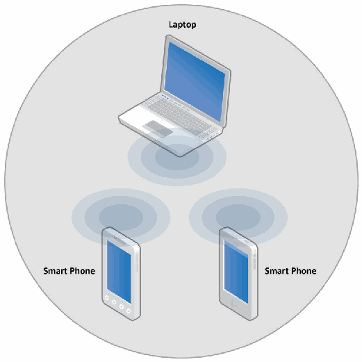
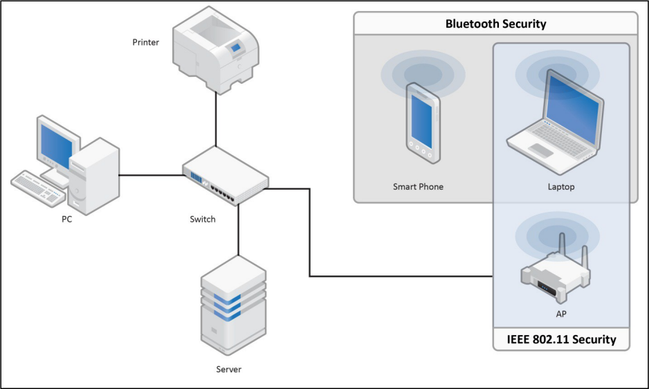
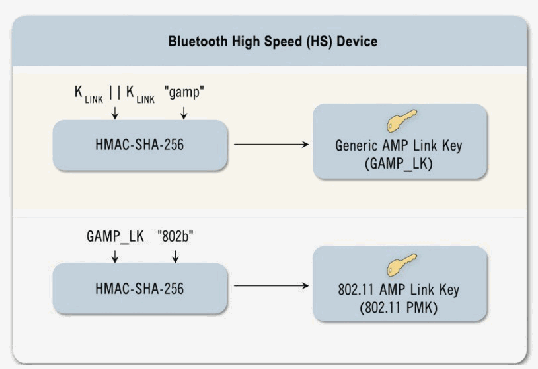
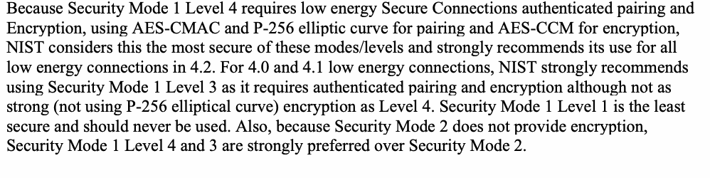
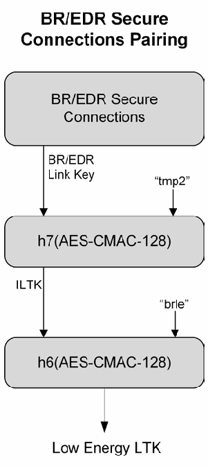
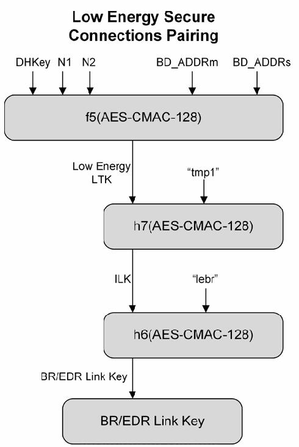

NIST Special Publication · PDF 原文抽出
Guide to Bluetooth Security
Bluetoothセキュリティガイド（2022年1月更新を含む）
NIST SP 800-121 Rev. 2（Guide to Bluetooth Security）の英文と日本語訳を段落ごとに並べた閲覧用ページです。Bluetooth無線技術のセキュリティ機能を説明し、Bluetooth 1.1から4.2までを利用する組織が安全に導入・運用するための推奨事項を示します。 翻訳は有志による非公式のもので、NIST および米国商務省が作成・承認・推奨したものではありません。要件の確認にはNIST の正式版 PDFを参照してください。
NIST Special Publication 800-121
NIST 特別刊行物 800-121
Revision 2
改訂第2版
Guide to Bluetooth Security
Bluetoothセキュリティガイド (Guide to Bluetooth Security)
John Padgette John Bahr Mayank Batra Marcel Holtmann Rhonda Smithbey Lily Chen Karen Scarfone
John Padgette、John Bahr、Mayank Batra、Marcel Holtmann、Rhonda Smithbey、Lily Chen、Karen Scarfone
This publication is available free of charge from: https://doi.org/10.6028/NIST.SP.800-121r2-upd1
本刊行物は次のURLから無料で入手できる: https://doi.org/10.6028/NIST.SP.800-121r2-upd1
［NIST のロゴ。公的な標章のため、この非公式サイトには掲載していない。原本 PDF を参照。］
NIST Special Publication 800-121
NIST 特別刊行物 800-121
Revision 2
改訂第2版
Guide to Bluetooth Security
Bluetoothセキュリティガイド (Guide to Bluetooth Security)
John Padgette
John Padgette
Accenture Federal Services
Accenture Federal Services
Arlington, VA
バージニア州アーリントン
John Bahr
John Bahr
Bahr Engineering
Bahr Engineering
Superior, CO
コロラド州スペリオル
Mayank Batra Qualcomm Tech. Intl., Ltd.
Mayank Batra、Qualcomm Tech. Intl., Ltd.
Cambridge, United Kingdom
英国ケンブリッジ
Marcel Holtmann Intel Corporation Munich, Germany
Marcel Holtmann、Intel Corporation、ドイツ・ミュンヘン
Rhonda Smithbey
Rhonda Smithbey
Spanalytics
Spanalytics
Richmond, VA
バージニア州リッチモンド
Lily Chen
Lily Chen
Computer Security Division Information
コンピュータセキュリティ部門 情報
Technology Laboratory
技術研究所
Karen Scarfone
Karen Scarfone
Scarfone Cybersecurity
Scarfone Cybersecurity
Clifton, VA
バージニア州クリフトン
This publication is available free of charge from: https://doi.org/10.6028/NIST.SP.800-121r2-upd1
本刊行物は次のURLから無料で入手できる: https://doi.org/10.6028/NIST.SP.800-121r2-upd1
May 2017
2017年5月
INCLUDES UPDATES AS OF 1-19-2022; SEE IX
2022年1月19日現在の更新を含む。IXを参照。
U.S. Department of Commerce Wilbur L. Ross, Jr., Secretary
米国商務省 Wilbur L. Ross, Jr. 長官
National Institute of Standards and Technology
米国国立標準技術研究所
Kent Rochford, Acting NIST Director and Under Secretary of Commerce for Standards and Technology
Kent Rochford、NIST所長代行兼商務省標準技術担当次官
Authority
権限
This publication has been developed by NIST in accordance with its statutory responsibilities under the Federal Information Security Modernization Act (FISMA) of 2014, 44 U.S.C. § 3551 et seq., Public Law (P.L.) 113-283. NIST is responsible for developing information security standards and guidelines, including minimum requirements for federal information systems, but such standards and guidelines shall not apply to national security systems without the express approval of appropriate federal officials exercising policy authority over such systems. This guideline is consistent with the requirements of the Office of Management and Budget (OMB) Circular A-130.
本刊行物は、2014年連邦情報セキュリティ近代化法 (FISMA)、44 U.S.C. § 3551 et seq.、公法 (P.L.) 113-283 に基づく法定責務に従い、NISTが作成した。NISTは、連邦情報システムの最低要件を含む情報セキュリティ標準およびガイドラインを策定する責任を負う。ただし、国家安全保障システムに対しては、当該システムに関する政策権限を行使する適切な連邦当局者の明示的な承認がない限り、これらの標準およびガイドラインを適用してはならない (shall not)。本ガイドラインは、行政管理予算局 (OMB) Circular A-130 の要件に整合している。
Nothing in this publication should be taken to contradict the standards and guidelines made mandatory and binding on federal agencies by the Secretary of Commerce under statutory authority. Nor should these guidelines be interpreted as altering or superseding the existing authorities of the Secretary of Commerce, Director of the OMB, or any other federal official. This publication may be used by nongovernmental organizations on a voluntary basis and is not subject to copyright in the United States. Attribution would, however, be appreciated by NIST.
本刊行物のいかなる記述も、法定権限に基づいて商務長官が連邦機関に義務付け、拘束力を持たせた標準およびガイドラインに反するものと解釈すべきではない (should)。また、これらのガイドラインは、商務長官、OMB長官、またはその他の連邦当局者が有する既存の権限を変更または置換するものと解釈すべきではない (should)。本刊行物は非政府組織が任意に使用してもよく (may)、米国では著作権の対象ではない。ただし、NISTへの帰属を明記していただければ幸いである (would)。
National Institute of Standards and Technology Special Publication 800-121 Revision 2 Natl. Inst. Stand. Technol. Spec. Publ. 800-121 Rev. 2, 68 pages (May 2017) CODEN: NSPUE2
National Institute of Standards and Technology Special Publication 800-121 Revision 2、Natl. Inst. Stand. Technol. Spec. Publ. 800-121 Rev. 2、68ページ (2017年5月)、CODEN: NSPUE2
This publication is available free of charge from: https://doi.org/10.6028/NIST.SP.800-121r2-upd1
本刊行物は次のURLから無料で入手できる: https://doi.org/10.6028/NIST.SP.800-121r2-upd1
Certain commercial entities, equipment, or materials may be identified in this document in order to describe an experimental procedure or concept adequately. Such identification is not intended to imply recommendation or endorsement by NIST, nor is it intended to imply that the entities, materials, or equipment are necessarily the best available for the purpose.
実験手順または概念を適切に説明するため、本書では特定の商業組織、機器、または材料を識別する場合がある (may)。その識別は、NISTによる推奨または支持を意味することを意図したものではなく、また当該組織、材料、または機器が、その目的に利用できるものの中で必ず最良であると示唆することを意図したものでもない。
There may be references in this publication to other publications currently under development by NIST in accordance with its assigned statutory responsibilities. The information in this publication, including concepts and methodologies, may be used by federal agencies even before the completion of such companion publications. Thus, until each publication is completed, current requirements, guidelines, and procedures, where they exist, remain operative. For planning and transition purposes, federal agencies may wish to closely follow the development of these new publications by NIST.
本刊行物では、割り当てられた法定責務に従ってNISTが現在策定中の他の刊行物を参照する場合がある (may)。本刊行物に記載されている情報（概念および方法論を含む）は、関連する刊行物が完成する前であっても、連邦機関が使用してよい (may)。したがって、各刊行物が完成するまでは、現行の要件、ガイドライン、および手順が存在する場合、それらは引き続き有効である。計画および移行のため、連邦機関は、NISTによるこれらの新刊行物の策定状況を注意深く追跡することを望む場合がある (may)。
Organizations are encouraged to review all draft publications during public comment periods and provide feedback to NIST. Many NIST cybersecurity publications, other than the ones noted above, are available at http://csrc.nist.gov/publications.
組織には、すべての草案刊行物をパブリックコメント期間中に確認し、NISTにフィードバックを提供することが推奨される。上記で示したもの以外にも、多くのNISTサイバーセキュリティ刊行物が http://csrc.nist.gov/publications で入手できる。
Comments on this publication may be submitted to: National Institute of Standards and Technology Attn: Computer Security Division, Information Technology Laboratory 100 Bureau Drive (Mail Stop 8930) Gaithersburg, MD 20899-8930 Email: 800-121r2comments@nist.gov
本刊行物に関するコメントは、次の宛先に提出できる：National Institute of Standards and Technology 宛先：Computer Security Division, Information Technology Laboratory 100 Bureau Drive (Mail Stop 8930) Gaithersburg, MD 20899-8930 Email: 800-121r2comments@nist.gov
All comments are subject to release under the Freedom of Information Act (FOIA).
すべてのコメントは、情報公開法（FOIA）に基づいて公開される場合がある。
Reports on Computer Systems Technology
コンピュータシステム技術に関する報告書
The Information Technology Laboratory (ITL) at the National Institute of Standards and Technology (NIST) promotes the U.S. economy and public welfare by providing technical leadership for the Nation’s measurement and standards infrastructure. ITL develops tests, test methods, reference data, proof of concept implementations, and technical analyses to advance the development and productive use of information technology. ITL’s responsibilities include the development of management, administrative, technical, and physical standards and guidelines for the cost-effective security and privacy of other than national security-related information in federal information systems. The Special Publication 800-series reports on ITL’s research, guidelines, and outreach efforts in information system security, and its collaborative activities with industry, government, and academic organizations.
米国国立標準技術研究所（NIST）の情報技術研究所（ITL）は、米国の計量・標準基盤に対する技術的リーダーシップを通じ、米国経済と公共福祉の向上を推進している。ITLは、情報技術の発展と生産的な利用を促進するため、試験、試験方法、参照データ、概念実証の実装、技術分析を行う。ITLは、連邦情報システムにおける国家安全保障関連以外の情報の費用対効果に優れたセキュリティとプライバシーを実現するため、管理、事務、技術、物理面の標準とガイドラインを策定する責務を負う。Special Publication 800シリーズは、情報システムセキュリティに関するITLの研究、ガイドライン、普及活動と、産業界、政府、学術界との共同活動を報告するものである。
Abstract
概要
Bluetooth wireless technology is an open standard for short-range radio frequency communication used primarily to establish wireless personal area networks (WPANs), and has been integrated into many types of business and consumer devices. This publication provides information on the security capabilities of Bluetooth and gives recommendations to organizations employing Bluetooth wireless technologies on securing them effectively. The Bluetooth versions within the scope of this publication are versions 1.1, 1.2, 2.0 + Enhanced Data Rate (EDR), 2.1 + EDR, 3.0 + High Speed (HS), 4.0, 4.1, and 4.2. Versions 4.0 and later support the low energy feature of Bluetooth.
Bluetooth無線技術は、主に無線パーソナルエリアネットワーク（WPAN）の構築に用いられる短距離無線周波数通信のオープン標準であり、さまざまな業務用・消費者向けデバイスに組み込まれている。本書ではBluetoothのセキュリティ機能を説明し、Bluetooth無線技術を利用する組織が効果的に保護するための推奨事項を示す。本書の対象となるBluetoothのバージョンは、1.1、1.2、2.0 + Enhanced Data Rate（EDR）、2.1 + EDR、3.0 + High Speed（HS）、4.0、4.1、4.2である。バージョン4.0以降は、Bluetooth Low Energy機能をサポートしている。
Keywords
キーワード
Bluetooth; information security; network security; wireless networking; wireless personal area networks.
Bluetooth、情報セキュリティ、ネットワークセキュリティ、無線ネットワーク、無線パーソナルエリアネットワーク。
Acknowledgments
謝辞
The authors, John Padgette of Accenture, John Bahr of Bahr Engineering (representing Philips Healthtech), Mayank Batra of Qualcomm, Marcel Holtmann of Intel, Rhonda Smithbey of Spanalytics, Lily Chen of the National Institute of Standards and Technology (NIST), and Karen Scarfone of Scarfone Cybersecurity, wish to thank their colleagues in the Bluetooth Security Experts Group (SEG) who contributed technical content and reviewed drafts of this document. The authors greatly appreciate the comments and feedback provided by Mark Nichols of Spanalytics, and the contributions of Alan Kozlay of Biometric Associates, LP. The authors would also like to acknowledge Catherine Brooks of the Bluetooth SIG technical staff for providing the new graphics. Lily Chen would like to acknowledge her NIST colleague Noah Waller for the help in drafting the errata.
著者であるAccentureのJohn Padgette、Bahr Engineering（Philips Healthtechを代表）のJohn Bahr、QualcommのMayank Batra、IntelのMarcel Holtmann、SpanalyticsのRhonda Smithbey、米国国立標準技術研究所（NIST）のLily Chen、およびScarfone CybersecurityのKaren Scarfoneは、本書の技術的内容に貢献し草稿をレビューしたBluetooth Security Experts Group（SEG）の同僚に感謝する。著者は、SpanalyticsのMark Nicholsから提供されたコメントとフィードバック、およびBiometric Associates, LPのAlan Kozlayによる貢献に深く感謝する。また著者は、新しい図版を提供したBluetooth SIG技術スタッフのCatherine Brooksに謝意を表する。Lily Chenは、正誤表の起草を支援したNISTの同僚Noah Wallerに謝意を表する。
Note to Readers
読者への注意
This document is the second revision to NIST SP 800-121, Guide to Bluetooth Security. Updates in this revision include an introduction to and discussion of Bluetooth 4.1 and 4.2 security mechanisms and recommendations, including Secure Connections for BR/EDR and low energy.
本書は、NIST SP 800-121『Bluetoothセキュリティガイド』の第2改訂版である。この改訂における更新には、BR/EDRおよびLow Energy向けのSecure Connectionsを含む、Bluetooth 4.1および4.2のセキュリティ機構と推奨事項の紹介および解説が含まれる。
Executive Summary
エグゼクティブサマリー
Bluetooth is an open standard for short-range radio frequency (RF) communication. Bluetooth wireless technology is used primarily to establish wireless personal area networks (WPANs). Bluetooth has been integrated into many types of business and consumer devices, including cell phones, laptops, automobiles, medical devices, printers, keyboards, mice, headsets, and, more recently, medical devices and personal devices (such as smart watches, music speakers, home appliances, fitness monitors, and trackers). This allows users to form ad hoc networks between a wide variety of devices to transfer voice and data. This document provides an overview of Bluetooth wireless technology and discusses related security concerns.
Bluetoothは、短距離無線周波数（RF）通信のオープン標準である。Bluetooth無線技術は、主に無線パーソナルエリアネットワーク（WPAN）を確立するために使用される。Bluetoothは、携帯電話、ノートパソコン、自動車、医療機器、プリンター、キーボード、マウス、ヘッドセット、さらに最近では医療機器および個人用デバイス（スマートウォッチ、音楽用スピーカー、家電製品、フィットネスモニター、トラッカーなど）を含む、多くの種類の業務用および消費者向けデバイスに組み込まれている。これにより、利用者は多種多様なデバイス間でアドホックネットワークを形成し、音声やデータを転送できる。本書は、Bluetooth無線技術の概要を示し、関連するセキュリティ上の懸念を論じる。
Several Bluetooth versions are currently in use in commercial devices, while the most current version can be found at bluetooth.com. At the time of writing, Bluetooth 4.0 (adopted June 2010) is the most prevalent. The most recent versions include Bluetooth 4.1 and Bluetooth 4.2. Bluetooth 4.1 (adopted December 2013) improved the strengths of the Basic Rate/Enhanced Data Rate (BR/EDR) technology cryptographic key, device authentication, and encryption by making use of Federal Information Processing Standard (FIPS)-approved algorithms. Bluetooth 4.2 (adopted December 2014) improved the strength of the low energy technology cryptographic key by making use of FIPS-approved algorithms, and provided means to convert BR/EDR technology keys to low energy technology keys and vice versa. This publication addresses the security of all versions of Bluetooth.
現在、商用デバイスでは複数のBluetoothバージョンが使用されているが、最新バージョンはbluetooth.comで確認できる。本書の執筆時点では、Bluetooth 4.0（2010年6月採択）が最も普及している。最も新しいバージョンには、Bluetooth 4.1およびBluetooth 4.2がある。Bluetooth 4.1（2013年12月採択）は、連邦情報処理標準（FIPS）承認アルゴリズムを利用することにより、Basic Rate/Enhanced Data Rate（BR/EDR）技術の暗号鍵、デバイス認証、および暗号化の強度を向上させた。Bluetooth 4.2（2014年12月採択）は、FIPS承認アルゴリズムを利用することによりLow Energy技術の暗号鍵の強度を向上させ、BR/EDR技術の鍵をLow Energy技術の鍵に変換する手段およびその逆の変換を行う手段を提供した。本書は、すべてのバージョンのBluetoothのセキュリティを扱う。
Bluetooth wireless technology and associated devices are susceptible to general wireless networking threats, such as denial of service (DoS) attacks, eavesdropping, man-in-the-middle (MITM) attacks, message modification, and resource misappropriation. They are also threatened by more specific attacks related to Bluetooth wireless technology that target known vulnerabilities in Bluetooth implementations and specifications. Attacks against improperly secured Bluetooth implementations can provide attackers with unauthorized access to sensitive information and unauthorized use of Bluetooth devices and other systems or networks to which the devices are connected.
Bluetooth無線技術および関連デバイスは、サービス拒否（DoS）攻撃、盗聴、中間者（MITM）攻撃、メッセージの改変、資源の不正流用といった、無線ネットワーク全般の脅威の影響を受けやすい。また、Bluetoothの実装および仕様における既知の脆弱性を標的とする、Bluetooth無線技術に関連したより固有の攻撃にも脅かされている。適切に保護されていないBluetooth実装に対する攻撃により、攻撃者は、機微な情報への不正アクセス、ならびにBluetoothデバイスおよび当該デバイスが接続されている他のシステムやネットワークの不正使用が可能になるおそれがある。
To improve the security of Bluetooth implementations, organizations should implement the following recommendations:
Bluetooth実装のセキュリティを向上させるため、組織は次の推奨事項を実施すべきである。
Organizations should use the strongest Bluetooth security mode that is available for their Bluetooth devices.
組織は、Bluetoothデバイスで利用可能な最も強固なBluetoothセキュリティモードを使用することが望まれる。
The Bluetooth specifications define several security modes, and each version of Bluetooth supports some, but not all, of these modes. The modes differ primarily by the point at which the device initiates security; hence, these modes define how well they protect Bluetooth communications and devices from potential attack. Some security modes have configurable security level settings which affect the security of the connections.
Bluetooth仕様では複数のセキュリティモードが定められており、Bluetoothの各バージョンはその一部をサポートする。各モードの主な違いは、デバイスがセキュリティを開始するタイミングである。この違いによって、Bluetoothの通信とデバイスが潜在的な攻撃からどの程度保護されるかが決まる。一部のセキュリティモードでは、接続のセキュリティに影響するセキュリティレベルを設定できる。
For Bluetooth 4.1 devices that have BR, EDR, and High Speed (HS) features, Security Mode 4, Level 4 is recommended because it requires Secure Connections, which uses authenticated pairing and encryption using 128-bit strength keys generated using FIPS-approved Advanced Encryption Standard (AES) encryption. For Bluetooth 2.1 through 4.0 devices, Security Mode 4, Level 3 is the most secure, and for Bluetooth 2.0 and older devices Security Mode 3 is recommended. Security Modes 2 and 4 can also use authentication and encryption, but do not initiate them until after the Bluetooth physical link has already been fully established and logical channels partially established. Security Mode 1 devices never initiate security and therefore should never be used.
BR、EDR、High Speed（HS）機能を備えたBluetooth 4.1デバイスには、Secure Connectionsを必須とするセキュリティモード4、レベル4が推奨される。このモードでは、FIPS承認済みのAdvanced Encryption Standard（AES）暗号化を用いて生成した、128ビット強度の鍵による認証済みペアリングと暗号化が必要である。Bluetooth 2.1～4.0のデバイスではセキュリティモード4、レベル3が最も安全である。Bluetooth 2.0以前のデバイスにはセキュリティモード3が推奨される。セキュリティモード2と4も認証と暗号化を使用できるが、Bluetoothの物理リンクが完全に確立され、論理チャネルが部分的に確立された後でなければ、それらを開始しない。セキュリティモード1のデバイスはセキュリティを開始しないため、使用すべきではない。
For the low energy feature of Bluetooth (introduced in Version 4.0 and updated in 4.1 and 4.2), Security Mode 1 Level 4 is the strongest mode because it requires authenticated low energy Secure Connections pairing with Elliptic Curve Diffie-Hellman (ECDH) based encryption. Security Mode 1 Level 3 requires authenticated pairing and encryption but does not use ECDH-based cryptography and thus provides limited eavesdropping protection due to weak encryption. Other security modes/levels allow unauthenticated pairing (meaning no MITM protection is provided during cryptographic key establishment), and some do not require any security at all.
BluetoothのLow Energy機能（Version 4.0で導入され、4.1および4.2で更新）では、Security Mode 1 Level 4が最も強固なモードである。これは、楕円曲線ディフィー・ヘルマン（ECDH）に基づく暗号化を伴う、認証付きLow Energy Secure Connectionsペアリングを必要とするためである。Security Mode 1 Level 3は認証付きペアリングと暗号化を必要とするが、ECDHベースの暗号技術を使用しないため、暗号化が弱く、盗聴に対する保護は限定的である。その他のセキュリティモード/レベルでは、未認証ペアリング（暗号鍵確立時にMITMに対する保護が提供されないことを意味する）が許可され、一部ではセキュリティがまったく必要とされない。
The available modes vary based on the Bluetooth specification version supported by the device, so organizations should choose the most secure mode available for each case.
利用可能なモードはデバイスがサポートするBluetooth仕様のバージョンによって異なるため、組織はそれぞれのケースで利用可能な最も安全なモードを選択すべきである (should)。
Organizations should address Bluetooth wireless technology in their security policies and change default settings of Bluetooth devices to reflect the policies.
組織はセキュリティポリシーでBluetooth無線技術を扱い、Bluetoothデバイスの既定設定をポリシーに反映するよう変更すべきである (should)。
A security policy that defines requirements for Bluetooth security is the foundation for all other Bluetooth related countermeasures. The policy should include a list of approved uses for Bluetooth, a list of the types of information that may be transferred over Bluetooth networks, and, if they are used, requirements for selecting and using Bluetooth personal identification numbers (PINs).1 A baseline configuration for Bluetooth default settings should accompany the security policy. The checklist in Table 4-2 provides a “Technical Recommendations” section which may be used as a guide. After establishing a Bluetooth security policy, organizations should ensure that Bluetooth devices’ default settings are reviewed and changed as needed so that they comply with the security policy requirements. For example, a typical requirement is to disable unneeded Bluetooth profiles and services to reduce the number of vulnerabilities that attackers could attempt to exploit. When available, a centralized security policy management approach should be used to ensure device configurations are compliant.
Bluetoothセキュリティ要件を定めるセキュリティポリシーは、Bluetooth関連の他のすべての対策の基礎となる。そのポリシーには、Bluetoothの承認済み用途一覧、Bluetoothネットワーク上で転送してよい (may) 情報の種類の一覧、およびBluetooth個人識別番号 (PIN) を使用する場合の選択・使用要件を含めるべきである (should)。1 Bluetoothの既定設定に関するベースライン構成をセキュリティポリシーに添付すべきである (should)。表4-2のチェックリストには、指針として使用できる (may)「技術的推奨事項」セクションがある。Bluetoothセキュリティポリシーを確立した後、組織はBluetoothデバイスの既定設定を確認し、セキュリティポリシーの要件に適合するよう必要に応じて変更すべきである (should)。たとえば、攻撃者が悪用を試み得る (could) 脆弱性の数を減らすため、不要なBluetoothプロファイルおよびサービスを無効にすることが一般的な要件である。利用可能な場合は、デバイス構成が適合していることを確実にするため、集中型セキュリティポリシー管理方式を使用すべきである (should)。
Organizations should ensure that their Bluetooth users are made aware of their security-related responsibilities regarding Bluetooth use.
組織は、Bluetooth利用に関するセキュリティ上の責任をBluetoothユーザーに認識させるべきである (should)。
Annual required security awareness programs should be updated to include Bluetooth security policy guidelines. A security awareness program helps educate and train users to follow security practices that protect the assets of an organization and prevent security incidents. For example, users should be provided with a list of precautionary measures they should take to better protect handheld Bluetooth devices from theft. Users should also be made aware of other actions to take regarding Bluetooth device security, such as ensuring that Bluetooth devices are turned off when they are not needed to minimize exposure to malicious activities, and performing Bluetooth device pairing as infrequently as possible and ideally in a physically secure area where attackers cannot observe passkey entry and eavesdrop on Bluetooth pairing-related communications.
毎年実施が義務付けられているセキュリティ意識向上プログラムを更新し、Bluetoothセキュリティポリシーの指針を含めるべきである (should)。セキュリティ意識向上プログラムは、組織の資産を保護し、セキュリティインシデントを防止するセキュリティ実践に従うよう、ユーザーを教育・訓練するのに役立つ。たとえば、携帯型Bluetoothデバイスを盗難からより適切に保護するために取るべき (should) 予防措置の一覧をユーザーに提供すべきである (should)。Bluetoothデバイスのセキュリティに関して取るべき他の行動についてもユーザーに知らせるべきである (should)。たとえば、悪意ある活動にさらされる機会を最小限にするため、不要なときはBluetoothデバイスの電源を切ること、またBluetoothデバイスのペアリングは可能な限り頻度を抑え、理想的には攻撃者がパスキー入力を確認したりBluetoothペアリング関連の通信を盗聴したりできない (cannot) 物理的に安全な場所で行うことが挙げられる。
Table of Contents
目次
1 Introduction — 1
1 はじめに — 1
1.1 Purpose and Scope — 1
1.1 目的および適用範囲 — 1
1.2 Audience and Assumptions — 1
1.2 対象読者および前提 — 1
1.3 Document Organization — 1
1.3 文書の構成 — 1
2 Overview of Bluetooth Wireless Technology — 3
2 Bluetooth無線技術の概要 — 3
2.1 Bluetooth Wireless Technology Characteristics — 4
2.1 Bluetooth無線技術の特性 — 4
2.1.1 Basic, Enhanced, and High Speed Data Rates — 5
2.1.1 Basic、Enhanced、およびHigh Speedデータレート — 5
2.1.2 Low Energy — 6
2.1.2 Low Energy — 6
2.1.3 Dual Mode Devices (Concurrent Low Energy & BR/EDR/HSSupport) — 7
2.1.3 デュアルモードデバイス（Low Energy & BR/EDR/HSの同時サポート） — 7
2.2 Bluetooth Architecture — 8
2.2 Bluetoothアーキテクチャ — 8
3 Bluetooth Security Features — 11
3 Bluetoothセキュリティ機能 — 11
3.1 Security Features of Bluetooth BR/EDR/HS — 12
3.1 Bluetooth BR/EDR/HSのセキュリティ機能 — 12
3.1.1 Pairing and Link Key Generation — 15
3.1.1 ペアリングおよびリンクキー生成 — 15
3.1.2 Authentication — 19
3.1.2 認証 — 19
3.1.3 Confidentiality — 23
3.1.3 機密性 — 23
3.1.4 Trust Levels, Service Security Levels, andAuthorization — 26
3.1.4 信頼レベル、サービスセキュリティレベル、および認可 — 26
3.2 Security Features of Bluetooth Low Energy — 27
3.2 Bluetooth Low Energyのセキュリティ機能 — 27
3.2.1 Low Energy Security Modes and Levels — 29
3.2.1 Low Energyのセキュリティモードおよびレベル — 29
3.2.2 Low Energy Pairing Methods — 29
3.2.2 Low Energyのペアリング方式 — 29
3.2.3 Legacy Low Energy Key Generation and Distribution — 33
3.2.3 レガシーLow Energyの鍵生成および配布 — 33
3.2.4 Low Energy Secure Connection Key Generation — 34
3.2.4 Low Energy Secure Connectionの鍵生成 — 34
3.2.5 Confidentiality, Authentication, and Integrity — 34
3.2.5 機密性、認証、および完全性 — 34
3.2.6 Low Energy Long Term Key Derivation from Bluetooth Link Key — 35
3.2.6 Bluetooth LinkKeyからのLow Energy Long Term Key導出 — 35
3.2.7 Bluetooth Link Key Derivation from Low Energy Long TermKey — 35
3.2.7 Low EnergyロングタームキーからのBluetoothリンクキー導出 — 35
4 Bluetooth Vulnerabilities, Threats, and Countermeasures — 37
4 Bluetoothの脆弱性、脅威、および対策 — 37
4.1 Bluetooth Vulnerabilities — 37
4.1 Bluetoothの脆弱性 — 37
4.2 Bluetooth Threats — 40
4.2 Bluetoothの脅威 — 40
4.3 Risk Mitigation and Countermeasures — 41
4.3 リスクの緩和および対策 — 41
4.4 Bluetooth Security Checklist — 42
4.4 Bluetoothセキュリティチェックリスト — 42
List of Appendices
付録一覧
Appendix A— Glossary — 50
付録A— 用語集 — 50
Appendix B— Acronyms and Abbreviations — 51
付録B— 頭字語および略語 — 51
Appendix C— Internal Bluetooth Functions — 54
付録C— Bluetooth内部機能 — 54
Appendix D— References — 55
付録D— 参考文献 — 55
Appendix E— Resources — 56
付録E— リソース — 56
List of Figures
図一覧
Figure 2-1. Bluetooth 4.x Device Architecture — 8
図2-1. Bluetooth 4.xデバイスアーキテクチャ — 8
Figure 2-2. Bluetooth Ad Hoc Topology — 9
図2-2. Bluetoothアドホック・トポロジ — 9
Figure 2-3. Bluetooth Networks (Multiple Scatternets) — 10
図2-3. Bluetoothネットワーク（複数のスキャタネット） — 10
Figure 3-1. Bluetooth Air-Interface Security — 11
図3-1. Bluetoothエアインターフェースのセキュリティ — 11
Figure 3-2. Link Key Generation from PIN — 16
図3-2. PINからのリンクキー生成 — 16
Figure 3-3. Link Key Establishment for Secure Simple Pairing — 18
図3-3. Secure Simple Pairingのリンクキー確立 — 18
Figure 3-4. AMP Link Key Derivation — 19
図3-4. AMPリンクキー導出 — 19
Figure 3-5. Bluetooth Legacy Authentication — 20
図3-5. Bluetoothレガシー認証 — 20
Figure 3-6. Bluetooth Secure Authentication — 22
図3-6. Bluetoothセキュア認証 — 22
Figure 3-7. Bluetooth E0 Encryption Procedure — 25
図3-7. Bluetooth E0暗号化手順 — 25
Figure 3-8. Bluetooth AES-CCM Encryption Procedure — 26
図3-8. Bluetooth AES-CCM暗号化手順 — 26
Figure 3-9. Bluetooth Low Energy Legacy Pairing — 30
図3-9. Bluetooth Low Energyレガシーペアリング — 30
Figure 3-10. Bluetooth Low Energy Secure Connections Pairing — 31
図3-10. Bluetooth Low Energy Secure Connectionsペアリング — 31
Figure 3-11. Low Energy Long Term Key Derivation from Bluetooth Link Key — 35
図3-11. Bluetooth Link KeyからのLow Energy Long Term Key導出 — 35
Figure 3-12. Bluetooth Link Key Derivation from Low Energy Long Term Key — 36
図3-12. Low Energy Long Term KeyからのBluetooth Link Key導出 — 36
List of Tables
表一覧
Table 2-1. Bluetooth Device Classes of Power Management — 5
表2-1. Bluetoothデバイスの電力管理クラス — 5
Table 2-2. Key Differences Between Bluetooth BR/EDR and Low Energy — 7
表2-2. Bluetooth BR/EDRとLow Energyの主な相違点 — 7
Table 3-1. BR/EDR/HS Security Modes — 12
表3-1. BR/EDR/HSセキュリティモード — 12
Table 3-2. BR/EDR/HS Security Mode 4 Levels Summary — 14
表3-2. BR/EDR/HS Security Mode 4のレベル概要 — 14
Table 3-3. Most Secure Mode for a Pair of Bluetooth Devices — 14
表3-3. Bluetoothデバイス2台に対する最も安全なモード — 14
Table 3-4. Most Secure Level in Mode 4 for a Pair of Bluetooth Devices — 15
表3-4. Bluetoothデバイス2台に対するMode 4の最も安全なレベル — 15
Table 4-1. Key Problems with Native Bluetooth Security — 37
表4-1. Bluetoothネイティブセキュリティの主な問題 — 37
Table 4-2. Bluetooth Piconet Security Checklist — 43
表4-2. Bluetoothピコネット・セキュリティチェックリスト — 43
Table 4-3. Recommendation Mappings to NIST SP 800-53 Security Controls — 49
表4-3. 推奨事項とNIST SP 800-53セキュリティ管理策の対応付け — 49
Errata
正誤表
This table contains changes that have been incorporated into NIST Special Publication (SP) 800-121 Revision 1. Errata updates can include corrections, clarifications, or other minor changes in the publication that are either editorial or substantive. Any potential updates for this document that are not yet published in a formal errata update or revision—including additional issues and potential corrections—will be posted as they are identified (see SP 800-121, Revision 2 publication details).
この表は、NIST特別刊行物 (SP) 800-121 Revision 1に反映された変更を示す。正誤表による更新には、刊行物における編集上または実質的な訂正、明確化、その他の軽微な変更が含まれる場合がある (can)。正式な正誤表または改訂版としてまだ公表されていない本書の更新候補（追加の問題や修正候補を含む）は、特定され次第掲載される (will)（SP 800-121, Revision 2の刊行情報を参照）。
| Date | Type | Change | Pages |
|---|---|---|---|
| 1-19-2022 | Substantive | Changed the second paragraph under the bullets in Section 3.2.1. Replaced “Because Security Mode 1 Level 4 requires low energy Secure Connections authenticated pairing and encryption using AES-CMAC and P-256 elliptic curve, NIST considers this the most secure of these modes/levels and strongly recommends its use for all low energy connections in 4.2.” with “Because Security Mode 1 Level 4 requires low energy Secure Connections authenticated pairing and encryption, using AES-CMAC and P-256 elliptic curve for pairing and AES-CCM for encryption, NIST considers this the most secure of these modes/levels and strongly recommends its use for all low energy connections in 4.2.” | 29 |
| 日付 | 種類 | 変更 | ページ |
|---|---|---|---|
| 1-19-2022 | 実質的変更 | セクション3.2.1の箇条書きの下にある第2段落を変更。 「Security Mode 1 Level 4はAES-CMACおよびP-256楕円曲線を用いたLow Energy Secure Connections認証付きペアリングと暗号化を必要とするため、NISTはこれを当該モード/レベルの中で最も安全とみなし、4.2におけるすべてのLow Energy接続での使用を強く推奨する。」を、「Security Mode 1 Level 4はLow Energy Secure Connections認証付きペアリングと暗号化を必要とし、ペアリングにはAES-CMACおよびP-256楕円曲線を、暗号化にはAES-CCMを使用するため、NISTはこれを当該モード/レベルの中で最も安全とみなし、4.2におけるすべてのLow Energy接続での使用を強く推奨する。」に置換。 | 29 |
1 Introduction
1 はじめに
1.1 Purpose and Scope
1.1 目的および適用範囲
The purpose of this document is to provide information to organizations on the security capabilities of Bluetooth and provide recommendations to organizations employing Bluetooth wireless technologies on securing them effectively. The Bluetooth versions within the scope of this publication are versions 1.1, 1.2, 2.0 + Enhanced Data Rate (EDR), 2.1 + EDR, 3.0 + High Speed (HS), 4.0, 4.1, and 4.2. Bluetooth with low energy functionality is present in 4.0 and later. Bluetooth 5.0 is not in the scope of this document.
本書の目的は、Bluetoothのセキュリティ機能に関する情報を組織に提供し、Bluetooth無線技術を導入する組織に、それらを効果的に保護するための推奨事項を示すことである。本刊行物の適用範囲に含まれるBluetoothのバージョンは、1.1、1.2、2.0 + Enhanced Data Rate (EDR)、2.1 + EDR、3.0 + High Speed (HS)、4.0、4.1、および4.2である。Low Energy機能を備えたBluetoothは4.0以降に存在する。Bluetooth 5.0は本書の適用範囲に含まれない。
1.2 Audience and Assumptions
1.2 対象読者および前提
This document discusses Bluetooth wireless technologies and security capabilities in technical detail. This document assumes that the readers have at least some operating system, wireless networking, and security knowledge. Because of the constantly changing nature of the wireless security industry and the threats and vulnerabilities to the technologies, readers are strongly encouraged to take advantage of other resources (including those listed in this document) for more current and detailed information.
本書では、Bluetooth無線技術およびそのセキュリティ機能について技術的に詳しく説明する。本書の読者は、少なくとも一定のオペレーティングシステム、無線ネットワーク、およびセキュリティに関する知識を有していることを前提とする。無線セキュリティ業界が絶えず変化し、技術に対する脅威および脆弱性も変化するため、読者には、より新しく詳細な情報を得るために他のリソース（本書に記載されたものを含む）も活用することを強く推奨する。
The following list highlights people with differing roles and responsibilities that might use this document:
次の一覧は、本書を利用する可能性のある、さまざまな役割および責任を持つ人々を示す:
•Government managers (e.g., chief information officers and senior managers) who oversee the use and security of Bluetooth within their organizations
•Bluetoothの利用およびセキュリティを組織内で監督する政府機関の管理者（例: 最高情報責任者および上級管理者）
•Systems engineers and architects who design and implement Bluetooth wireless technologies
•Bluetooth無線技術を設計・実装するシステムエンジニアおよびアーキテクト
•Auditors, security consultants, and others who perform security assessments of wireless environments
•無線環境のセキュリティ評価を実施する監査人、セキュリティコンサルタント、その他の関係者
•Researchers and analysts who are trying to understand the underlying wireless technologies.
•基盤となる無線技術を理解しようとする研究者およびアナリスト。
1.3 Document Organization
1.3 文書の構成
The remainder of this document is composed of the following sections and appendices:
本書の残りの部分は、次のセクションおよび付録で構成される:
•Section 2 provides an overview of Bluetooth wireless technology, including its benefits, technical characteristics, and architecture.
•セクション2では、Bluetooth無線技術の利点、技術的特性、およびアーキテクチャを含む概要を示す。
•Section 3 discusses the security features defined in the Bluetooth specifications and highlights their limitations.
•セクション3では、Bluetooth仕様で定義されたセキュリティ機能を説明し、その限界を示す。
•Section 4 examines common vulnerabilities and threats involving Bluetooth wireless technologies and makes recommendations for countermeasures to improve Bluetooth security.
•セクション4では、Bluetooth無線技術に関する一般的な脆弱性および脅威を検討し、Bluetoothセキュリティを向上させるための対策を推奨する。
•Appendix A provides a glossary of terms.
•付録Aでは用語集を示す。
•Appendix B provides a list of acronyms and abbreviations used in this document.
•付録Bでは、本書で使用する頭字語および略語を一覧にする。
•Appendix C lists Bluetooth functions.
•付録CではBluetoothの機能を一覧にする。
•Appendix D lists Bluetooth references.
•付録DではBluetoothの参考文献を一覧にする。
•Appendix E lists Bluetooth online resources.
•付録EではBluetooth関連のオンラインリソースを一覧にする。
2 Overview of Bluetooth Wireless Technology
2 Bluetooth無線技術の概要
Bluetooth is an open standard for short-range radio frequency (RF) communication. Bluetooth is used primarily to establish wireless personal area networks (WPANs). Bluetooth has been integrated into many types of business and consumer devices, including cell phones, laptops, automobiles, printers, keyboards, mice, headsets, and, more recently, medical devices and personal devices (such as smart watches, music speakers, home appliances, fitness monitors, and trackers). This allows users to form ad hoc networks between a wide variety of devices to transfer voice and data. Bluetooth is a low-cost, low-power technology that provides a mechanism for creating small wireless networks on an ad hoc basis, known as piconets.2 A piconet is composed of two or more Bluetooth devices in close physical proximity that operate on the same channel using the same frequency hopping sequence. An example of a piconet is a connection between a cell phone and a headset using Bluetooth wireless technology.
Bluetoothは、短距離無線周波数 (RF) 通信のオープン標準である。Bluetoothは主として無線パーソナルエリアネットワーク (WPAN) の構築に使用される。Bluetoothは、携帯電話、ノートパソコン、自動車、プリンター、キーボード、マウス、ヘッドセット、さらに近年では医療機器や個人用デバイス（スマートウォッチ、音楽スピーカー、家庭用電化製品、フィットネスモニター、トラッカーなど）を含む、さまざまな業務用および消費者向けデバイスに組み込まれている。これによりユーザーは、多種多様なデバイス間でアドホックネットワークを形成し、音声およびデータを転送できる。Bluetoothは低コスト・低消費電力の技術であり、ピコネットと呼ばれる小規模無線ネットワークをアドホックに構築する仕組みを提供する。2 ピコネットは、物理的に近接し、同じチャネル上で同じ周波数ホッピングシーケンスを使用して動作する2台以上のBluetoothデバイスで構成される。ピコネットの例として、Bluetooth無線技術を使用して携帯電話とヘッドセットを接続する構成がある。
Bluetooth piconets are often established on a temporary and changing basis, which offers communications flexibility and scalability between mobile devices. Some key benefits of Bluetooth are—
Bluetoothのピコネットは、一時的かつ変化する形で構築されることが多く、モバイルデバイス間の通信に柔軟性と拡張性をもたらす。Bluetoothの主な利点は次のとおりである—
•Cable replacement. Bluetooth replaces a variety of cables, such as those traditionally used for peripheral devices (e.g., mouse and keyboard connections), printers, and wired headsets and earbuds that interface with desktops, laptops, cell phones, etc.
•ケーブルの代替。Bluetoothは、周辺機器（例: マウスおよびキーボード接続）、プリンター、有線ヘッドセットおよびイヤホンなど、従来デスクトップ、ノートパソコン、携帯電話などに接続するために使用されていたさまざまなケーブルを置き換える。
•Ease of file sharing. A Bluetooth-enabled device can form a piconet to support file sharing capabilities with other Bluetooth devices, such as laptops.
•ファイル共有の容易さ。Bluetooth対応デバイスは、ノートパソコンなどの他のBluetoothデバイスとのファイル共有機能を実現するピコネットを形成できる (can)。
•Wireless synchronization. Bluetooth can provide automatic synchronization between Bluetooth-enabled devices. For example, Bluetooth allows synchronization of contact information between smartphones and automobiles.
•無線同期。Bluetoothは、Bluetooth対応デバイス間の自動同期を提供できる。たとえば、Bluetoothによってスマートフォンと自動車の間で連絡先情報を同期できる。
•Internet connectivity. A Bluetooth device with Internet connectivity can share that access with other Bluetooth devices. For example, a laptop can use a Bluetooth connection to leverage the personal hotspot capability of a smartphone to provide Internet access to the laptop.
•インターネット接続。インターネット接続機能を持つBluetoothデバイスは、その接続を他のBluetoothデバイスと共有できる。たとえば、ノートパソコンはBluetooth接続を使用してスマートフォンのパーソナルホットスポット機能を利用し、ノートパソコンにインターネットアクセスを提供できる。
Bluetooth was originally conceived by Ericsson in 1994. Ericsson, IBM, Intel, Nokia, and Toshiba formed the Bluetooth Special Interest Group (SIG), a not-for-profit trade association developed to drive development of Bluetooth products and serve as the governing body for Bluetooth specifications.3 Bluetooth is standardized within the IEEE 802.15 Working Group for Wireless Personal Area Networks that formed in 1999 as IEEE 802.15.1-2002.4
Bluetoothは1994年にEricssonが当初構想した。Ericsson、IBM、Intel、Nokia、およびToshibaはBluetooth Special Interest Group (SIG) を設立した。これはBluetooth製品の開発を推進し、Bluetooth仕様の管理団体として機能するために設立された非営利の業界団体である。3 Bluetoothは、1999年に設立された無線パーソナルエリアネットワーク向けIEEE 802.15 Working Group内で、IEEE 802.15.1-2002として標準化されている。4
This section provides an overview of Bluetooth, including frequency and data rates, range, and architecture.
本セクションでは、周波数およびデータレート、通信範囲、アーキテクチャなど、Bluetoothの概要を示す。
2.1 Bluetooth Wireless Technology Characteristics
2.1 Bluetooth無線技術の特性
Bluetooth operates in the unlicensed 2.4000 gigahertz (GHz) to 2.4835 GHz Industrial, Scientific, and Medical (ISM) frequency band. Numerous technologies operate in this band, including the IEEE 802.11b/g/n wireless local area network (WLAN) standard, making it somewhat crowded from the standpoint of the volume of wireless transmissions. Bluetooth employs frequency hopping spread spectrum (FHSS) technology for transmissions. FHSS reduces interference and transmission errors but provides minimal transmission security.
Bluetoothは、ライセンス不要の2.4000 gigahertz (GHz)～2.4835 GHzの産業・科学・医療用 (ISM) 周波数帯で動作する。この帯域ではIEEE 802.11b/g/n無線ローカルエリアネットワーク (WLAN) 標準など多数の技術が動作しており、無線送信量の観点では比較的混雑している。Bluetoothは送信に周波数ホッピング・スペクトラム拡散 (FHSS) 技術を用いる。FHSSは干渉および伝送エラーを低減するが、伝送のセキュリティはほとんど提供しない。
With FHSS technology, communications between Bluetooth Basic Rate (BR)/EDR devices use 79 different 1 megahertz (MHz) radio channels by hopping (i.e., changing) frequencies about 1600 times per second for data/voice links and 3200 times per second during page and inquiry scanning. A channel is used for a very short period (e.g., 625 μs for data/voice links), followed by a hop to another channel designated by a pre-determined pseudo-random sequence; this process is repeated continuously in the frequency hopping sequence.
FHSS技術では、Bluetooth Basic Rate (BR)/EDRデバイス間の通信に79個の1 megahertz (MHz)無線チャネルを使用し、データ/音声リンクでは毎秒約1600回、ページングおよび問い合わせスキャン中は毎秒3200回、周波数をホッピング（すなわち切り替え）する。各チャネルの使用時間は非常に短く（例: データ/音声リンクでは625 μs）、その後、事前に定められた擬似乱数シーケンスで指定された別のチャネルへホップする。この処理が周波数ホッピングシーケンス内で連続的に繰り返される。
Bluetooth low energy communication uses the same frequency range as BR/EDR devices but splits it instead into 40 channels of 2 MHz width. Three of these channels are used for advertising (broadcasting data and for connection setup) and the other 37 are data channels. These 40 channels, combined with a time division multiple access (TDMA) scheme, provide the two multiple access schemes for the low energy feature of Bluetooth. A polling scheme is used in which the first device sends a packet at a predetermined time and a corresponding device responds after a predetermined interval. These exchanges of data are known as either Advertising or Connection Events.
Bluetooth Low Energy通信はBR/EDRデバイスと同じ周波数範囲を使用するが、これを幅2 MHzの40チャネルに分割する。そのうち3チャネルはアドバタイジング（データのブロードキャストおよび接続設定）に使用し、残りの37チャネルはデータチャネルである。これら40チャネルと時分割多元接続 (TDMA) 方式を組み合わせ、BluetoothのLow Energy機能に2つの多元接続方式を提供する。ポーリング方式を採用し、最初のデバイスが所定時刻にパケットを送信し、対応するデバイスが所定の間隔後に応答する。これらのデータ交換は、アドバタイジングイベントまたは接続イベントと呼ばれる。
Bluetooth also provides for radio link power control, which allows devices to negotiate and adjust their radio power according to signal strength measurements. Each device in a Bluetooth network can determine its received signal strength indication (RSSI) and request that the other network device adjust its relative radio power level (i.e., incrementally increase or decrease the transmission power). This is performed to conserve power and/or to keep the received signal characteristics within a preferred range.
Bluetoothは無線リンク電力制御も提供し、これによりデバイスは信号強度の測定値に応じて無線出力を交渉・調整できる。Bluetoothネットワーク内の各デバイスは、自身の受信信号強度表示 (RSSI) を判定し、他方のネットワークデバイスに対して、その相対的な無線出力レベルを調整する（すなわち、送信出力を段階的に増加または減少させる）よう要求できる。これは、電力を節約するため、および/または受信信号の特性を望ましい範囲内に保つために行われる。
The combination of a frequency hopping scheme and radio link power control provides Bluetooth with some additional, albeit limited, protection from eavesdropping and malicious access. The frequency-hopping scheme, primarily a technique to avoid interference, makes it slightly more difficult for an adversary to locate and capture Bluetooth transmissions than to capture transmissions from fixed-frequency technologies, like those used in IEEE 802.11b/g. Research has shown that the Bluetooth frequency hopping sequence for an active piconet can be determined using relatively inexpensive hardware and free open source software.5
周波数ホッピング方式と無線リンク電力制御を組み合わせることで、Bluetoothは盗聴および悪意あるアクセスに対して、追加的ではあるが限定的な保護を得る。主として干渉回避の技法である周波数ホッピング方式により、IEEE 802.11b/gで使用されるような固定周波数技術の送信を傍受する場合と比べて、敵対者がBluetooth送信を特定して取得することがわずかに難しくなる。稼働中のピコネットのBluetooth周波数ホッピングシーケンスは、比較的安価なハードウェアと無料のオープンソースソフトウェアを使って特定できる (can) ことが研究で示されている。5
The range of Bluetooth BR/EDR devices is characterized by three classes that define power management. Table 2-1 summarizes the classes, including their power levels in milliwatts (mW) and decibels referenced to one milliwatt (dBm), and their operating ranges in meters (m).6 Most small, battery-powered devices are Class 2, while Class 1 devices are typically universal serial bus (USB) adapters for desktops and laptops, as well as access points and other mains powered devices. Many Bluetooth low energy devices are designed to run on very small batteries for a long period of time.
Bluetooth BR/EDRデバイスの通信範囲は、電力管理を定義する3つのクラスによって特徴付けられる。表2-1は、ミリワット (mW) および1ミリワットを基準とするデシベル (dBm) で示す各クラスの電力レベルと、メートル (m) で示す動作範囲を要約する。6 小型の電池駆動デバイスの多くはClass 2である一方、Class 1デバイスは通常、デスクトップおよびノートパソコン用のユニバーサル・シリアル・バス (USB) アダプター、アクセスポイント、その他の商用電源デバイスである。多くのBluetooth Low Energyデバイスは、非常に小型の電池で長期間動作するよう設計されている。
Table 2-1. Bluetooth Device Classes of Power Management
表2-1. Bluetoothデバイスの電力管理クラス
| Type | Power | Max Power Level | Designed Operating Range | Sample Devices |
|---|---|---|---|---|
| Class 1 | High | 100 mW (20 dBm) | Up to 100 m (328 feet) | USB adapters, access points |
| Class 1.5 (low energy)7 | Med-High | 10 mW (10 dBm) | Up to 30 m (100 feet), but typically 5 m (16 feet) | Beacons, wearable sensors |
| Class 2 | Medium | 2.5 mW (4 dBm) | Up to 10 m (33 feet) | Mobile devices, Bluetooth adapters, smart card readers |
| Class 3 | Low | 1 mW (0 dBm) | Up to 1 m (3 feet) | Bluetooth adapters |
| 種類 | 電力 | 最大電力レベル | 設計上の動作範囲 | デバイス例 |
|---|---|---|---|---|
| Class 1 | 高 | 100 mW (20 dBm) | 最大100 m（328フィート） | USBアダプター、アクセスポイント |
| Class 1.5（Low Energy）7 | 中～高 | 10 mW (10 dBm) | 最大30 m（100フィート）、ただし通常は5 m（16フィート） | ビーコン、ウェアラブルセンサー |
| Class 2 | 中 | 2.5 mW (4 dBm) | 最大10 m（33フィート） | モバイルデバイス、Bluetoothアダプター、スマートカードリーダー |
| Class 3 | 低 | 1 mW (0 dBm) | 最大1 m（3フィート） | Bluetoothアダプター |
To allow Bluetooth devices to find and establish communication with each other, discoverable and connectable modes are specified. A device in discoverable mode periodically monitors an inquiry scan physical channel (based on a specific set of frequencies) and responds to an inquiry on that channel with its device address, local clock (counter) value, and other characteristics needed to page and subsequently connect to it. A device in connectable mode periodically monitors its page scan physical channel and responds to a page on that channel to initiate a network connection. The frequencies associated with the page scan physical channel for a device are based on its Bluetooth address. Therefore, knowing a device’s address and local clock8 is important for paging and subsequently connecting to the device.
Bluetoothデバイスが互いを検出し通信を確立できるよう、検出可能モードおよび接続可能モードが定義されている。検出可能モードのデバイスは、問い合わせスキャン物理チャネル（特定の周波数セットに基づく）を定期的に監視し、そのチャネル上の問い合わせに対して、デバイスアドレス、ローカルクロック（カウンター）値、およびページングしてその後接続するために必要なその他の特性を応答する。接続可能モードのデバイスは、ページスキャン物理チャネルを定期的に監視し、そのチャネル上のページに応答してネットワーク接続を開始する。デバイスのページスキャン物理チャネルに関連付けられる周波数は、そのBluetoothアドレスに基づく。したがって、デバイスにページングし、続いて接続するには、そのアドレスとローカルクロック8を知ることが重要である。
The following sections cover Bluetooth BR/EDR/HS data rates, low energy technology, and dual mode devices.
次のセクションでは、Bluetooth BR/EDR/HSのデータレート、Low Energy技術、およびデュアルモードデバイスを扱う。
2.1.1 Basic, Enhanced, and High Speed Data Rates
2.1.1 Basic、Enhanced、およびHigh Speedのデータレート
Bluetooth devices can support multiple data rates using native Bluetooth and alternate Media Access Control (MAC) and Physical (PHY) Layers. Bluetooth specifications are designed to be backward compatible; a later specification device that supports higher data rates also supports the lower data rates supported by earlier specification devices (e.g., an EDR device also supports rates specified for BR devices). The following sections provide an overview for Bluetooth and alternate MAC/PHYs, as well as associated data rates and modulation schemes.
Bluetoothデバイスは、ネイティブのBluetoothおよび代替のMedia Access Control (MAC) 層とPhysical (PHY) 層を使用して、複数のデータレートをサポートできる。Bluetooth仕様は後方互換性を持つよう設計されている。より高いデータレートをサポートする後の仕様のデバイスは、以前の仕様のデバイスがサポートする低いデータレートもサポートする（例: EDRデバイスはBRデバイス向けに規定されたレートもサポートする）。次のセクションでは、Bluetoothおよび代替MAC/PHYの概要と、関連するデータレートおよび変調方式を示す。
2.1.1.1 Basic Rate/Enhanced Data Rate
2.1.1.1 Basic Rate/Enhanced Data Rate
Bluetooth versions 1.1 and 1.2 only support transmission speeds of up to 1 megabit per second (Mbps), which is known as Basic Rate (BR), and can achieve payload throughput of approximately
Bluetooth 1.1および1.2の伝送速度は最大1メガビット毎秒（Mbps）で、Basic Rate（BR）と呼ばれる。ペイロードスループットは約
720 kilobits per second (kbps). Introduced in Bluetooth version 2.0, EDR specifies data rates up to 3 Mbps and throughput of approximately 2.1 Mbps.
720キロビット毎秒（kbps）である。Bluetooth 2.0で導入されたEDRは最大3 Mbpsのデータレートを規定し、スループットは約2.1 Mbpsである。
BR uses Gaussian Frequency-Shift Keying (GFSK) modulation to achieve a 1 Mbps data rate. EDR uses π/4 rotated Differential Quaternary Phase Shift Keying (DQPSK) modulation to achieve a 2 Mbps data rate, and 8 Phase Differential Phase Shift Keying (8DPSK) to achieve a 3 Mbps data rate.
BRではガウス周波数偏移変調（GFSK）を用いて1 Mbpsのデータレートを実現する。EDRでは、π/4回転差動四相位相偏移変調（DQPSK）により2 Mbps、8相差動位相偏移変調（8DPSK）により3 Mbpsのデータレートを実現する。
Note that EDR support is not required for devices compliant with the Bluetooth 2.0 specification or later. Therefore, there are devices on the market that are “Bluetooth 2.0 compliant” versus “Bluetooth 2.0 + EDR compliant.” The former are devices that support required version 2.0 features but only provide the BR data rate.
なお、Bluetooth 2.0以降の仕様に準拠するデバイスにとって、EDRのサポートは必須ではないことに留意されたい。そのため、市場には「Bluetooth 2.0準拠」のデバイスと「Bluetooth 2.0 + EDR準拠」のデバイスが存在する。前者は、バージョン2.0で必須の機能をサポートするが、BRのデータレートのみを提供するデバイスである。
2.1.1.2 High Speed with Alternate MAC/PHY
2.1.1.2 Alternate MAC/PHYによるHigh Speed
Introduced in the Bluetooth 3.0 + HS specification, devices can support faster data rates by using Alternate MAC/PHYs (AMP). This is known as Bluetooth high speed technology.
Bluetooth 3.0 + HS仕様で導入されたとおり、デバイスはAlternate MAC/PHY (AMP) を使用することで、より高速なデータレートをサポートできる。これはBluetooth High Speed技術として知られる。
In the Bluetooth 3.0 + HS specification, IEEE 802.11-2007 was introduced as the first supported AMP. IEEE 802.11-2007 is a rollup of the amendments IEEE 802.11a through 802.11j. For the 802.11 AMP, IEEE 802.11g PHY support is mandatory, while IEEE 802.11a PHY support is optional. The 802.11 AMP is designed to provide data rates up to 24 Mbps using Orthogonal Frequency-Division Multiplexing (OFDM) modulation.
Bluetooth 3.0 + HS仕様では、最初にサポートされたAMPとしてIEEE 802.11-2007が導入された。IEEE 802.11-2007は、IEEE 802.11aから802.11jまでの各修正をまとめたものである。802.11 AMPではIEEE 802.11g PHYのサポートが必須で、IEEE 802.11a PHYのサポートは任意である。802.11 AMPは、直交周波数分割多重（OFDM）変調を用いて最大24 Mbpsのデータレートを実現するよう設計されている。
Note that this AMP is IEEE 802.11 compliant but not Wi-Fi compliant. Therefore, Wi-Fi Alliance specification compliance is not required for Bluetooth 3.0 + HS devices.
なお、このAMPはIEEE 802.11に準拠しているが、Wi-Fiには準拠していないことに留意されたい。そのため、Bluetooth 3.0 + HSデバイスにWi-Fi Alliance仕様への準拠は要求されない。
2.1.2 Low Energy
2.1.2 Low Energy
Bluetooth low energy was introduced in the Bluetooth 4.0 specification and updated in 4.1 and 4.2. Formerly known as “Wibree” and “Ultra Low Power Bluetooth,” low energy is primarily designed to bring Bluetooth to coin cell battery-powered devices such as medical devices and other sensors. The key technology goals of Bluetooth low energy (compared with Bluetooth BR/EDR) include lower power consumption, reduced memory requirements, efficient discovery and connection procedures, short packet lengths, and simple protocols and services.
Bluetooth Low Energyは、Bluetooth 4.0仕様で導入され、4.1および4.2で更新された。以前は「Wibree」および「Ultra Low Power Bluetooth」として知られていたLow Energyは、主に、医療機器やその他のセンサーなど、コイン電池で動作するデバイスにBluetoothを導入するために設計されている。Bluetooth Low Energyの（Bluetooth BR/EDRと比較した）主な技術目標には、消費電力の低減、必要メモリ量の削減、効率的な検出および接続手順、短いパケット長、ならびに単純なプロトコルおよびサービスが含まれる。
Table 2-2 provides the key technical differences between BR/EDR and low energy.
表2-2に、BR/EDRとLow Energyの主な技術的相違点を示す。
Table 2-2. Key Differences Between Bluetooth BR/EDR and Low Energy
表2-2. Bluetooth BR/EDRとLow Energyの主な相違点
| Characteristic | Bluetooth BR/EDR | Bluetooth Low Energy | ||
|---|---|---|---|---|
| Prior to 4.1 | 4.1 onwards | Prior to 4.2 | 4.2 onwards | |
| RF Physical Channels | 79 channels with 1 MHz channel spacing | 40 channels with 2 MHz channel spacing | ||
| Discovery/Connect | Inquiry/Paging | Advertising | ||
| Number of Piconet Slaves | 7 (active)/255 (total) | Unlimited | ||
| Device Address Privacy | None | Private device addressing available | ||
| Max Data Rate | 1–3 Mbps | 1 Mbps via GFSK modulation | ||
| Pairing Algorithm | Prior to 2.1: E21/E22/SAFER+ | P-256 Elliptic Curve, HMAC-SHA-256 | AES-128 | P-256 Elliptic Curve, AES-CMAC |
| 2.1-4.0: P-192 Elliptic Curve9, HMAC-SHA-256 | ||||
| Device Authentication Algorithm | E1/SAFER | HMAC-SHA-256 | AES-CCM10 | |
| Encryption Algorithm | E0/SAFER+ | AES-CCM | AES-CCM | |
| Typical Range | 30 m | 50 m | ||
| Max Output Power | 100 mW (20 dBm) | 10 mW (10 dBm)11 | ||
| 特性 | Bluetooth BR/EDR | Bluetooth Low Energy | ||
|---|---|---|---|---|
| 4.1より前 | 4.1以降 | 4.2より前 | 4.2以降 | |
| RF物理チャネル | チャネル間隔1 MHzの79チャネル | チャネル間隔2 MHzの40チャネル | ||
| 検出／接続 | Inquiry／Paging | Advertising | ||
| ピコネットのスレーブ数 | 7（アクティブ）／255（合計） | 無制限 | ||
| デバイスアドレスのプライバシー | なし | プライベートアドレスを利用可能 | ||
| 最大データレート | 1～3 Mbps | GFSK変調で1 Mbps | ||
| ペアリングアルゴリズム | 2.1より前：E21/E22/SAFER+ | P-256楕円曲線、HMAC-SHA-256 | AES-128 | P-256楕円曲線、AES-CMAC |
| 2.1～4.0：P-192楕円曲線9、HMAC-SHA-256 | ||||
| デバイス認証アルゴリズム | E1/SAFER | HMAC-SHA-256 | AES-CCM10 | |
| 暗号化アルゴリズム | E0/SAFER+ | AES-CCM | AES-CCM | |
| 標準的な通信範囲 | 30 m | 50 m | ||
| 最大出力 | 100 mW (20 dBm) | 10 mW (10 dBm)11 | ||
2.1.3 Dual Mode Devices (Concurrent Low Energy & BR/EDR/HS Support)
2.1.3 デュアルモードデバイス（Low Energy & BR/EDR/HSの同時サポート）
A Bluetooth 4.0 or later device may support both BR/EDR/HS and low energy as a “dual mode” Bluetooth device. An example is a cell phone that uses an EDR link to a Bluetooth headset and a concurrent low energy link to a sensor that unlocks and starts the user’s automobile. Figure 2-1 shows the device architecture for Bluetooth 4.x devices, and includes BR/EDR, HS, and low energy technologies. New terms included in the figure related to security are discussed in subsequent sections.
Bluetooth 4.0以降のデバイスは、「デュアルモード」BluetoothデバイスとしてBR/EDR/HSとLow Energyの両方をサポートする場合がある。一例は、Bluetoothヘッドセットに対してEDRリンクを使用し、同時に、ユーザーの自動車を解錠・始動するセンサーに対してLow Energyリンクを使用する携帯電話である。図2-1は、Bluetooth 4.xデバイスのデバイスアーキテクチャを示しており、BR/EDR、HS、およびLow Energyの各技術を含む。図に含まれるセキュリティ関連の新しい用語は、後続のセクションで説明する。
![Figure 2-1. Bluetooth 4.x Device Architecture. Block diagram with a HOST box on top and three controller boxes below, each linked to the host by a thick double-headed arrow. The HOST box contains SMP, ATT/GATT, SDP and AMP Manager across the top, a vertical GAP bar on the left, a vertical Security Manager bar on the right, and an L2CAP box holding Channel Manager and Resource Manager. Below, one box headed HCI is divided into BR/EDR Controller and LE Controller: the BR/EDR side contains Link Manager (LMP), Device Manager and Link Controller (LCP); the LE side contains Link Manager (LLP) and Link Controller (LLP); Baseband Resource Manager and BR/EDR Radio and LE Radio (PHY) span both sides. A separate box headed HCI, labeled AMP Controller(s), contains AMP PAL, AMP MAC and AMP PHY.](assets/121r2/p0019-figure-01.png)
図2-1. Bluetooth 4.xデバイスアーキテクチャ。上に HOST の箱、下に 3 つのコントローラーの箱があり、それぞれ太い両方向矢印で HOST とつながるブロック図である。HOST の箱には、上段に SMP、ATT/GATT、SDP、AMP Manager、左端に縦長の GAP、右端に縦長の Security Manager があり、L2CAP の箱の中に Channel Manager と Resource Manager がある。下の HCI と見出しのある箱は BR/EDR Controller と LE Controller に分かれ、BR/EDR 側に Link Manager (LMP)、Device Manager、Link Controller (LCP)、LE 側に Link Manager (LLP) と Link Controller (LLP) があり、Baseband Resource Manager と BR/EDR Radio and LE Radio (PHY) は両側にまたがる。別の HCI と見出しのある箱は AMP Controller(s) と記され、AMP PAL、AMP MAC、AMP PHY を含む。
Figure 2-1. Bluetooth 4.x Device Architecture
図2-1. Bluetooth 4.xデバイスアーキテクチャ
2.2 Bluetooth Architecture
2.2 Bluetoothアーキテクチャ
Bluetooth permits devices to establish ad hoc networks. Ad hoc networks allow easy connection establishment between devices in the same physical area (e.g., the same room) without the use of any infrastructure devices. A Bluetooth client is simply a device with a Bluetooth radio and software incorporating the Bluetooth protocol stack and interfaces.
Bluetoothでは、デバイスがアドホックネットワークを確立できる。アドホックネットワークを利用すると、インフラストラクチャデバイスを一切使用せずに、同じ物理的エリア（例: 同じ部屋）にあるデバイス間で容易に接続を確立できる。Bluetoothクライアントとは、単に、Bluetooth無線機と、Bluetoothプロトコルスタックおよびインターフェースを組み込んだソフトウェアとを備えたデバイスである。
The Bluetooth specification provides separation of duties for performing stack functions between a host and a controller. The host is responsible for the higher layer protocols, such as Logical Link Control and Adaptation Protocol (L2CAP) and Service Discovery Protocol (SDP). The host functions are performed by a computing device like a laptop or smartphone. The controller is responsible for the lower layers, including the Radio, Baseband, and Link Control/Management.
Bluetooth仕様では、ホストとコントローラーの間でスタック機能の役割を分担している。ホストは、Logical Link Control and Adaptation Protocol (L2CAP) や Service Discovery Protocol (SDP) などの上位層プロトコルを担当する。ホスト機能は、ノートパソコンやスマートフォンなどのコンピューティングデバイスによって実行される。コントローラーは、Radio、Baseband、およびLink Control/Managementを含む下位層を担当する。
The controller functions are performed by an integrated or external (e.g., USB) Bluetooth adapter. The host and controller send information to each other using standardized communications over the Host Controller Interface (HCI). This standardized HCI allows hosts and controllers from different product vendors to interoperate. In some cases, the host and controller functions are integrated into a single device; Bluetooth headsets are a prime example.
コントローラー機能は、内蔵または外付け（例: USB）のBluetoothアダプターによって実行される。ホストとコントローラーは、Host Controller Interface (HCI) 上の標準化された通信を使用して相互に情報を送信する。この標準化されたHCIにより、異なる製品ベンダーのホストとコントローラーが相互運用できる。一部のケースでは、ホスト機能とコントローラー機能が単一のデバイスに統合されており、Bluetoothヘッドセットが代表例である。
Figure 2-2 depicts the basic Bluetooth network topology. In a piconet one device serves as the master, with all other devices in the piconet acting as slaves. BR/EDR piconets can scale to include up to 7 active slave devices and up to 255 inactive slave devices. Bluetooth low energy (see Section 2.1.2) allows an unlimited number of slaves, which is known as the low energy Peripheral role, with the master being the low energy Central role. The other two low energy device roles, Broadcaster and Observer, are discussed below in this section.
図2-2は、Bluetoothネットワークの基本的なトポロジを示す。ピコネットでは、1台のデバイスがマスターとなり、ピコネット内のその他のすべてのデバイスはスレーブとして動作する。BR/EDRピコネットは、最大7台のアクティブなスレーブデバイスと最大255台の非アクティブなスレーブデバイスを含むよう拡張できる。Bluetooth Low Energy（セクション2.1.2を参照）では、無制限の数のスレーブが許容され、これはLow EnergyのPeripheralロールとして知られ、マスターはLow EnergyのCentralロールとなる。その他2つのLow EnergyデバイスロールであるBroadcasterとObserverについては、本セクションの後段で説明する。

図2-2. Bluetoothアドホック・トポロジ。灰色の円の中に、それぞれ同心円状の電波の輪を出す 3 台の機器がある。上にラップトップ（Laptop）、左下と右下にスマートフォン（Smart Phone）と記した機器である。
Figure 2-2. Bluetooth Ad Hoc Topology
図2-2. Bluetoothアドホック・トポロジ
The master device controls and establishes the network, including defining the network’s frequency hopping scheme. Although only one device can serve as the master for each piconet, time division multiplexing (TDM) allows a slave in one piconet to act as the master for another piconet simultaneously, thus creating a chain of networks.12 This chain, called a scatternet, allows networking of several devices over an extended distance in a dynamic topology that can change during any given session. As a device moves toward or away from the master device the topology may change, along with the relationships of the devices in the immediate network. Figure 2-3 depicts a scatternet that involves three piconets.
マスターデバイスは、ネットワークの周波数ホッピング方式の定義を含め、ネットワークを制御して確立する。各ピコネットでマスターとして動作できる (can) デバイスは1台だけだが、時分割多重 (TDM) により、あるピコネットのスレーブが同時に別のピコネットのマスターとして動作し、ネットワークの連鎖を形成できる (can)。12 スキャタネットと呼ばれるこの連鎖により、動的なトポロジで複数のデバイスをより広い距離にわたってネットワーク化でき、そのトポロジは任意のセッション中に変化する可能性がある。デバイスがマスターデバイスに近づいたり離れたりすると、トポロジとともに、直近のネットワーク内にあるデバイス間の関係も変化することがある (may)。図2-3は、3つのピコネットが関与するスキャタネットを示す。
![Figure 2-3. Bluetooth Networks (Multiple Scatternets). Three overlapping ellipses. A wide ellipse at the bottom, Bluetooth Piconet 1, contains User A's Laptop, Master of Piconet 1, in the center and two laptops labeled Laptop. A tall ellipse on the left, Bluetooth Piconet 3, contains User C's Phone, Slave of Piconet 3, and User C's Laptop, Master of Piconet 3 Slave of Piconet 1, which lies where Piconet 3 overlaps Piconet 1. A tall ellipse on the right, Bluetooth Piconet 2, contains two phones each labeled User B's Phone, Slave of Piconet 2, and User B's Laptop, Master of Piconet 2 Slave of Piconet 1, which lies where Piconet 2 overlaps Piconet 1. Text at the top reads: Piconet 2 and 3: Users B and C Share Contact Information with Their Own Personal Devices. Text at the bottom reads: Piconet 1: Laptops of Separate Users in a Meeting Sharing Files and Contact Information (e.g., Meeting Attendee List).](assets/121r2/p0021-figure-01.png)
図2-3. Bluetoothネットワーク（複数のスキャタネット）。3 つの楕円が重なっている。下の横長の楕円 Bluetooth Piconet 1 には、中央に「ユーザー A のラップトップ、ピコネット 1 のマスター」と、ラップトップ（Laptop）と記した 2 台がある。左の縦長の楕円 Bluetooth Piconet 3 には、「ユーザー C の電話、ピコネット 3 のスレーブ」と、ピコネット 3 とピコネット 1 の重なる位置にある「ユーザー C のラップトップ、ピコネット 3 のマスター、ピコネット 1 のスレーブ」がある。右の縦長の楕円 Bluetooth Piconet 2 には、それぞれ「ユーザー B の電話、ピコネット 2 のスレーブ」と記した 2 台の電話と、ピコネット 2 とピコネット 1 の重なる位置にある「ユーザー B のラップトップ、ピコネット 2 のマスター、ピコネット 1 のスレーブ」がある。上部に「ピコネット 2 と 3：ユーザー B と C が自分の個人用機器で連絡先情報を共有する」、下部に「ピコネット 1：会議中の別々のユーザーのラップトップがファイルと連絡先情報（例：会議出席者リスト）を共有する」と記されている。
Figure 2-3. Bluetooth Networks (Multiple Scatternets)
図2-3. Bluetoothネットワーク（複数のスキャタネット）
The Bluetooth core protocols provide no multi-hop network routing capabilities for devices involved in scatternets. For example, in Figure 2-3, User C’s phone in Piconet 3 cannot communicate with User B’s phones in Piconet 2 without establishing an additional piconet between them.
Bluetoothコアプロトコルは、スキャタネットに関与するデバイス向けのマルチホップ・ネットワークルーティング機能を提供しない。たとえば図2-3では、ピコネット3のUser Cの電話は、その間に追加のピコネットを確立しない限り、ピコネット2のUser Bの電話と通信できない (cannot)。
Scatternets are supported by both BR/EDR and low energy technologies.
スキャタネットはBR/EDR技術とLow Energy技術の両方でサポートされる。
Low energy functionality also supports a connectionless broadcast architecture where Broadcasters (low energy device role) periodically send data, and Observers (low energy device role) listen and consume that data. This allows a device to transmit data to more than one peer at a time. The broadcasting function is a subset of the Advertising capability used in the low energy connection architecture.
Low Energy機能は、コネクションレス型ブロードキャスト・アーキテクチャもサポートする。この方式では、Broadcaster（Low Energyデバイスロール）が定期的にデータを送信し、Observer（Low Energyデバイスロール）がそのデータを受信して利用する。これにより、デバイスは一度に複数のピアへデータを送信できる。ブロードキャスト機能は、Low Energy接続アーキテクチャで使用されるAdvertising機能のサブセットである。
3 Bluetooth Security Features
3 Bluetoothセキュリティ機能
This section provides an overview of the security mechanisms included in the Bluetooth specifications to illustrate their limitations and provide a foundation for the security recommendations in Section 4. A high-level example of the scope of the security for the Bluetooth radio path is depicted in Figure 3-1. In this example, Bluetooth security is provided between the phone and the laptop, while IEEE 802.11 security protects the WLAN link between the laptop and the IEEE 802.11 access point (AP). Communications on the wired network are not protected by Bluetooth or IEEE 802.11 security capabilities. Therefore, end-to-end security is not possible without using higher-layer security solutions atop the security features included in Bluetooth and IEEE 802.11.
本セクションでは、Bluetooth仕様に含まれるセキュリティ機構の概要を示し、その限界を説明するとともに、セクション4のセキュリティ推奨事項の基礎を提示する。Bluetooth無線経路のセキュリティ範囲の概要例を図3-1に示す。この例では、電話とノートパソコンの間はBluetoothセキュリティで保護され、ノートパソコンとIEEE 802.11アクセスポイント (AP) の間のWLANリンクはIEEE 802.11セキュリティで保護される。有線ネットワーク上の通信は、BluetoothまたはIEEE 802.11のセキュリティ機能では保護されない。したがって、BluetoothとIEEE 802.11に含まれるセキュリティ機能の上に、より上位層のセキュリティソリューションを使用しなければ、エンドツーエンドのセキュリティは実現できない。

図3-1. Bluetoothエアインターフェースのセキュリティ。長方形の枠の中のネットワーク図である。中央のスイッチ（Switch）が、上のプリンター（Printer）、左の PC、下のサーバー（Server）、右の AP と有線でつながる。Bluetooth Security と見出しのある網掛けの箱には、電波の輪を出すスマートフォン（Smart Phone）とラップトップ（Laptop）がある。これと重なるもう 1 つの網掛けの箱は下端に IEEE 802.11 Security と記され、同じラップトップと、電波の輪を出す AP を含む。
Figure 3-1. Bluetooth Air-Interface Security
図3-1. Bluetoothエアインターフェースのセキュリティ
Five basic security services are specified in the Bluetooth standard:
Bluetooth標準では、次の5つの基本的なセキュリティサービスを規定する:
•Authentication: verifying the identity of communicating devices based on their Bluetooth address. Bluetooth does not provide native user authentication.
•認証: Bluetoothアドレスに基づき、通信するデバイスの身元を確認すること。Bluetoothはネイティブなユーザー認証を提供しない。
•Confidentiality: preventing information compromise caused by eavesdropping by ensuring that only authorized devices can access and view transmitted data.
•機密性: 許可されたデバイスだけが送信データにアクセスして閲覧できる (can) ようにすることで、盗聴による情報漏えいを防止すること。
•Authorization: allowing the control of resources by ensuring that a device is authorized to use a service before permitting it to do so.
•認可: デバイスがサービスを使用する権限を持つことを確認してから使用を許可し、リソースを制御すること。
•Message Integrity: verifying that a message sent between two Bluetooth devices has not been altered in transit.
•メッセージ完全性: 2台のBluetoothデバイス間で送信されたメッセージが、転送中に改変されていないことを確認すること。
•Pairing/Bonding: creating one or more shared secret keys and the storing of these keys for use in subsequent connections in order to form a trusted device pair.
•ペアリング/ボンディング: 信頼されたデバイスペアを形成するため、1つ以上の共有シークレット鍵を作成し、後続の接続で使用できるようそれらの鍵を保存すること。
The security services offered by Bluetooth and details about the modes of security are described below. Bluetooth does not address other security services such as audit and non-repudiation; if such services are needed, they should be provided through additional means.
Bluetoothが提供するセキュリティサービスとセキュリティモードの詳細を以下に説明する。Bluetoothは監査や否認防止などの他のセキュリティサービスには対応していないため、そのようなサービスが必要な場合は追加の手段で提供すべきである (should)。
3.1 Security Features of Bluetooth BR/EDR/HS
3.1 Bluetooth BR/EDR/HSのセキュリティ機能
Bluetooth BR/EDR/HS defines authentication and encryption security procedures that can be enforced during different stages of communication setup between peer devices. Link-level enforced refers to authentication and encryption setup procedures which occur before the Bluetooth physical link is completely established. Service-level enforced refers to authentication and encryption setup procedures which occur after the Bluetooth physical link has already been fully established and logical channels partially established.
Bluetooth BR/EDR/HSは、ピアデバイス間の通信設定のさまざまな段階で適用できる (can) 認証および暗号化のセキュリティ手順を定義する。リンクレベルで適用されるとは、Bluetooth物理リンクが完全に確立される前に認証および暗号化の設定手順が行われることを指す。サービスレベルで適用されるとは、Bluetooth物理リンクがすでに完全に確立され、論理チャネルが部分的に確立された後に、認証および暗号化の設定手順が行われることを指す。
Until Bluetooth 2.0, three modes were defined which specified whether authentication and encryption would be link-level enforced or service-level enforced and that enforcement was configurable.
Bluetooth 2.0までは、認証および暗号化がリンクレベルまたはサービスレベルのどちらで適用されるかを定め、その適用を構成可能とする3つのモードが定義されていた。
In Bluetooth 2.1, a fourth mode was added which redefined the user experience during pairing, and required that if both devices are Bluetooth 2.1 or later, they are required to use the fourth mode.
Bluetooth 2.1では、ペアリング時のユーザーエクスペリエンスを再定義する第4のモードが追加され、両方のデバイスがBluetooth 2.1以降の場合、この第4のモードを使用することが求められた。
Cumulatively, the family of Bluetooth BR/EDR/HS specifications defines four security modes. Each Bluetooth device must operate in one of these modes, called Security Modes 1 through 4. These modes dictate when a Bluetooth device initiates security, not whether it supports security features.
Bluetooth BR/EDR/HS仕様群全体では、4つのセキュリティモードが定義されている。各Bluetoothデバイスは、Security Mode 1から4と呼ばれるこれらのモードのいずれかで動作しなければならない (must)。これらのモードが規定するのはBluetoothデバイスがいつセキュリティを開始するかであり、セキュリティ機能をサポートするかどうかではない。
Table 3-1. BR/EDR/HS Security Modes
表3-1. BR/EDR/HSセキュリティモード
| Mode | Security procedures occur during the setup of a |
|---|---|
| 4 | Service |
| 3 | Link |
| 2 | Service |
| 1 | Never |
| モード | セキュリティ手順が行われるのは、次の設定時 |
|---|---|
| 4 | サービス |
| 3 | リンク |
| 2 | サービス |
| 1 | 実施しない |
Security Mode 1 devices are considered non-secure. Security functionality (authentication and encryption) is never initiated, leaving the device and connections susceptible to attackers. In effect, Bluetooth devices in this mode are “indiscriminate” and do not employ any mechanisms to prevent other Bluetooth-enabled devices from establishing connections. However, if a remote device initiates security—such as a pairing, authentication, or encryption request—a Security Mode 1 device will participate. Per their respective Bluetooth specification versions, all 2.0 and earlier devices can support Security Mode 1, and 2.1 and later devices can use Security Mode 1 for backward compatibility with older devices. However, NIST recommends never using Security Mode 1.
Security Mode 1のデバイスは非セキュアとみなされる。セキュリティ機能（認証および暗号化）は開始されず、デバイスと接続は攻撃者の影響を受けやすい状態となる。実質的に、このモードのBluetoothデバイスは「無差別」であり、他のBluetooth対応デバイスが接続を確立するのを防ぐ仕組みを一切使用しない。ただし、リモートデバイスがペアリング、認証、暗号化の要求などによってセキュリティを開始した場合、Security Mode 1のデバイスはこれに参加する (will)。各Bluetooth仕様バージョンに応じて、2.0以前のすべてのデバイスはSecurity Mode 1をサポートできる (can)。2.1以降のデバイスは、旧デバイスとの後方互換性のためにSecurity Mode 1を使用できる (can)。ただし、NISTはSecurity Mode 1を決して使用しないことを推奨する。
In Security Mode 2, a service level-enforced security mode, security procedures may be initiated after link establishment but before logical channel establishment. For this security mode, a local security manager (as specified in the Bluetooth architecture) controls access to specific services. The centralized security manager maintains policies for access control and interfaces with other protocols and device users. Varying security policies and trust levels to restrict access can be defined for applications with different security requirements operating in parallel. It is possible to grant access to some services without providing access to other services. In this mode, the notion of authorization— the process of deciding whether a specific device is allowed to have access to a specific service—is introduced. Typically, Bluetooth service discovery can be performed prior to any security challenges (i.e., authentication, encryption, and/or authorization). However, all other Bluetooth services should require all of those security mechanisms.
Security Mode 2はサービスレベルで適用されるセキュリティモードであり、リンク確立後、論理チャネル確立前にセキュリティ手順を開始する場合がある (may)。このセキュリティモードでは、（Bluetoothアーキテクチャで規定されている）ローカルセキュリティマネージャーが特定のサービスへのアクセスを制御する。集中型セキュリティマネージャーはアクセス制御ポリシーを維持し、他のプロトコルおよびデバイスユーザーと連携する。異なるセキュリティ要件を持ち並行して動作するアプリケーションごとに、アクセスを制限するさまざまなセキュリティポリシーおよび信頼レベルを定義できる (can)。一部のサービスにはアクセスを許可し、他のサービスへのアクセスは許可しないことも可能である。このモードでは、認可、すなわち特定のデバイスに特定のサービスへのアクセスを許可するかどうかを判断するプロセスが導入される。通常、セキュリティ上のチャレンジ（認証、暗号化、および/または認可）を行う前にBluetoothサービス検出を実行できる (can)。ただし、その他のすべてのBluetoothサービスでは、これらすべてのセキュリティ機構を要求すべきである (should)。
It is important to note that the authentication and encryption mechanisms used for Security Mode 2 are implemented in the controller, as with Security Mode 3 described below. All 2.0 and earlier devices can support Security Mode 2, but 2.1 and later devices can only support it for backward compatibility with 2.0 or earlier devices.
Security Mode 2で使用される認証および暗号化機構は、後述するSecurity Mode 3と同様にコントローラーで実装されている点に注意することが重要である。2.0以前のすべてのデバイスはSecurity Mode 2をサポートできる (can)が、2.1以降のデバイスは、2.0以前のデバイスとの後方互換性のためにのみこれをサポートできる (can)。
Security Mode 3 is the link level-enforced security mode, in which a Bluetooth device initiates security procedures before the physical link is fully established. Bluetooth devices operating in Security Mode 3 mandate authentication and encryption for all connections to and from the device. Therefore, even service discovery cannot be performed until after authentication, encryption, and authorization have been performed. Once a device has been authenticated, service-level authorization is not typically performed by a Security Mode 3 device. However, NIST recommends that service-level authorization should be performed to prevent “authentication abuse”—that is, an authenticated remote device using a Bluetooth service without the local device owner’s knowledge.
Security Mode 3はリンクレベルで適用されるセキュリティモードであり、Bluetoothデバイスは物理リンクが完全に確立される前にセキュリティ手順を開始する。Security Mode 3で動作するBluetoothデバイスは、そのデバイスとのすべての接続について認証および暗号化を必須とする。したがって、認証、暗号化、および認可が実行されるまで、サービス検出さえ実行できない (cannot)。デバイスが認証された後、Security Mode 3のデバイスでは通常、サービスレベルの認可は実行されない。ただし、NISTは「認証の悪用」、すなわちローカルデバイス所有者が認識していない状態で認証済みリモートデバイスがBluetoothサービスを使用することを防ぐため、サービスレベルの認可を実行すべきである (should) と推奨する。
All 2.0 and earlier devices can support Security Mode 3, but 2.1 and later devices can only support it for backward compatibility purposes.
2.0以前のすべてのデバイスはSecurity Mode 3をサポートできる (can)が、2.1以降のデバイスは後方互換性の目的でのみこれをサポートできる (can)。
Similar to Security Mode 2, Security Mode 4 (introduced in Bluetooth 2.1 + EDR) is a service-level-enforced security mode in which security procedures are initiated after physical and logical link setup. Security Mode 4 uses Secure Simple Pairing (SSP), in which ECDH key agreement is utilized for link key generation (see Section 3.1.1). Until Bluetooth 4.0, the P-192 Elliptic Curve was used for the link key generation, and the device authentication and encryption algorithms were identical to the algorithms in Bluetooth 2.0 + EDR and earlier versions. Bluetooth 4.1 introduced the Secure Connections feature, which allowed the use of the P-256 Elliptic Curve for link key generation. In Bluetooth 4.1 the device authentication algorithm was upgraded to the FIPS-approved Hash Message Authentication Code Secure Hash Algorithm 256-bit (HMAC-SHA-256). The encryption algorithm was upgraded to the FIPS-approved AES-Counter with CBC-MAC (AES-CCM), which also provides message integrity. Security requirements for services protected by Security Mode 4 must be classified as one of the following:
Security Mode 2と同様に、Security Mode 4（Bluetooth 2.1 + EDRで導入）はサービスレベルで適用されるセキュリティモードであり、物理リンクおよび論理リンクの設定後にセキュリティ手順が開始される。Security Mode 4はSecure Simple Pairing (SSP) を使用し、ECDH鍵合意をリンクキー生成に利用する（セクション3.1.1を参照）。Bluetooth 4.0までは、リンクキー生成にP-192 Elliptic Curveが使用され、デバイス認証および暗号化アルゴリズムはBluetooth 2.0 + EDR以前のバージョンのアルゴリズムと同一であった。Bluetooth 4.1ではSecure Connections機能が導入され、リンクキー生成にP-256 Elliptic Curveを使用できるようになった。Bluetooth 4.1ではデバイス認証アルゴリズムがFIPS承認済みのHash Message Authentication Code Secure Hash Algorithm 256-bit (HMAC-SHA-256) にアップグレードされた。暗号化アルゴリズムは、メッセージ完全性も提供するFIPS承認済みのAES-Counter with CBC-MAC (AES-CCM) にアップグレードされた。Security Mode 4で保護されるサービスのセキュリティ要件は、次のいずれかに分類しなければならない (must):
•Level 4: Authenticated link key using Secure Connections required
•Level 4: Secure Connectionsを使用する認証済みリンクキーが必須
•Level 3: Authenticated link key required
•Level 3: 認証済みリンクキーが必須
•Level 2: Unauthenticated link key required
•Level 2: 未認証リンクキーが必須
•Level 1: No security required
•Level 1: セキュリティ要件なし
•Level 0: No security required. (Only allowed for SDP)
•レベル0：セキュリティ不要（SDPでのみ許容）
Whether or not a link key is authenticated depends on the SSP association model used (see Section 3.1.1.2). When both the local and remote device support the Secure Connections feature, the link key is said to be generated using Secure Connections, which is the NIST recommended security. Security Mode 4 requires encryption for all services (except Service Discovery) and is mandatory for communication between 2.1 and later BR/EDR devices. However, for backward compatibility, a Security Mode 4 device can fall back to any of the other three security modes when communicating with Bluetooth 2.0 and earlier devices that do not support Security Mode 4. In this case, NIST recommends using Security Mode 3.
リンクキーが認証済みかどうかは、使用するSecure Simple Pairing（SSP）の関連付けモデルによって異なる（3.1.1.2節を参照）。ローカルデバイスとリモートデバイスの両方がSecure Connections機能をサポートする場合、リンクキーはSecure Connectionsを用いて生成されたものとみなされる。これはNISTが推奨するセキュリティである。セキュリティモード4では、すべてのサービス（Service Discoveryを除く）で暗号化が必要であり、Bluetooth 2.1以降のBR/EDRデバイス間の通信では必須である。ただし後方互換性のため、セキュリティモード4をサポートしないBluetooth 2.0以前のデバイスと通信するときは、モード4のデバイスが他の3つのセキュリティモードのいずれかにフォールバックできる。この場合、NISTはセキュリティモード3を推奨する。
Table 3-2. BR/EDR/HS Security Mode 4 Levels Summary
表3-2. BR/EDR/HSのセキュリティモード4レベルの概要
| Mode 4 Level | FIPS approved algorithms | Provides MITM protection | User interaction during pairing | Encryption required |
|---|---|---|---|---|
| 4 | Yes | Yes | Acceptable | Yes |
| 3 | No | Yes | Acceptable | Yes |
| 2 | No | No | Minimal | Yes |
| 1 | No | No | Minimal | Yes |
| 0 | No | No | None | No |
| モード4のレベル | FIPS承認済みアルゴリズム | MITMに対する保護の提供 | ペアリング時のユーザー操作 | 暗号化必須 |
|---|---|---|---|---|
| 4 | はい | はい | 許容される | はい |
| 3 | いいえ | はい | 許容される | はい |
| 2 | いいえ | いいえ | 最小限 | はい |
| 1 | いいえ | いいえ | 最小限 | はい |
| 0 | いいえ | いいえ | なし | いいえ |
A device can be in Secure Connections Only Mode when all services (except Service Discovery) require an Authenticated link key using Secure Connections. In this mode, the device will refuse service level connections from devices that do not support the Secure Connections feature. As a result, backwards compatibility with older devices will not be maintained. If a device must operate using only FIPS-approved algorithms, except for Service Discovery, then it should enter Secure Connections Only Mode.
すべてのサービス（Service Discoveryを除く）でSecure Connectionsを用いた認証済みリンクキーが必要な場合、デバイスをSecure Connections Only Modeにできる。このモードでは、Secure Connections機能をサポートしないデバイスからのサービスレベル接続を拒否する。そのため、旧式デバイスとの後方互換性は維持されない。Service Discoveryを除き、FIPS承認済みアルゴリズムのみを使用して動作しなければならないデバイスは、Secure Connections Only Modeに入るべきである (should)。
Table 3-3 summarizes the most secure Mode which can be achieved, depending on the Bluetooth version of the two peers, assuming that the 4.1 and later devices support the BR/EDR Secure Connections Feature.
表3-3は、双方のBluetoothバージョンに応じて実現可能な最も安全なモードをまとめたものである。ここでは、Bluetooth 4.1以降のデバイスがBR/EDR Secure Connections機能をサポートするものとする。
Table 3-3. Most Secure Mode for a Pair of Bluetooth Devices
表3-3. Bluetoothデバイスの組み合わせで最も安全なモード
| Local Bluetooth Version | Most secure Mode connecting to a peer which is | |
|---|---|---|
| 2.0 or lower | 2.1 or higher | |
| 4.2 | Mode 3 | Mode 4 (Mandatory) |
| 4.1 | ||
| 4.0 | ||
| 3.0 | ||
| 2.1 | ||
| 2.0 | Mode 3 | |
| 1.2 | ||
| 1.1 | ||
| 1.0 | ||
| ローカル側のBluetoothバージョン | ピアのバージョンが次の場合に接続できる最も安全なモード | |
|---|---|---|
| 2.0以前 | 2.1以降 | |
| 4.2 | モード3 | モード4（必須） |
| 4.1 | ||
| 4.0 | ||
| 3.0 | ||
| 2.1 | ||
| 2.0 | モード3 | |
| 1.2 | ||
| 1.1 | ||
| 1.0 | ||
Table 3-4 summarizes the most secure Level which can be achieved in Mode 4, depending on the Bluetooth version of the two peers.
表3-4は、双方のBluetoothバージョンに応じて、モード4で実現可能な最も安全なレベルをまとめたものである。
Table 3-4. Most Secure Level in Mode 4 for a Pair of Bluetooth Devices
表3-4. Bluetoothデバイスの組み合わせでモード4内の最も安全なレベル
| Local Bluetooth Version | Most secure Mode 4 Level connecting to a peer which is | |
|---|---|---|
| 2.1 – 4.0 | 4.1 or higher | |
| 4.2 | Level 3 | Level 4 |
| 4.1 | ||
| 4.0 | Level 3 | |
| 3.0 | ||
| 2.1 | ||
| 2.0 | N/A | N/A |
| 1.2 | ||
| 1.1 | ||
| 1.0 | ||
| ローカル側のBluetoothバージョン | ピアのバージョンが次の場合に接続できる最も安全なモード4のレベル | |
|---|---|---|
| 2.1～4.0 | 4.1以降 | |
| 4.2 | レベル3 | レベル4 |
| 4.1 | ||
| 4.0 | レベル3 | |
| 3.0 | ||
| 2.1 | ||
| 2.0 | N/A | N/A |
| 1.2 | ||
| 1.1 | ||
| 1.0 | ||
The remainder of this section discusses specific Bluetooth security components in more detail— pairing and link key generation, authentication, confidentiality, and other Bluetooth security features
本節の以降では、ペアリングとリンクキー生成、認証、機密性、その他のBluetoothセキュリティ機能など、具体的なセキュリティ要素を詳しく説明する。
3.1.1 Pairing and Link Key Generation
3.1.1 ペアリングとリンクキー生成
Essential to the authentication and encryption mechanisms provided by Bluetooth is the generation of a secret symmetric key. In Bluetooth BR/EDR this key is called the Link Key and in Bluetooth low energy this key is called the Long Term Key. In legacy low energy pairing, a Short Term Key is generated, which is used to distribute the Slave and/or Master Long Term Key, while in low energy Secure Connections, the Long Term Key is generated by each device and not distributed. As mentioned in Section 3.1, Bluetooth BR/EDR performs pairing (i.e., link key generation) in one of two ways. Security Modes 2 and 3 initiate link key establishment via a method called Personal Identification Number (PIN) Pairing (i.e., Legacy or Classic Pairing), while Security Mode 4 uses SSP. Both methods are described in Sections 3.1.1.1 and 3.1.1.2 below.
Bluetoothの認証および暗号化機構では、秘密の共通鍵の生成が重要である。Bluetooth BR/EDRではこの鍵をLink Key、Bluetooth Low EnergyではLong Term Keyと呼ぶ。従来のLow EnergyペアリングではShort Term Keyを生成し、これをSlaveおよび／またはMasterのLong Term Keyの配布に使用する。一方、Low Energy Secure Connectionsでは、Long Term Keyを各デバイスが生成し、配布しない。3.1節で述べたとおり、Bluetooth BR/EDRでは2つの方法のいずれかでペアリング（リンクキー生成）を行う。セキュリティモード2および3では、Personal Identification Number（PIN）ペアリング（LegacyまたはClassic Pairingとも呼ばれる）を用いてリンクキーの確立を開始し、セキュリティモード4ではSSPを使用する。どちらの方法も、以下の3.1.1.1節および3.1.1.2節で説明する。
In Bluetooth version 4.0 and 4.1, pairing is performed using authenticated or unauthenticated procedures. In Bluetooth 4.2, Secure Connections can be used during pairing to authenticate devices. These methods (also known as security modes and levels) are described in Section 3.2.2 below.
Bluetooth 4.0および4.1では、認証済みまたは未認証の手順でペアリングを行う。Bluetooth 4.2では、Secure Connectionsを使用してペアリング中にデバイスを認証できる。これらの方法（セキュリティモードおよびレベルとも呼ばれる）は、3.2.2節で説明する。
3.1.1.1 PIN/Legacy Pairing
3.1.1.1 PIN／Legacy Pairing
For PIN/legacy pairing, two Bluetooth devices simultaneously derive link keys when the user(s) enter an identical secret PIN into one or both devices, depending on the configuration and device type. The PIN entry and key derivation are depicted conceptually in Figure 3-2. Note that if the PIN is less than 16 bytes, the initiating device’s address (BD_ADDR) supplements the PIN value to generate the initialization key. The Ex boxes represent encryption algorithms that are used during the Bluetooth link key derivation processes. More details on the Bluetooth authentication and encryption procedures are outlined in Sections 3.1.2 and 3.1.3, respectively.
PIN／Legacy Pairingでは、設定とデバイスの種類に応じて、ユーザーが一方または両方のデバイスに同一の秘密PINを入力すると、2台のBluetoothデバイスが同時にリンクキーを導出する。PINの入力と鍵導出の概念図をFigure 3-2に示す。PINが16バイト未満の場合、初期化キーの生成では、開始側デバイスのアドレス（BD_ADDR）をPIN値に追加する。Exの各ボックスは、Bluetoothリンクキー導出処理で使用する暗号アルゴリズムを表す。Bluetoothの認証手順と暗号化手順の詳細は、それぞれ3.1.2節と3.1.3節で説明する。
![Figure 3-2. Link Key Generation from PIN. Two columns, Bluetooth Device 1 and Bluetooth Device 2, divided into four horizontal stages labeled on the right. Initialization Key Created: each device feeds PIN and IN_RAND into E22, which outputs K_INIT; IN_RAND is sent from Device 1 to Device 2. Exchange Encrypted Random Values: Device 1 combines LK_RAND1 with K_INIT by XOR (⊕) and sends COMB_KEY1 to Device 2; Device 2 combines LK_RAND2 with K_INIT by XOR and sends COMB_KEY2 to Device 1. Calculate Secret Keys: Device 1 feeds LK_RAND1 and BD_ADDR1 into E21 to obtain K1, and COMB_KEY2 ⊕ K_INIT with BD_ADDR2 into E21 to obtain K2; Device 2 feeds LK_RAND2 and BD_ADDR2 into E21 to obtain K2, and COMB_KEY1 ⊕ K_INIT with BD_ADDR1 into E21 to obtain K1. Link Key Created: on each side K_LINK = K1 ⊕ K2.](assets/121r2/p0027-figure-01.png)
図3-2. PINからのリンクキー生成。Bluetooth Device 1 と Bluetooth Device 2 の 2 列を、右端に名前を記した 4 つの段階に横に分けた図である。Initialization Key Created（初期化キーの作成）：各デバイスが PIN と IN_RAND を E22 に入力し、K_INIT を得る。IN_RAND は Device 1 から Device 2 へ送られる。Exchange Encrypted Random Values（暗号化した乱数の交換）：Device 1 は LK_RAND1 と K_INIT の排他的論理和（⊕）をとって COMB_KEY1 を Device 2 へ送り、Device 2 は LK_RAND2 と K_INIT の排他的論理和をとって COMB_KEY2 を Device 1 へ送る。Calculate Secret Keys（共通鍵の計算）：Device 1 は LK_RAND1 と BD_ADDR1 を E21 に入力して K1 を、COMB_KEY2 ⊕ K_INIT と BD_ADDR2 を E21 に入力して K2 を得る。Device 2 は LK_RAND2 と BD_ADDR2 を E21 に入力して K2 を、COMB_KEY1 ⊕ K_INIT と BD_ADDR1 を E21 に入力して K1 を得る。Link Key Created（リンクキーの作成）：両側で K_LINK = K1 ⊕ K2 となる。
Figure 3-2. Link Key Generation from PIN
図3-2. PINからのリンクキー生成
After link key generation is complete, the devices complete pairing by mutually authenticating each other to verify they have the same link key. The PIN code used in Bluetooth pairing can vary between 1 and 16 bytes of binary or, more commonly, alphanumeric characters. The typical four-digit PIN may be sufficient for low-risk situations; a longer PIN (e.g., 8-character alphanumeric) should be used for devices that require a higher level of security.13
リンクキーの生成後、デバイスは互いに認証し、同じリンクキーを保持していることを確認してペアリングを完了する。Bluetoothペアリングで使用するPINコードは、1～16バイトのバイナリ値、またはより一般的には英数字で構成できる。一般的な4桁のPINは低リスクの状況では十分な場合があるが、より高いセキュリティが必要なデバイスには、より長いPIN（例：英数字8文字）を使用すべきである。13
3.1.1.2 Secure Simple Pairing
3.1.1.2 Secure Simple Pairing
SSP was first introduced in Bluetooth 2.1 + EDR for use with Security Mode 4, and then improved in Bluetooth 4.1. When compared to PIN/Legacy Pairing, SSP simplifies the pairing process by providing a number of association models that are flexible in terms of device input/output capability. SSP also improves security through the addition of ECDH public key cryptography for protection against passive eavesdropping and man-in-the-middle (MITM) attacks during pairing. The Elliptic Curve used during the pairing process can be one of two types: P-192 or P-25614 (Secure Connections).
SSPはSecurity Mode 4で使用するためBluetooth 2.1 + EDRで初めて導入され、その後Bluetooth 4.1で改良された。PIN/レガシーペアリングと比べて、SSPはデバイスの入出力機能に応じて柔軟に選択できる複数の関連付けモデルを提供し、ペアリング手順を簡素化する。また、ペアリング中の受動的盗聴および中間者 (MITM) 攻撃から保護するため、ECDH公開鍵暗号を追加してセキュリティを向上させる。ペアリング処理で使用される楕円曲線は、P-192またはP-25614（Secure Connections）のいずれかである (can)。
The four association models offered in SSP are as follows:15
SSPが提供する4つの関連付けモデルは次のとおりである:15
•Numeric Comparison was designed for the situation where both Bluetooth devices are capable of displaying a six-digit number and allowing a user to enter a “yes” or “no” response. During pairing, a user is shown a six-digit number on each display and provides a “yes” response on each device if the numbers match. Otherwise, the user responds “no” and pairing fails. A key difference between this operation and the use of PINs in legacy pairing is that the displayed number is not used as input for link key generation. Therefore, an eavesdropper who is able to view (or otherwise capture) the displayed value could not use it to determine the resulting link or encryption key.
•Numeric Comparisonは、両方のBluetoothデバイスが6桁の数字を表示でき、ユーザーが「はい」または「いいえ」を入力できる状況を想定して設計された。ペアリング中、各ディスプレイに6桁の数字が表示され、数字が一致する場合はユーザーが各デバイスで「はい」と応答する。一致しない場合はユーザーが「いいえ」と応答し、ペアリングは失敗する。この動作とレガシーペアリングにおけるPIN使用との主な違いは、表示された数字がリンクキー生成の入力として使用されないことである。したがって、表示値を目視（またはその他の方法で取得）できる盗聴者でも、それを使って生成されるリンクキーまたは暗号化キーを特定することはできない (could)。
•Passkey Entry was designed for the situation where one Bluetooth device has input capability (e.g., keyboard), while the other device has a display but no input capability. In this model, the device with only a display shows a six-digit number that the user then enters on the device with input capability. As with the Numeric Comparison model, the six-digit number used in this transaction is not incorporated into link key generation and is of no use to an eavesdropper.
•Passkey Entryは、一方のBluetoothデバイスに入力機能（例: キーボード）があり、もう一方のデバイスにはディスプレイがあるが入力機能はない状況を想定して設計された。このモデルでは、ディスプレイのみを備えるデバイスに6桁の数字が表示され、ユーザーはそれを入力機能のあるデバイスに入力する。Numeric Comparisonモデルと同様に、この処理で使用する6桁の数字はリンクキー生成に組み込まれず、盗聴者にとって役に立たない。
•Just Works was designed for the situation where at least one of the pairing devices has neither a display nor a keyboard for entering digits (e.g., headset). It performs Authentication Stage 1 (see Figure 3-3) in the same manner as the Numeric Comparison model, except that a display is not available. The user is required to accept a connection without verifying the calculated value on both devices, so Just Works provides no MITM protection.
•Just Worksは、ペアリングするデバイスの少なくとも一方に、数字を入力するためのディスプレイもキーボードもない状況（例: ヘッドセット）を想定して設計された。この方式では、ディスプレイがない点を除き、Numeric Comparisonモデルと同じ方法でAuthentication Stage 1（図3-3を参照）を実行する。ユーザーは両方のデバイスで計算された値を検証せずに接続を承認する必要があるため、Just WorksはMITM保護を提供しない。
•Out of Band (OOB) was designed for devices that support a common additional wireless (e.g., Near Field Communication (NFC)) or wired technology for the purposes of device discovery and cryptographic value exchange. In the case of NFC, the OOB model allows devices to pair by simply “tapping” one device against the other, followed by the user accepting the pairing via a single button push. It is important to note that to keep the pairing process as secure as possible, the OOB technology should be designed and configured to mitigate eavesdropping and MITM attacks.
•Out of Band (OOB)は、デバイス検出および暗号値交換のために、共通の追加無線技術（例: Near Field Communication [NFC]）または有線技術をサポートするデバイスを想定して設計された。NFCの場合、OOBモデルでは、一方のデバイスをもう一方に「タップ」し、続いてユーザーがボタンを1回押してペアリングを承認するだけで、デバイスをペアリングできる。ペアリング処理を可能な限り安全に保つには、OOB技術が盗聴およびMITM攻撃を緩和するよう設計・構成されるべきである (should) 点に注意することが重要である。
Security Mode 4 requires Bluetooth services to mandate an authenticated link key using Secure Connections (Level 4), an authenticated link key (Level 3), an unauthenticated link key (Level 2), or no security at all (Level 1). Of the association models described above, all but the Just Works model provide authenticated link keys.
Security Mode 4では、Bluetoothサービスに対し、Secure Connectionsを使用した認証済みリンクキー（Level 4）、認証済みリンクキー（Level 3）、未認証リンクキー（Level 2）、またはセキュリティなし（Level 1）のいずれかを必須とする。上記の関連付けモデルのうち、Just Worksモデル以外はすべて認証済みリンクキーを提供する。
Figure 3-3 shows how the link key is established for SSP. Note how this technique uses ECDH public/private key pairs rather than generating a symmetric key via a PIN.
図3-3は、SSPのリンクキー確立方法を示す。この方式では、PINを用いて共通鍵を生成するのではなく、ECDHの公開鍵/秘密鍵ペアを使用する点に注意。
![Figure 3-3. Link Key Establishment for Secure Simple Pairing. Two columns, Bluetooth Device 1 and Bluetooth Device 2, divided into four stages labeled on the right. Public Exchange Key: Device 1 sends PK1 to Device 2 and Device 2 sends PK2 to Device 1; Device 1 feeds SK1 and PK2, and Device 2 feeds SK2 and PK1, into a box labeled P-192 or P-256, giving K_DH on each side. Authentication Stage 1: the text Association Model–Dependent N1, N2, r1, r2 are Established and Committed spans both columns. Authentication Stage 2: Device 1 feeds K_DH, N1, N2, r1, IOCAP1, BR_ADDR1 and BR_ADDR2 (labels broken over two lines) into f3, and the result goes to Device 2 as Verify E1; Device 2 feeds K_DH, N2, N1, r2, IOCAP2, BR_ADDR2 and BR_ADDR1 into f3, and the result goes to Device 1 as Verify E2. Link Key Calculation: each device feeds K_DH, N1, N2, "btlk", BR_ADDR1 and BR_ADDR2 into f2, giving K_LINK.](assets/121r2/p0029-figure-01.png)
図3-3. Secure Simple Pairingのリンクキー確立。Bluetooth Device 1 と Bluetooth Device 2 の 2 列を、右端に名前を記した 4 つの段階に分けた図である。Public Exchange Key（公開鍵の交換）：Device 1 は PK1 を Device 2 へ、Device 2 は PK2 を Device 1 へ送る。Device 1 は SK1 と PK2 を、Device 2 は SK2 と PK1 を「P-192 or P-256」の箱に入力し、両側で K_DH を得る。Authentication Stage 1（認証段階 1）：両列にまたがって「関連付けモデルに依存して N1、N2、r1、r2 を確立しコミットする」と記されている。Authentication Stage 2（認証段階 2）：Device 1 は K_DH、N1、N2、r1、IOCAP1、BR_ADDR1、BR_ADDR2（ラベルは 2 行に分かれて印刷）を f3 に入力し、結果を Verify E1 として Device 2 へ送る。Device 2 は K_DH、N2、N1、r2、IOCAP2、BR_ADDR2、BR_ADDR1 を f3 に入力し、結果を Verify E2 として Device 1 へ送る。Link Key Calculation（リンクキーの計算）：各デバイスが K_DH、N1、N2、"btlk"、BR_ADDR1、BR_ADDR2 を f2 に入力し、K_LINK を得る。
Figure 3-3. Link Key Establishment for Secure Simple Pairing
図3-3. Secure Simple Pairingのリンクキー確立
Each device generates its own ECDH public-private key pair. When both devices support Secure Connections, P-256 elliptic curves are used, else P-192 curves are used. Each device sends the public key to the other device. The devices then perform stage 1 authentication which is dependent on the association model, as described above. After this the first device computes a confirmation value E1 and sends it to the second device which checks the value. If this succeeds, the second device does the same and sends its confirmation value E2 to the first device. Assuming the E2 confirmation value checks out correctly, both devices compute the Link Key.
各デバイスはそれぞれ独自のECDH公開鍵・秘密鍵ペアを生成する。両方のデバイスがSecure Connectionsをサポートする場合はP-256楕円曲線を使用し、それ以外ではP-192曲線を使用する。各デバイスは公開鍵を相手のデバイスに送信する。続いてデバイスは、前述の関連付けモデルに応じた段階1認証を実行する。その後、最初のデバイスが確認値E1を計算して2番目のデバイスに送信し、2番目のデバイスがその値を確認する。これが成功すると、2番目のデバイスも同じ処理を行い、確認値E2を最初のデバイスに送信する。E2の確認値が正しいと検証された場合、両方のデバイスがLink Keyを計算する。
3.1.1.3 AMP Link Key Derivation from Bluetooth Link Key
3.1.1.3 Bluetooth Link KeyからのAMP Link Key導出
For AMP link security (e.g., IEEE 802.11, as introduced in Bluetooth 3.0), an AMP link key is derived from the Bluetooth link key. A Generic AMP Link Key (GAMP_LK) is generated by the AMP Manager in the host stack whenever a Bluetooth link key is created or changed. As shown in Figure 3-4, the GAMP_LK is generated using the Bluetooth link key (concatenated with itself) and an extended ASCII key identifier (keyID) of “gamp” as inputs to an HMAC-SHA-256 function. Subsequently, a Dedicated AMP Link Key (for a specific AMP and Trusted Device combination) is derived from the Generic AMP Link Key and keyID. For the 802.11 AMP Link Key, the keyID is “802b”.
AMPリンクセキュリティ（例: Bluetooth 3.0で導入されたIEEE 802.11）では、BluetoothリンクキーからAMPリンクキーが導出される。Bluetoothリンクキーが作成または変更されるたびに、ホストスタック内のAMP ManagerがGeneric AMP Link Key (GAMP_LK) を生成する。図3-4に示すように、Bluetoothリンクキー（自身を連結したもの）と拡張ASCIIキー識別子 (keyID)「gamp」を入力として、HMAC-SHA-256関数を使用してGAMP_LKを生成する。続いて、Dedicated AMP Link Key（特定のAMPとTrusted Deviceの組み合わせ用）をGeneric AMP Link KeyおよびkeyIDから導出する。802.11 AMP Link Keyの場合、keyIDは「802b」である。
For IEEE 802.11 AMPs, the Dedicated AMP Link Key is used as the 802.11 Pairwise Master Key.16
IEEE 802.11 AMPでは、Dedicated AMP Link Keyを802.11 Pairwise Master Keyとして使用する。16

図3-4. AMP Link Key導出。Bluetooth High Speed (HS) Device と見出しのある箱の中に 2 つの手順がある。1 つ目は、K_LINK || K_LINK と "gamp" を HMAC-SHA-256 に入力し、Generic AMP Link Key (GAMP_LK) を出力する。2 つ目は、GAMP_LK と "802b" を HMAC-SHA-256 に入力し、802.11 AMP Link Key (802.11 PMK) を出力する。
Figure 3-4. AMP Link Key Derivation
図3-4. AMP Link Key導出
3.1.2 Authentication
3.1.2 認証
The Bluetooth device authentication procedure is in the form of a challenge–response scheme. Each device interacting in an authentication procedure can take the role of either the claimant or the verifier or both. The claimant is the device attempting to prove its identity, and the verifier is the device validating the identity of the claimant. The challenge–response protocol validates devices by verifying the knowledge of a secret key—the Bluetooth link key.
Bluetoothデバイスの認証手順は、チャレンジ・レスポンス方式である。認証手順に関与する各デバイスは、被認証側（claimant）、検証側（verifier）、またはその両方の役割を担うことができる (can)。被認証側は自らの身元を証明しようとするデバイスであり、検証側は被認証側の身元を検証するデバイスである。チャレンジ・レスポンスプロトコルは、秘密鍵であるBluetoothリンクキーを知っていることを確認することでデバイスを検証する。
The authentication procedure is of two types: Legacy Authentication (Section 3.1.2.1) and Secure Authentication (Section 3.1.2.2). Legacy Authentication is performed when at least one device does not support Secure Connections. If both devices support Secure Connections, Secure Authentication is performed.
認証手順には、レガシー認証（セクション3.1.2.1）とセキュア認証（セクション3.1.2.2）の2種類がある。少なくとも一方のデバイスがSecure Connectionsをサポートしない場合はレガシー認証を実行する。両方のデバイスがSecure Connectionsをサポートする場合はセキュア認証を実行する。
If authentication fails, a Bluetooth device waits an interval of time before making a new attempt. This time interval increases exponentially to prevent an adversary from attempting to gain access by defeating the authentication scheme through trial-and-error with different link keys. It is important to note that this technique does not provide security against offline attacks to determine the link key using eavesdropped pairing frames and exhaustively guessing PINs.
認証に失敗した場合、Bluetoothデバイスは再試行する前に一定時間待機する。この待機時間は指数関数的に増加し、異なるリンクキーを試行錯誤して認証方式を破り、アクセスを得ようとする敵対者を防ぐ。なお、この手法は、傍受したペアリングフレームを用い、PINを総当たりで推測してリンクキーを特定するオフライン攻撃に対するセキュリティを提供しない。
Note that the security associated with authentication is solely based on the secrecy of the link key. While the Bluetooth device addresses and random challenge value are considered public parameters, the link key is not. The link key is derived during pairing and should never be disclosed outside the Bluetooth device or transmitted over wireless links. However, the link key is passed in the clear from the host to the controller (e.g., PC to USB adapter) and the reverse when the host is used for key storage. The challenge value, which is a public parameter associated with the authentication process, must be random and unique for every transaction. The challenge value is derived from a pseudo-random generator within the Bluetooth controller.
認証に伴うセキュリティは、リンクキーの秘匿性だけに基づく点に注意すること。Bluetoothデバイスのアドレスとランダムなチャレンジ値は公開パラメータとみなされるが、リンクキーは公開情報ではない。リンクキーはペアリング中に導出され、Bluetoothデバイスの外部に決して開示すべきではなく、無線リンク経由で送信すべきでもない (should)。ただし、ホストを鍵の保存に使用する場合、リンクキーはホストからコントローラーへ（例: PCからUSBアダプターへ）、またその逆方向に平文で渡される。認証処理に関連付けられた公開パラメータであるチャレンジ値は、取引ごとにランダムかつ一意でなければならない (must)。チャレンジ値はBluetoothコントローラー内部の擬似乱数生成器から導出される。
3.1.2.1 Legacy Authentication
3.1.2.1 レガシー認証
This procedure is used when the link key has been generated using PIN/Legacy Pairing or Secure Simple Pairing using the P-192 Elliptic Curve. Each device interacting in an authentication procedure is referred to as either the claimant or the verifier. Figure 3-5 conceptually depicts the Legacy Authentication scheme.
この手順は、PIN/レガシーペアリング、またはP-192楕円曲線を使用したSecure Simple Pairingでリンクキーが生成された場合に使用する。認証手順に関与する各デバイスを、クレーム側または検証側と呼ぶ。図3-5はレガシー認証方式の概念を示す。
![Figure 3-5. Bluetooth Legacy Authentication. Two panels separated by a dotted line labeled Radio Interface: Bluetooth Device 1, Claimant, on the left and Bluetooth Device 2, Verifier, on the right. In the verifier, a Random Number Generator (RNG) produces AU_RAND, which goes into the verifier's E1 Algorithm and across to the claimant's E1 Algorithm. The claimant's Device Address goes into the claimant's E1 Algorithm and, as BD_ADDR, into the verifier's E1 Algorithm. Each E1 Algorithm also takes that device's Link Key and outputs ACO. The claimant's E1 output SRES is sent to a decision diamond =? in the verifier, which also receives the verifier's E1 output; Yes leads to Authentication Successful and No to Authentication Failed.](assets/121r2/p0031-figure-01.png)
図3-5. Bluetoothレガシー認証。Radio Interface と記した点線で左右 2 つの枠に分かれ、左が Bluetooth Device 1（クレーム側、Claimant）、右が Bluetooth Device 2（検証側、Verifier）である。検証側では Random Number Generator (RNG) が AU_RAND を生成し、AU_RAND は検証側の E1 Algorithm と、点線を越えてクレーム側の E1 Algorithm に入る。クレーム側の Device Address はクレーム側の E1 Algorithm に入り、BD_ADDR として検証側の E1 Algorithm にも入る。各 E1 Algorithm はそれぞれのデバイスの Link Key も入力とし、ACO を出力する。クレーム側の E1 の出力 SRES は検証側の判定のひし形 =? に送られ、ひし形は検証側の E1 の出力も受け取る。Yes は Authentication Successful（認証成功）、No は Authentication Failed（認証失敗）に至る。
Figure 3-5. Bluetooth Legacy Authentication
図3-5. Bluetoothレガシー認証
The steps in the authentication process are as follows:
認証プロセスは次の手順で行う:
•Step 1. The verifier transmits a 128-bit random challenge (AU_RAND) to the claimant.
•手順1. 検証側は128ビットのランダムチャレンジ (AU_RAND) をクレーム側に送信する。
•Step 2. The claimant uses the \(E_1\) algorithm17 to compute an authentication response using his or her unique 48-bit Bluetooth device address (BD_ADDR), the link key, and AU_RAND as inputs. The verifier performs the same computation. Only the 32 most significant bits of the \(E_1\) output are used for authentication purposes. The remaining 96 bits of the 128-bit output are known as the ACO value, which will be used later as input to create the Bluetooth encryption key.
•手順2. 認証要求側は、\(E_1\)アルゴリズム17を使用し、自身の一意の48ビットBluetoothデバイスアドレス（BD_ADDR）、リンクキー、およびAU_RANDを入力として認証応答を計算する。検証側も同じ計算を行う。認証の目的には、\(E_1\)の出力のうち上位32ビットのみを使用する。128ビット出力の残り96ビットはACO値として知られ、後でBluetoothの暗号化鍵を作成する際の入力として使用される。
•Step 3. The claimant returns the most significant 32 bits of the \(E_1\) output as the computed response, the Signed Response (SRES), to the verifier.
•手順3. 認証要求側は、\(E_1\)の出力の上位32ビットを計算結果の応答であるSigned Response（SRES）として検証側に返す。
•Step 4. The verifier compares the SRES from the claimant with the value that it computed.
•手順4. 検証側は、クレーム側から受信したSRESと自ら計算した値を比較する。
•Step 5. If the two 32-bit values are equal, the authentication is considered successful. If the two 32-bit values are not equal, the authentication fails.
•手順5. 2つの32ビット値が等しければ、認証は成功とみなされる。等しくなければ、認証は失敗する。
Performing these steps once accomplishes one-way authentication. The Bluetooth standard allows both one-way and mutual authentication to be performed. For mutual authentication, the above process is repeated with the verifier and claimant switching roles.
これらの手順を1回実行すると、一方向認証が行われる。Bluetooth標準は一方向認証と相互認証の両方を実行できる。相互認証では、検証側とクレーム側の役割を入れ替えて上記の処理を繰り返す。
3.1.2.2 Secure Authentication
3.1.2.2 セキュア認証
This procedure is used when the link key has been generated using Secure Simple Pairing with the P-256 Elliptic Curve. Each device interacting in an authentication procedure acts as both the claimant and the verifier. Figure 3-6 conceptually depicts the Secure Authentication scheme.
この手順は、リンクキーがP-256楕円曲線を使用したSecure Simple Pairingで生成された場合に使用する。認証手順に関与する各デバイスは、認証要求側と検証側の両方として動作する。図3-6は、セキュア認証方式の概念を示す。
![Figure 3-6. Bluetooth Secure Authentication. Two panels separated by a dotted line labeled Radio Interface: Bluetooth Device Slave, Claimant/Verifier, on the left and Bluetooth Device Master, Claimant/Verifier, on the right. Each side has Device Address (Slave or Master), Link Key and Random Number Generator (RNG) boxes, giving ADDR_S, LINK_KEY, RAND_S on the slave side and ADDR_M, LINK_KEY, RAND_M on the master side. ADDR_S and RAND_S are sent to the master, and ADDR_M and RAND_M to the slave. Each side feeds ADDR_S, RAND_S, ADDR_M, RAND_M and LINK_KEY into an h4 and h5 Algorithm box; the master's box also outputs ACO. The master's output SRESmaster goes to a decision diamond = ? on the slave side, and the slave's output SRESslave goes to a decision diamond = ? on the master side. From each diamond, No leads to Authentication Failed and Yes to Authentication Successful, both drawn on the dividing line.](assets/121r2/p0033-figure-01.png)
図3-6. Bluetoothセキュア認証。Radio Interface と記した点線で左右 2 つの枠に分かれ、左が Bluetooth Device Slave（Claimant/Verifier）、右が Bluetooth Device Master（Claimant/Verifier）である。両側に Device Address（Slave または Master）、Link Key、Random Number Generator (RNG) の箱があり、スレーブ側で ADDR_S、LINK_KEY、RAND_S、マスター側で ADDR_M、LINK_KEY、RAND_M を出す。ADDR_S と RAND_S はマスターへ、ADDR_M と RAND_M はスレーブへ送られる。両側とも ADDR_S、RAND_S、ADDR_M、RAND_M、LINK_KEY を h4 and h5 Algorithm の箱に入力し、マスター側の箱は ACO も出力する。マスターの出力 SRESmaster はスレーブ側の判定のひし形 = ? へ、スレーブの出力 SRESslave はマスター側の判定のひし形 = ? へ送られる。各ひし形から、No は Authentication Failed（認証失敗）、Yes は Authentication Successful（認証成功）に至り、この 2 つは境界線上に描かれている。
Figure 3-6. Bluetooth Secure Authentication
図3-6. Bluetoothセキュア認証
When the master initiates this authentication process, the steps are as follows:
マスターがこの認証プロセスを開始する場合、手順は次のとおりである:
•Step 1. The master transmits a 128-bit random challenge (RAND_M) to the slave.
•手順1. マスターは128ビットのランダムチャレンジ (RAND_M) をスレーブに送信する。
•Step 2: The slave transmits a 128-bit random challenge (RAND_S) to the master.
•手順2: スレーブは128ビットのランダムチャレンジ (RAND_S) をマスターに送信する。
•Step 3: Both the master and slave use the h4 and h5 algorithms18 to compute their authentication responses using the unique 48-bit Bluetooth device address of the master (ADDR_M), the unique 48-bit Bluetooth device address of the slave (ADDR_S), the link key, the RAND_M, and the RAND_S as inputs. Only the 32 most significant bits of the h5 output are used for authentication purposes. The remaining 96 bits of the 128-bit output are known as the Authenticated Ciphering Offset (ACO) value, which will be used later as input to create the Bluetooth encryption key.
•手順 3: マスターとスレーブはともに、マスターの固有の 48 ビット Bluetooth デバイスアドレス（ADDR_M）、スレーブの固有の 48 ビット Bluetooth デバイスアドレス（ADDR_S）、リンクキー、RAND_M、RAND_S を入力として、h4 および h5 アルゴリズム18 を用いて認証応答を計算する。認証には h5 の出力の上位 32 ビットのみが使用される。128 ビット出力の残りの 96 ビットは Authenticated Ciphering Offset（ACO）値と呼ばれ、後で Bluetooth 暗号鍵を作成するための入力として使用される。
•Step 4. The slave returns the most significant 32 bits of the h5 output as the computed response, the Signed Response (SRESslave), to the master.
•手順4. スレーブはh5出力の最上位32ビットを計算済み応答としてSigned Response (SRESslave) の形でマスターに返す。
•Step 5: The master returns the most significant 32 bits of the h5 output as the computed response, the Signed Response (SRESmaster), to the slave.
•手順5: マスターはh5出力の最上位32ビットを計算済み応答としてSigned Response (SRESmaster) の形でスレーブに返す。
•Step 6: The master and slave compare the SRES from each other with the value that they computed.
•手順6: マスターとスレーブは、相手から受け取ったSRESと自ら計算した値を比較する。
•Step 7: If the two 32-bit values are equal on both the master and slave, the authentication is considered successful. If the two 32-bit values are not equal on either the master or the slave, the authentication fails.
•手順7: 2つの32ビット値がマスターとスレーブの両方で等しい場合、認証は成功とみなされる。いずれか一方で2つの32ビット値が等しくない場合、認証は失敗する。
When the slave initiates the authentication process, the steps followed are identical to the steps above except that the order of Step 1 and Step 2 is swapped.
スレーブが認証プロセスを開始する場合、手順1と手順2の順序が入れ替わることを除き、実行する手順は上記と同一である。
Note that Secure Authentication is always mutual in nature irrespective of whether the master or slave initiates it.
Secure Authenticationは、マスターとスレーブのどちらが開始するかにかかわらず、常に相互認証である点に注意すること。
3.1.3 Confidentiality
3.1.3 機密性
In addition to the Security Modes for pairing and authentication, Bluetooth provides a separate confidentiality service to thwart attempts to eavesdrop on the payloads of the packets exchanged between Bluetooth devices. Bluetooth has three Encryption Modes, but only two of them actually provide confidentiality. The modes are as follows:
ペアリングおよび認証のセキュリティモードに加えて、BluetoothはBluetoothデバイス間で交換されるパケットのペイロードを盗聴しようとする試みを阻止するため、独立した機密性サービスを提供する。Bluetoothには3つの暗号化モードがあるが、実際に機密性を提供するのはそのうち2つだけである。各モードは次のとおり:
•Encryption Mode 1—No encryption is performed on any traffic.
•Encryption Mode 1—いかなるトラフィックにも暗号化を行わない。
•Encryption Mode 2—Individually addressed traffic is encrypted using encryption keys based on individual link keys; broadcast traffic is not encrypted.
•Encryption Mode 2—個別にアドレス指定されたトラフィックは、個別のリンクキーに基づく暗号化キーを用いて暗号化する。ブロードキャストトラフィックは暗号化しない。
•Encryption Mode 3—All traffic is encrypted using an encryption key based on the master link key.
•Encryption Mode 3—すべてのトラフィックを、マスターリンクキーに基づく暗号化キーを用いて暗号化する。
The encryption mechanism used in Encryption Modes 2 and 3 can be based on either the E0 stream cipher (Section 3.1.3.1) or AES-CCM (Section 3.1.3.2).
Encryption Mode 2および3で使用する暗号化機構は、E0ストリーム暗号（セクション3.1.3.1）またはAES-CCM（セクション3.1.3.2）のいずれかに基づくことができる (can)。
The encryption key (\(K_C\)) derived using either mechanism may vary in length in single byte increments from 1 byte to 16 bytes in length, as set during a negotiation process that occurs between the master and slave devices. During this negotiation, a master device makes a key size suggestion for the slave. The initial key size suggested by the master is programmed into the controller by the manufacturer and is not always 16 bytes. In product implementations, a “minimum acceptable” key size parameter can be set to prevent a malicious user from driving the key size down to the minimum of 1 byte, which would make the link less secure.
いずれの方式で導出された暗号鍵（\(K_C\)）も、マスターとスレーブのデバイス間で行われるネゴシエーション処理で設定される長さに応じて、1 バイトから 16 バイトまで 1 バイト単位で変わりうる。このネゴシエーションでは、マスターデバイスがスレーブに鍵サイズを提案する。マスターが提案する初期の鍵サイズはメーカーによってコントローラにプログラムされており、必ずしも 16 バイトではない。製品の実装では、「許容される最小」鍵サイズのパラメータを設定することで、悪意のあるユーザーが鍵サイズを最小の 1 バイトまで引き下げ、リンクのセキュリティを低下させることを防げる。
Security Mode 4 introduced in Bluetooth 2.1 + EDR requires that encryption be used for all data traffic, except for service discovery.
Bluetooth 2.1 + EDRで導入されたSecurity Mode 4では、サービス検出を除くすべてのデータトラフィックに暗号化を使用する必要がある。
3.1.3.1 E0 Encryption Algorithm
3.1.3.1 E0暗号化アルゴリズム
As shown in Figure 3-7, the encryption key provided to the encryption algorithm is produced using an internal key generator (KG). The KG produces stream cipher keys based on the 128-bit link key, which is a secret that is held in the Bluetooth devices; a 128-bit random number (EN_RAND); and the 96-bit ACO value. The ACO is produced during the authentication procedure, as shown in Figure 3-5. The COF is the 96-bit Ciphering Offset Number and is a concatenation of the Master and Slave BD_ADDR for Master Link Keys, and is the ACO for other Link Keys.
図3-7に示すように、暗号化アルゴリズムに渡される暗号化キーは、内部キー生成器 (KG) を使用して生成される。KGは、Bluetoothデバイス内に保持される秘密情報である128ビットリンクキー、128ビットの乱数 (EN_RAND)、および96ビットのACO値に基づいてストリーム暗号キーを生成する。ACOは図3-5に示す認証手順中に生成される。COFは96ビットのCiphering Offset Numberであり、Master Link Keysの場合はMasterとSlaveのBD_ADDRを連結したもの、その他のLink Keysの場合はACOである。
The Bluetooth E0 encryption procedure is based on a stream cipher, \(E_0\). A key stream output is exclusive-OR-ed with the payload bits and sent to the receiving device. This key stream is produced using a cryptographic algorithm based on linear feedback shift registers (LFSRs).19 The encryption function takes the following as inputs: the master device address (BD_ADDR), the 128-bit random number (EN_RAND), a slot number based on the piconet clock, and an encryption key, which when combined initialize the LFSRs before the transmission of each packet, if encryption is enabled. The slot number used in the stream cipher changes with each packet; the ciphering engine is also reinitialized with each packet while the other variables remain static.
BluetoothのE0暗号化手順は、ストリーム暗号\(E_0\)に基づく。鍵ストリームの出力はペイロードビットと排他的論理和（XOR）をとって受信デバイスに送信される。この鍵ストリームは、線形帰還シフトレジスタ（LFSR）に基づく暗号アルゴリズムを使用して生成される。19 暗号化関数は、マスターデバイスアドレス（BD_ADDR）、128ビットの乱数（EN_RAND）、ピコネットクロックに基づくスロット番号、および暗号化鍵を入力とし、暗号化が有効な場合は、これらを組み合わせて各パケットの送信前にLFSRを初期化する。ストリーム暗号で使用するスロット番号はパケットごとに変化する。暗号エンジンもパケットごとに再初期化されるが、他の変数は固定のままである。
![Figure 3-7. Bluetooth E0 Encryption Procedure. Two panels separated by a dotted line labeled Radio Interface: Bluetooth Device 1 - Slave on the left and Bluetooth Device 2 - Master on the right. In the master, a Random Number Generator (RNG) produces EN_RAND, which goes into both devices' E3 Algorithm boxes; each E3 Algorithm also takes COF and that device's Link Key. On each side the E3 output, Encryption Key, Kc, passes through a Constraining Mechanism to give Constraint Key, Kc, which goes into an E0 Algorithm; each E0 Algorithm also takes Clock, BD_ADDR (labeled Master Identity on the slave side) and EN_RAND. Each E0 Algorithm outputs a Keystream to an XOR node labeled Payload bits XOR with keystream. On the slave side a Packet labeled Plaintext Input passes as Plaintext into the XOR node; the result crosses the interface as Ciphertext to the master's XOR node, whose output Plaintext goes to a Packet labeled Plaintext Output.](assets/121r2/p0036-figure-01.png)
図3-7. Bluetooth E0暗号化手順。Radio Interface と記した点線で左右 2 つの枠に分かれ、左が Bluetooth Device 1 - Slave、右が Bluetooth Device 2 - Master である。マスター側の Random Number Generator (RNG) が EN_RAND を生成し、EN_RAND は両デバイスの E3 Algorithm に入る。各 E3 Algorithm は COF とそのデバイスの Link Key も入力とする。両側で、E3 の出力 Encryption Key, Kc は Constraining Mechanism を通って Constraint Key, Kc となり、E0 Algorithm に入る。各 E0 Algorithm は Clock、BD_ADDR（スレーブ側では Master Identity と記す）、EN_RAND も入力とする。各 E0 Algorithm は Keystream（キーストリーム）を、「Payload bits XOR with keystream」と記した XOR の節点へ出力する。スレーブ側では、Plaintext Input と記した Packet が Plaintext（平文）として XOR の節点に入り、その結果が Ciphertext（暗号文）として境界を越えてマスター側の XOR の節点に入り、その出力 Plaintext が Plaintext Output と記した Packet に至る。
Figure 3-7. Bluetooth E0 Encryption Procedure
図3-7. Bluetooth E0暗号化手順
It is important to note that \(\mathrm{E}_0\) is not a FIPS-approved algorithm and has come under scrutiny in terms of algorithmic strength.20 A published theoretical known-plaintext attack can recover the encryption key in \(2^{38}\) computations, compared with a brute force attack, which would require testing \(2^{128}\) possible keys. If communications require FIPS-approved cryptographic protection (e.g., to protect sensitive information transmitted by Federal agencies), this protection can be achieved by layering application-level FIPS-approved encryption over the native Bluetooth encryption.
\(\mathrm{E}_0\)はFIPS承認済みアルゴリズムではなく、アルゴリズム強度の観点から精査されている点に注意することが重要である。20 公開されている理論上の既知平文攻撃では\(2^{38}\)回の計算で暗号化キーを回復できる (can)。これは、\(2^{128}\)個の可能なキーを試す必要がある (would) 総当たり攻撃と比較される。通信にFIPS承認済みの暗号保護が必要な場合（例: 連邦政府機関が送信する機密情報の保護）、ネイティブBluetooth暗号化の上にアプリケーションレベルのFIPS承認済み暗号化を重ねることで、この保護を実現できる (can)。
3.1.3.2 AES-CCM Encryption Algorithm
3.1.3.2 AES-CCM暗号化アルゴリズム
As shown in Figure 3-8, the encryption key provided to the encryption algorithm is produced using the h3 function. The h3 function produces stream cipher keys based on the 128-bit link key, which is a secret that is held in the Bluetooth devices; the unique 48-bit Bluetooth device address of the master; the unique 48-bit Bluetooth device address of the slave; a fixed key ID “btak”; and the 96-bit ACO value. The ACO is produced during the authentication procedure, as shown in Figure 3-6. The encryption key is shortened by taking the 128 most significant bits of the original encryption key.
図3-8に示すように、暗号化アルゴリズムに渡される暗号化キーはh3関数を使用して生成される。h3関数は、Bluetoothデバイス内に保持される秘密情報である128ビットリンクキー、マスター固有の48ビットBluetoothデバイスアドレス、スレーブ固有の48ビットBluetoothデバイスアドレス、固定キーID「btak」、および96ビットのACO値に基づいてストリーム暗号キーを生成する。ACOは図3-6に示す認証手順中に生成される。元の暗号化キーの最上位128ビットを取得し、暗号化キーを短縮する。
The Bluetooth AES-CCM encryption procedure is based on Request for Comment (RFC) 3610, Advanced Encryption Standard - Counter with Cipher Block Chaining-Message Authentication Code. The AES-CCM encryption function takes the following as inputs: the encryption key, the encryption nonce, and the payload bits. The nonce format is of two types: the payload counter format which is used for Asynchronous Connection-Less (ACL) packets, and the clock format (which also includes an 11-bit day counter) which is used for enhanced Synchronous Connection Oriented (eSCO) packets. When AES-CCM encryption is enabled, ACL packets include a 4-octet Message Integrity Check (MIC). eSCO packets do not include a MIC.
Bluetooth AES-CCM暗号化手順はRequest for Comment (RFC) 3610, Advanced Encryption Standard - Counter with Cipher Block Chaining-Message Authentication Codeに基づく。AES-CCM暗号化関数への入力は、暗号化キー、暗号化ノンス、およびペイロードビットである。ノンス形式は2種類ある。Asynchronous Connection-Less (ACL) パケットに使用されるペイロードカウンター形式と、拡張Synchronous Connection Oriented (eSCO) パケットに使用されるクロック形式（11ビットの日カウンターも含む）である。AES-CCM暗号化が有効な場合、ACLパケットには4オクテットのMessage Integrity Check (MIC) が含まれる。eSCOパケットにはMICは含まれない。
![Figure 3-8. Bluetooth AES-CCM Encryption Procedure. Two panels separated by a dotted line labeled Radio Interface: Bluetooth Device 1 - Slave on the left and Bluetooth Device 2 - Master on the right. Device Address BD_ADDR_S and Device Address BD_ADDR_M both feed a line that goes into the h3 function on each side; each h3 function also takes the device's 128-bit link key and btak, ACO. On each side the h3 output, AES Encryption Key, passes through a Key Shortening Mechanism to give a Shortened AES Encryption Key, which, together with a Nonce (payload counter or clock format), goes into an AES CCM Encryption Function. On the master side a Packet (Plaintext input) goes into its AES CCM Encryption Function; Encrypted Text passes, as a dashed arrow across the interface, to the slave's AES CCM Encryption Function, which outputs a Packet (Plaintext output).](assets/121r2/p0037-figure-01.png)
図3-8. Bluetooth AES-CCM暗号化手順。Radio Interface と記した点線で左右 2 つの枠に分かれ、左が Bluetooth Device 1 - Slave、右が Bluetooth Device 2 - Master である。Device Address BD_ADDR_S と Device Address BD_ADDR_M はどちらも 1 本の線につながり、その線が両側の h3 function に入る。各 h3 function は、そのデバイスの 128-bit link key と btak, ACO も入力とする。両側で、h3 の出力 AES Encryption Key は Key Shortening Mechanism を通って Shortened AES Encryption Key となり、Nonce（payload counter or clock format）とともに AES CCM Encryption Function に入る。マスター側では Packet (Plaintext input) が AES CCM Encryption Function に入り、Encrypted Text が破線の矢印で境界を越えてスレーブ側の AES CCM Encryption Function に送られ、そこから Packet (Plaintext output) が出力される。
Figure 3-8. Bluetooth AES-CCM Encryption Procedure
図3-8. Bluetooth AES-CCM暗号化手順
3.1.4 Trust Levels, Service Security Levels, and Authorization
3.1.4 信頼レベル、サービスセキュリティレベル、および認可
In addition to the four security modes, Bluetooth allows different levels of trust and service security.
4つのセキュリティモードに加えて、Bluetoothでは異なる信頼レベルおよびサービスセキュリティレベルを設定できる。
The two Bluetooth levels of trust are trusted and untrusted. A trusted device has a fixed relationship with another device and has full access to all services. An untrusted device does not have an established relationship with another Bluetooth device, which results in the untrusted device receiving restricted access to services.
Bluetoothの信頼レベルは「信頼済み」と「未信頼」の2つである。信頼済みデバイスは他のデバイスとの固定的な関係を持ち、すべてのサービスへの完全なアクセス権を持つ。未信頼デバイスは他のBluetoothデバイスとの確立済みの関係を持たず、その結果、サービスへのアクセスが制限される。
Available service security levels depend on the security mode being used. For Security Modes 1 and 3, no service security levels are specified. For Security Mode 2, the following security requirements can be enforced:
利用可能なサービスセキュリティレベルは、使用中のセキュリティモードによって異なる。Security Mode 1および3では、サービスセキュリティレベルは指定されていない。Security Mode 2では、次のセキュリティ要件を適用できる (can):
•Authentication required
•認証が必須
•Encryption required
•暗号化が必須
•Authorization required
•認可が必須
Thus, the available service security levels include any combination of the above, including the lack of security (typically only used for service discovery). Note that BR/EDR encryption cannot be performed without authentication, because the encryption key is derived from an artifact of the authentication process (see Section 3.1.3).
したがって、利用可能なサービスセキュリティレベルには、セキュリティなし（通常はサービス検出にのみ使用）を含む上記の任意の組み合わせが含まれる。認証プロセスの成果物から暗号化キーが導出されるため、認証なしではBR/EDR暗号化を実行できない (cannot) 点に注意（セクション3.1.3を参照）。
For Security Mode 4, the Bluetooth specification defines five levels of security for Bluetooth services for use during SSP. The service security levels are as follows:
Security Mode 4では、Bluetooth仕様はSSP中に使用するBluetoothサービスの5段階のセキュリティレベルを定義する。サービスセキュリティレベルは次のとおり:
•Service Level 4 – Requires MITM protection and encryption using 128-bit equivalent strength for link and encryption keys; user interaction is acceptable.
•Service Level 4 – MITM保護と、リンクキーおよび暗号化キーについて128ビット相当の強度を持つ暗号化が必要。ユーザー操作は許容される。
•Service Level 3—Requires MITM protection and encryption; user interaction is acceptable.
•Service Level 3—MITM保護および暗号化が必要。ユーザー操作は許容される。
•Service Level 2—Requires encryption only; MITM protection is not necessary.
•Service Level 2—暗号化のみが必要。MITM保護は不要。
•Service Level 1—MITM protection and encryption not required. Minimal user interaction.
•Service Level 1—MITM保護および暗号化は不要。ユーザー操作は最小限。
•Service Level 0—No MITM protection, encryption, or user interaction required.
•Service Level 0—MITM保護、暗号化、およびユーザー操作は不要。
The Bluetooth architecture allows for defining security policies that can set trust relationships in such a way that even trusted devices could gain access only to specific services. Although Bluetooth core protocols can only authenticate devices and not users, user-based authentication is still possible. The Bluetooth security architecture (through the security manager) allows applications to enforce more granular security policies. The link layer at which Bluetooth-specific security controls operate is transparent to the security controls imposed by the application layers. Thus, user-based authentication and fine-grained access control within the Bluetooth security framework are possible through the application layers, although doing so is beyond the scope of the Bluetooth specification.
Bluetoothアーキテクチャでは、信頼済みデバイスであっても特定のサービスのみにアクセスできる (could) ようにする信頼関係を設定するセキュリティポリシーを定義できる (can)。Bluetoothコアプロトコルはデバイスのみを認証し、ユーザーを認証することはできない (can)が、ユーザーベースの認証も可能である。Bluetoothセキュリティアーキテクチャは（セキュリティマネージャーを通じて）、アプリケーションがより詳細なセキュリティポリシーを適用できるようにする。Bluetooth固有のセキュリティ制御が動作するリンク層は、アプリケーション層が課すセキュリティ制御から透過的である。したがって、Bluetoothセキュリティフレームワーク内でのユーザーベース認証およびきめ細かなアクセス制御は、アプリケーション層を通じて実現可能であるが、その実施はBluetooth仕様の適用範囲外である。
3.2 Security Features of Bluetooth Low Energy
3.2 Bluetooth Low Energyのセキュリティ機能
Because of the intent for Bluetooth low energy to support computationally and storage-constrained devices, and because Bluetooth low energy did not evolve from BR/EDR/HS21, low energy security is different from Bluetooth BR/EDR/HS. However, with the Bluetooth 4.1 and 4.2 releases, the differences have been minimized.
Bluetooth Low Energyは計算資源および記憶容量に制約のあるデバイスをサポートすることを意図しており、またBluetooth Low EnergyはBR/EDR/HSから派生したものではないため、Low EnergyのセキュリティはBluetooth BR/EDR/HSとは異なる。21 ただし、Bluetooth 4.1および4.2のリリースにより、これらの相違点は最小限に抑えられた。
One remaining difference is that low energy pairing results in the generation of a Long-Term Key (LTK) rather than a Link Key. While fundamentally performing the same secret key function as the Link Key, the LTK is established in a different manner. In low energy Legacy Pairing, the LTK is generated and then distributed using a key transport protocol rather than key agreement as with BR/EDR. That is, one device determines the LTK and securely sends it over to the other device during pairing—instead of both devices generating the same key individually.22 In low energy Secure
残る相違点の1つは、Low EnergyペアリングではLink KeyではなくLong-Term Key (LTK) が生成されることである。LTKはLink Keyと基本的に同じ共通鍵としての機能を果たすが、確立方法が異なる。Low Energy Legacy Pairingでは、LTKを生成した後、BR/EDRのような鍵合意ではなく鍵輸送プロトコルを使用して配布する。つまり、一方のデバイスがLTKを決定し、両方のデバイスが個別に同じ鍵を生成するのではなく、ペアリング中に安全に相手側デバイスへ送信する。22 Low Energy Secure
Connections the key is generated at each device as a result of a key agreement and thus does not need to be distributed over the link.
Connectionsでは、鍵合意の結果として各デバイスで鍵が生成されるため、リンクを介して配布する必要はない。
Bluetooth specification 4.0 with low energy functionality introduced the use of Advanced Encryption Standard–Counter with CBC-MAC (AES-CCM) encryption for the first time in a Bluetooth specification. In addition to providing strong, standards-based encryption, the inclusion of AES-CCM paved the way for native FIPS-140 validation of Bluetooth low energy devices. 4.2 added the low energy Secure Connections feature which upgraded low energy pairing to utilize FIPS-approved algorithms (AES-CMAC and P-256 elliptic curve). 4.2 also renamed low energy pairing to low energy Legacy Pairing.
Low Energy機能を備えたBluetooth仕様4.0では、Bluetooth仕様として初めてAdvanced Encryption Standard–Counter with CBC-MAC (AES-CCM) 暗号化が導入された。強力で標準準拠の暗号化を提供することに加え、AES-CCMの採用によってBluetooth Low EnergyデバイスのネイティブなFIPS-140検証への道が開かれた。4.2ではLow Energy Secure Connections機能が追加され、FIPS承認済みアルゴリズム（AES-CMACおよびP-256楕円曲線）を利用するようLow Energyペアリングがアップグレードされた。4.2ではLow EnergyペアリングがLow Energy Legacy Pairingに改称された。
Also new in 4.2 is the ability to reuse keys generated via Secure Connections on either physical transport (low energy or BR/EDR) to be used on the other physical transport – alleviating the need for the user to pair on both low energy and BR/EDR. The low energy LTK Key can be derived from the BR/EDR Link Key (using the h6 AES-CMAC-128 function), and the BR/EDR Link Key can likewise be derived from the low energy LTK (using the same h6 function). See Sections 3.2.6 and 3.2.7 for details.
4.2で新たに追加された機能として、Secure Connectionsで生成された鍵を、いずれか一方の物理トランスポート（Low EnergyまたはBR/EDR）で生成した後、他方の物理トランスポートでも使用できる。これにより、ユーザーがLow EnergyとBR/EDRの両方でペアリングする必要がなくなる。Low Energy LTK KeyはBR/EDR Link Keyから導出でき (can)（h6 AES-CMAC-128関数を使用）、BR/EDR Link Keyも同じh6関数を使用してLow Energy LTKから同様に導出できる (can)。詳細はセクション3.2.6および3.2.7を参照。
4.0 also introduced features such as low energy private device addresses and data signing. New cryptographic keys called the Identity Resolving Key (IRK) and Connection Signature Resolving Key (CSRK) support these features, respectively. These features remained unchanged in 4.1 and 4.2.
4.0では、Low Energyのプライベートデバイスアドレスやデータ署名などの機能も導入された。これらの機能は、それぞれIdentity Resolving Key (IRK) およびConnection Signature Resolving Key (CSRK) と呼ばれる新たな暗号鍵でサポートされる。これらの機能は4.1および4.2でも変更されなかった。
With low energy’s privacy feature enabled, the IRK is used to map a Resolvable Private Address (RPA) to an Identity Address. The Identity Address can be either a static random address or a public address. This allows a trusted device to determine another device’s Identity Address from a periodically-changing RPA. Previously, a device would be assigned a static “public” address that would be made available during discovery. If that device remained discoverable, its location could easily be tracked by an adversary. The use of a periodically-changing random address (a hashed and randomized address created with the IRK) mitigates this threat. Since a discoverable low energy device transmits (“advertises”) identity information, this privacy feature is especially useful. Even without low energy privacy the device will get assigned an Identity Address (either a public BD_ADDR or static random address). But with low energy Privacy the RPA is transmitted over the air instead of the Identity Address.
Low Energyのプライバシー機能が有効な場合、IRKを使ってResolvable Private Address (RPA) をIdentity Addressに対応付ける。Identity Addressは静的ランダムアドレスまたはパブリックアドレスのいずれかである (can)。これにより、信頼済みデバイスは定期的に変化するRPAから別のデバイスのIdentity Addressを特定できる。以前はデバイスに静的な「パブリック」アドレスが割り当てられる (would) ことになっており、検出時にそのアドレスが公開される (would) ことになっていた。そのデバイスが検出可能な状態を維持すると、敵対者がその位置を容易に追跡できる (could)。IRKを使って作成したハッシュ化・ランダム化アドレスである、定期的に変化するランダムアドレスを使用することで、この脅威を緩和する。検出可能なLow Energyデバイスは身元情報を送信（「アドバタイズ」）するため、このプライバシー機能は特に有用である。Low Energyプライバシー機能を使用しなくても、デバイスにはIdentity Address（パブリックBD_ADDRまたは静的ランダムアドレス）が割り当てられる (will)。ただし、Low Energy Privacyを有効にすると、Identity Addressの代わりにRPAが無線で送信される。
The CSRK is used to verify cryptographically-signed Attribute Protocol (ATT) data frames from a particular device over unencrypted links. This allows a Bluetooth connection to use data signing (providing integrity and authentication) to protect the connection instead of data encryption (which, in the case of AES-CCM, provides confidentiality, integrity, and authentication). If a link is encrypted, the usage of ATT Signed Write is not allowed.23
CSRKは、暗号化されていないリンクを介して特定のデバイスから送信された、暗号署名付きAttribute Protocol (ATT) データフレームを検証するために使用される。これによりBluetooth接続は、データ暗号化（AES-CCMの場合は機密性、完全性、および認証を提供する）ではなく、データ署名（完全性および認証を提供する）を使用して接続を保護できる。リンクが暗号化されている場合、ATT Signed Writeの使用は許可されない。23
In low energy Legacy Pairing all of these cryptographic keys (i.e., LTK, IRK, CSRK) are generated and securely distributed during low energy pairing. For low energy Secure Connections the LTK is generated while the IRK and CSRK are generated and securely distributed. See Section 3.2.2 for details.
Low Energy Legacy Pairingでは、これらすべての暗号鍵（LTK、IRK、CSRK）が生成され、Low Energyペアリング中に安全に配布される。Low Energy Secure ConnectionsではLTKが生成され、IRKおよびCSRKは生成された後、安全に配布される。詳細はセクション3.2.2を参照。
3.2.1 Low Energy Security Modes and Levels
3.2.1 Low Energyのセキュリティモードおよびレベル
Low energy security modes are similar to BR/EDR service-level security modes (i.e., Security Modes 2 and 4) in that each service can have its own security requirements. However, Bluetooth low energy also specifies that each service request can have its own security requirements as well. A device enforces the service-related security requirements by following the appropriate security mode and level.
Low EnergyのセキュリティモードはBR/EDRのサービスレベル・セキュリティモード（すなわちSecurity Mode 2および4）に類似しており、それぞれのサービスが独自のセキュリティ要件を持つことができる (can)。ただし、Bluetooth Low Energyでは各サービス要求も独自のセキュリティ要件を持てる (can) と規定されている。デバイスは適切なセキュリティモードおよびレベルに従ってサービス関連のセキュリティ要件を適用する。
•Low energy Security Mode 1 has multiple levels associated with encryption. Level 1 specifies no security, meaning no authentication and no encryption will be initiated. Level 2 requires unauthenticated pairing with encryption. Level 3 requires authenticated pairing with encryption. 4.2 added Level 4 which requires authenticated low energy Secure Connections pairing with encryption.
•Low Energy Security Mode 1には、暗号化に関連する複数のレベルがある。Level 1はセキュリティなしを規定し、認証も暗号化も開始されない (will)。Level 2では未認証ペアリングと暗号化が必要である。Level 3では認証済みペアリングと暗号化が必要である。4.2ではLevel 4が追加され、暗号化を伴う認証済みLow Energy Secure Connectionsペアリングが必要となった。
•Low energy Security Mode 2 has multiple levels associated with data signing. Data signing provides strong data integrity but not confidentiality. Level 1 requires unauthenticated pairing with data signing. Level 2 requires authenticated pairing with data signing.
•Low Energy Security Mode 2には、データ署名に関連する複数のレベルがある。データ署名は強力なデータ完全性を提供するが、機密性は提供しない。Level 1では未認証ペアリングとデータ署名が必要である。Level 2では認証済みペアリングとデータ署名が必要である。
If a particular service request and the associated service have different security modes and/or levels, the stronger security requirements prevail. For example, if either requires Security Mode 1 Level 3, then the requirements for Security Mode 1 Level 3 are enforced.
特定のサービス要求と関連サービスでセキュリティモードやレベルが異なる場合は、より強いセキュリティ要件が優先される。たとえば、いずれかがSecurity Mode 1 Level 3を要求する場合、Security Mode 1 Level 3の要件が適用される。
Because Security Mode 1 Level 4 requires low energy Secure Connections authenticated pairing and Encryption, using AES-CMAC and P-256 elliptic curve for pairing and AES-CCM for encryption, NIST considers this the most secure of these modes/levels and strongly recommends its use for all low energy connections in 4.2. For 4.0 and 4.1 low energy connections, NIST strongly recommends using Security Mode 1 Level 3 as it requires authenticated pairing and encryption although not as strong (not using P-256 elliptical curve) encryption as Level 4. Security Mode 1 Level 1 is the least secure and should never be used. Also, because Security Mode 2 does not provide encryption, Security Mode 1 Level 4 and 3 are strongly preferred over Security Mode 2.
原本PDFの抜粋画像

Security Mode 1 Level 4では、AES-CMACおよびP-256楕円曲線をペアリングに、AES-CCMを暗号化に使用するLow Energy Secure Connections認証済みペアリングが必要であるため、NISTはこれを当該モード/レベルの中で最も安全とみなし、4.2のすべてのLow Energy接続で使用することを強く推奨する。4.0および4.1のLow Energy接続には、認証済みペアリングと暗号化を必要とするSecurity Mode 1 Level 3を強く推奨する。ただし、その暗号化はLevel 4ほど強力ではなく（P-256楕円曲線を使用しない）。Security Mode 1 Level 1は最も安全性が低く、決して使用すべきではない。またSecurity Mode 2は暗号化を提供しないため、Security Mode 1 Level 4および3がSecurity Mode 2より強く推奨される。
Low energy 4.2 added a Secure Connections Only Mode which requires that only low energy Security Mode 1 Level 4 may be used for all services except for those that only require Security Mode 1 Level 1. This will ensure that only FIPS-approved algorithms are used on the low energy physical transport. Secure Connections Only Mode is not backwards compatible with 4.0 or 4.1 low energy devices as they do not support P-256 elliptic curve.
Low Energy 4.2ではSecure Connections Only Modeが追加された。このモードでは、Security Mode 1 Level 1のみを必要とするサービスを除き、すべてのサービスでLow Energy Security Mode 1 Level 4のみを使用できる (may)。これによりLow Energy物理トランスポート上でFIPS承認済みアルゴリズムのみが使用される (will)。Secure Connections Only Modeは、P-256楕円曲線をサポートしない4.0または4.1のLow Energyデバイスとの後方互換性がない。
3.2.2 Low Energy Pairing Methods
3.2.2 Low Energyのペアリング方式
4.2 added the low energy Secure Connection pairing which upgraded low energy pairing to utilize FIPS-approved algorithms (AES-CMAC and P-256 elliptic curve). 4.0 and 4.1 low energy pairing was renamed to low energy Legacy Pairing in 4.2.
4.2ではLow Energy Secure Connectionペアリングが追加され、FIPS承認済みアルゴリズム（AES-CMACおよびP-256楕円曲線）を利用するようLow Energyペアリングがアップグレードされた。4.2では4.0および4.1のLow EnergyペアリングがLow Energy Legacy Pairingに改称された。
Although low energy Legacy Pairing uses similar pairing method names to BR/EDR SSP, it does not use ECDH-based cryptography and provides no eavesdropping protection. Therefore, for all pairing methods except OOB with a 128-bit TK, the low energy Legacy Pairing should be considered broken because if an attacker can capture the pairing frames, he or she can determine the resulting LTK. For this reason, low energy Secure Connection pairing should be used when eavesdropping protection is required.
Low Energy Legacy PairingではBR/EDR SSPと類似した名称のペアリング方式を使用するが、ECDHベースの暗号技術を使用せず、盗聴保護を提供しない。したがって、128ビットTKを用いるOOB以外のすべてのペアリング方式では、攻撃者がペアリングフレームを取得できる (can) 場合、結果のLTKを特定できる (can) ため、Low Energy Legacy Pairingは破られたものとみなすべきである (should)。そのため、盗聴保護が必要な場合はLow Energy Secure Connectionペアリングを使用すべきである (should)。
Low energy Legacy pairing uses key transport rather than key agreement for all keys (LTK, IRK, and CSRK), thus a key distribution step is required during low energy Legacy pairing. In low energy Secure Connection pairing, each device independently generates the LTK, therefore an optional key distribution step allows for the exchange of the IRK and CSRK keys in low energy Secure Connection pairing.
Low Energy Legacy Pairingではすべての鍵（LTK、IRK、CSRK）について鍵合意ではなく鍵転送を使用するため、Low Energy Legacy Pairing中に鍵配布手順が必要である。Low Energy Secure Connectionペアリングでは各デバイスが独立にLTKを生成するため、任意の鍵配布手順によってIRKおよびCSRK鍵を交換できる。
As shown in Figure 3-9, low energy Legacy Pairing begins with the two devices agreeing on a Temporary Key (TK) during pairing, whose value depends on the pairing method being used. The devices then exchange random values and generate a Short Term Key (STK) based on these values and the TK. The link is then encrypted using the STK, which allows secure distribution of the LTK, IRK, and CSRK.
図3-9に示すように、Low Energy Legacy Pairingではペアリング中に2台のデバイスがTemporary Key (TK) に合意することから始まり、TKの値は使用するペアリング方式によって異なる。次にデバイスはランダム値を交換し、それらの値とTKに基づいてShort Term Key (STK) を生成する。その後、STKを使用してリンクを暗号化し、LTK、IRK、およびCSRKを安全に配布する。
![Figure 3-9. Bluetooth Low Energy Legacy Pairing. Sequence diagram between two phones with dashed vertical lifelines: Bluetooth Low Energy Device 1 on the left and Bluetooth Low Energy Device 2 on the right. Phase I: Pairing Request from Device 1 to Device 2, and Pairing Response from Device 2 to Device 1. Phase II: a double-headed arrow, Short Term Key (STK) Agreement. A bar spanning both lifelines: Establish STK-based Encryption. Phase III: two dashed arrows labeled Secret Key Distribution (LTK, IRK, CSRK), one from Device 1 to Device 2 and one from Device 2 to Device 1.](assets/121r2/p0041-figure-01.png)
図3-9. Bluetooth Low Energy Legacy Pairing。破線の縦の生存線を持つ 2 台の電話の間のシーケンス図で、左が Bluetooth Low Energy Device 1、右が Bluetooth Low Energy Device 2 である。Phase I：Device 1 から Device 2 への Pairing Request と、Device 2 から Device 1 への Pairing Response。Phase II：両方向矢印の Short Term Key (STK) Agreement。両生存線にまたがる帯：Establish STK-based Encryption（STK に基づく暗号化の確立）。Phase III：Secret Key Distribution (LTK, IRK, CSRK) と記した破線の矢印 2 本で、1 本は Device 1 から Device 2 へ、もう 1 本は Device 2 から Device 1 へ向かう。
Figure 3-9. Bluetooth Low Energy Legacy Pairing
図3-9. Bluetooth Low Energy Legacy Pairing
As shown in Figure 3-10, low energy Secure Connections pairing begins with the two devices sharing their I/O capabilities and security requirements. After that, public keys are shared. Note that low energy Secure Connections pairing only generates the low energy LTK. The Link is encrypted with the LTK which allows secure distribution of the IRK and CSRK.
図3-10に示すように、Low Energy Secure Connectionsペアリングでは、まず2台のデバイスがI/O機能およびセキュリティ要件を共有する。その後、公開鍵を共有する。Low Energy Secure Connectionsペアリングで生成されるのはLow Energy LTKだけである点に注意する。リンクはLTKで暗号化され、それによってIRKおよびCSRKを安全に配布できる。
![Figure 3-10. Bluetooth Low Energy Secure Connections Pairing. Sequence diagram between two phones with vertical lifelines: Initiator on the left and Responder on the right. A bar spanning both: Established LL connection. Phase I: (Optional) Security_Request from Responder to Initiator; Pairing_Request from Initiator to Responder; Pairing_Response from Responder to Initiator. Phase II: a double-headed arrow, Pairing over SMP: Secure Connections. A bar spanning both: Establishment of encrypted connection with key generated in Phase II. Phase III: three arrows labeled Key Distribution, the first two from Responder to Initiator and the third from Initiator to Responder.](assets/121r2/p0042-figure-01.png)
図3-10. Bluetooth Low Energy Secure Connections Pairing。縦の生存線を持つ 2 台の電話の間のシーケンス図で、左が Initiator（開始側）、右が Responder（応答側）である。両者にまたがる帯：Established LL connection（確立済みの LL 接続）。Phase I：Responder から Initiator への (Optional) Security_Request、Initiator から Responder への Pairing_Request、Responder から Initiator への Pairing_Response。Phase II：両方向矢印の Pairing over SMP: Secure Connections。両者にまたがる帯：Establishment of encrypted connection with key generated in Phase II（Phase II で生成した鍵による暗号化接続の確立）。Phase III：Key Distribution と記した矢印 3 本で、最初の 2 本は Responder から Initiator へ、3 本目は Initiator から Responder へ向かう。
Figure 3-10. Bluetooth Low Energy Secure Connections Pairing
図3-10. Bluetooth Low Energy Secure Connections Pairing
The following subsections describe the low energy pairing association models, both Legacy Pairing and Secure Connections. As with BR/EDR SSP, the association model that is used for a particular connection is based on the input/output capabilities of both devices.
以下の小節では、Low Energyペアリングの関連付けモデル（Legacy PairingとSecure Connectionsの両方）を説明する。BR/EDR SSPと同様に、特定の接続に使用される関連付けモデルは、両方のデバイスの入出力機能に基づく。
4.0 and 4.1 allow three low energy pairing methods: Out of Band, Passkey Entry, and Just Works. 4.2 adds Numeric Comparison as a low energy pairing method which is available only for low energy Secure Connections. It is important to note that while the low energy pairing association model names are similar to those from BR/EDR Simple Secure Pairing models, for low energy Secure Connection, the security provided is functionally equivalent to that of the BR/EDR SSP models, but for low energy Legacy Pairing the security provided is different.
4.0および4.1では、Low Energyのペアリング方式としてOut of Band、Passkey Entry、およびJust Worksの3つが利用できる。4.2では、Low Energy Secure Connectionsでのみ利用可能なLow Energyペアリング方式としてNumeric Comparisonが追加された。Low Energyペアリングの関連付けモデル名はBR/EDR Simple Secure Pairingモデルの名称に似ているが、Low Energy Secure Connectionで提供されるセキュリティは機能的にBR/EDR SSPモデルと同等である一方、Low Energy Legacy Pairingで提供されるセキュリティは異なる点に注意することが重要である。
3.2.2.1 Out of Band
3.2.2.1 Out of Band
If both devices support a common OOB technology, such as NFC or tethering, they will use the OOB method to pair. In low energy Legacy Pairing, the TK is passed over the OOB technology from one device to the other. The TK must be a unique, random, 128-bit number. NIST strongly recommends use of a full 128-bit random binary (non-alphanumeric) value when practical.
両方のデバイスがNFCまたはテザリングなど共通のOOB技術をサポートしている場合、OOB方式を使用してペアリングする (will)。Low Energy Legacy Pairingでは、一方のデバイスから他方のデバイスへOOB技術を介してTKが渡される。TKは一意のランダムな128ビット数でなければならない (must)。NISTは、実用上可能な場合、完全な128ビットのランダムな2進値（英数字以外）の使用を強く推奨する。
Because OOB pairing results in an authenticated LTK, it should provide about one-in-a-million protection against MITM attacks—based on the premise that an attacker would have to successfully guess the six-digit TK value if low energy Legacy Pairing is used. However, the actual protection provided by OOB pairing depends on the MITM protection provided by the OOB technology itself because a successful OOB eavesdropper would know the TK value instead of having to guess it. In OOB low energy Secure Connection pairing, the device address is passed OOB24, which, even if discovered by an OOB eavesdropper, provides no value towards decrypting the encoded data.
OOBペアリングでは認証済みLTKが生成されるため、Low Energy Legacy Pairingを使用する場合に攻撃者が6桁のTK値を正しく推測する必要があるという前提に基づけば、MITM攻撃の成功確率を約100万分の1に抑える保護を提供するはずである。ただし、OOBペアリングが実際に提供する保護は、OOB技術自体が提供するMITM保護に依存する。OOB盗聴に成功した攻撃者は、TK値を推測する必要がなく、その値を知ることになるためである。OOB Low Energy Secure Connectionペアリングでは、デバイスアドレスがOOB経由で渡される。24 OOB盗聴者がそのアドレスを知ったとしても、符号化データの復号には役立たない。
If the devices do not support a common OOB technology, the pairing method to be used is determined based on the input/output capabilities of both devices.
デバイスが共通のOOB技術をサポートしない場合、使用するペアリング方式は両方のデバイスの入出力機能に基づいて決定される。
3.2.2.2 Numeric Comparison
3.2.2.2 Numeric Comparison
Low energy 4.2 adapted the BR/EDR/HS numeric comparison pairing method to be used by low energy in Secure Connections pairing. There is no numeric comparison method with low energy Legacy Pairing.
Low Energy 4.2では、BR/EDR/HSのNumeric Comparisonペアリング方式をLow Energy Secure Connectionsペアリングで使用できるよう適合させた。Low Energy Legacy PairingにはNumeric Comparison方式はない。
If both devices are capable of displaying a six-digit number and both are capable of having the user enter “yes” or “no”, then numeric comparison can be used.
両方のデバイスが6桁の数字を表示でき、ユーザーに「はい」または「いいえ」を入力させることができる (can) 場合は、Numeric Comparisonを使用できる。
During pairing, a user is shown a six-digit number on each display and provides a “yes” response on each device if the numbers match. Otherwise, the user responds “no” and pairing fails. An important difference between this operation and the use of PINs in legacy pairing is that the displayed number is not used as input for link key generation. Therefore, an eavesdropper who is able to view (or otherwise capture) the displayed value could not use it to determine the resulting link or encryption key.
ペアリング中、各ディスプレイに6桁の数字が表示され、数字が一致する場合はユーザーが各デバイスで「はい」と応答する。一致しない場合、ユーザーは「いいえ」と応答し、ペアリングは失敗する。この動作とレガシーペアリングでのPIN使用との重要な違いは、表示された数字がリンクキー生成の入力として使用されないことである。したがって、表示値を目視（またはその他の方法で取得）できる盗聴者でも、それを使用して生成されるリンクキーまたは暗号化キーを特定することはできない (could)。
Numeric comparison provides MITM protection as well as provides confirmation to the user that they are pairing the intended two devices.
Numeric ComparisonはMITM保護を提供するとともに、意図した2台のデバイスをペアリングしていることをユーザーが確認できるようにする。
3.2.2.3 Passkey Entry
3.2.2.3 Passkey Entry
If, at a minimum, one device supports keyboard input and the other a display output (or keyboard input as well), then the Passkey Entry pairing method is used to pair.
少なくとも一方のデバイスがキーボード入力をサポートし、もう一方がディスプレイ出力（またはキーボード入力も）をサポートする場合、Passkey Entryペアリング方式を使用してペアリングする。
In this model for low energy Legacy Pairing, the TK is generated from the passkey generated and/or entered in each device. The specification requires the passkey size to be 6 numeric digits; therefore, a maximum of 20 bits of entropy can be provided.
Low Energy Legacy Pairingのこのモデルでは、各デバイスで生成および/または入力されたパスキーからTKを生成する。仕様ではパスキーのサイズを6桁の数字と定めているため、提供できる (can) エントロピーは最大20ビットである。
For low energy Secure Connections pairing, after the public keys have been exchanged, the passkey (6 numeric digits) is generated and/or entered into each device. The devices then take turns sending a hash of each bit of the passkey, the nonce, and both public keys (repeated 20 times for each of the 20 bits of the passkey) until the entire passkey has been sent and agreed upon.
Low Energy Secure Connectionsペアリングでは、公開鍵を交換した後、パスキー（6桁の数字）が各デバイスで生成および/または入力される。続いてデバイスは、パスキーの各ビット、ノンス、および両方の公開鍵のハッシュを交互に送信する（パスキーの20ビットそれぞれについて20回繰り返す）。これをパスキー全体が送信され、合意されるまで続ける。
Passkey Entry pairing also results in an authenticated LTK. Because a six-digit passkey is used, an attacker would have a one-in-a-million chance of guessing the correct passkey to perform a MITM attack. NIST recommends using a unique, random passkey for each pairing to provide this level of protection across multiple pairings.
Passkey Entryペアリングでも認証済みLTKが生成される。6桁のパスキーを使用するため、攻撃者が正しいパスキーを推測してMITM攻撃を実行できる確率は100万分の1となる (would)。NISTは、複数回のペアリングにわたりこの水準の保護を提供するため、ペアリングごとに一意のランダムなパスキーを使用することを推奨する。
3.2.2.4 Just Works
3.2.2.4 Just Works
If none of the OOB, Numeric Comparison, or Passkey Entry association models are possible because of device input/output limitations, then the Just Works pairing method is used.
デバイスの入出力制限によりOOB、Numeric Comparison、またはPasskey Entryの関連付けモデルのいずれも利用できない場合、Just Worksペアリング方式を使用する。
As with SSP in BR/EDR/HS, the Just Works pairing method for low energy is the weakest of the pairing options from a security perspective. In this model for low energy Legacy Pairing, the TK is set to all zeros (0x00). Therefore, an eavesdropper or MITM attacker does not need to guess the TK to generate the STK.
BR/EDR/HSのSSPと同様に、Low EnergyのJust Worksペアリング方式は、セキュリティの観点からペアリング選択肢の中で最も弱い。このLow Energy Legacy Pairingモデルでは、TKをすべてゼロ (0x00) に設定する。したがって、盗聴者またはMITM攻撃者はSTKを生成するためにTKを推測する必要がない。
For low energy Secure Connections pairing, after the public keys have been exchanged, the Numeric Comparison procedure is used, but the user is not shown the 6-digit values and the final commitment checks are not performed.
Low Energy Secure Connectionsペアリングでは、公開鍵交換後にNumeric Comparison手順を使用するが、ユーザーには6桁の値を表示せず、最終コミットメントのチェックも実行しない。
The Just Works pairing method results in an unauthenticated LTK because no MITM protection is provided during pairing.
Just Worksペアリング方式では、ペアリング中にMITM保護が提供されないため、未認証LTKが生成される。
3.2.3 Legacy Low Energy Key Generation and Distribution
3.2.3 Legacy Low Energyの鍵生成および配布
Once the link is encrypted using the STK, the two devices distribute secret keys such as LTK, IRK, and CSRK. Two options are specified for key generation prior to distribution. A device may simply generate random 128-bit values and store them in a local database (called “Database Lookup” in the specification). The other option is to use a single 128-bit static but random value called Encryption Root (ER) along with a 16-bit Diversifier (DIV) unique to each trusted device to generate the keys. This option is called “Key Hierarchy” in the specification. For example, the keys can be derived from ER, DIV, and the Identity Root (IR) using the following formulas:
STKを使用してリンクを暗号化した後、2台のデバイスはLTK、IRK、CSRKなどの秘密鍵を配布する。配布前の鍵生成方式として2つの選択肢が規定されている。デバイスはランダムな128ビット値を単純に生成してローカルデータベースに保存してもよい (may)（仕様では「Database Lookup」と呼ぶ）。もう1つの選択肢は、Encryption Root (ER) と呼ばれる単一の128ビット固定ランダム値と、信頼済みデバイスごとに一意な16ビットのDiversifier (DIV) を使用して鍵を生成する方法である。仕様ではこの選択肢を「Key Hierarchy」と呼ぶ。たとえば、次の式を用いてER、DIV、およびIdentity Root (IR) から鍵を導出できる (can):
The d1 function is a called a Diversifying Function and is based on AES-128 encryption. However, the specification allows the use of other key derivation functions.25
d1関数はDiversifying Functionと呼ばれ、AES-128暗号化に基づく。ただし仕様では、他の鍵導出関数の使用も認めている。25
Using this Key Hierarchy method,26 the device does not need to store multiple 128-bit keys for each trusted device; rather, it only needs to store its ER and the unique DIVs for each device. During reconnection, the remote device sends its EDIV, which is a masked version of DIV.27 The local device can then regenerate the LTK and/or CSRK from its ER and the passed EDIV. If data encryption or signing is set up successfully, it is verified that the remote device had the correct LTK or CSRK. If unsuccessful, the link is dropped.
このKey Hierarchy方式では、26 デバイスは信頼済みデバイスごとに複数の128ビット鍵を保存する必要はなく、ERと各デバイス固有のDIVだけを保存すればよい。再接続時、リモートデバイスはDIVをマスクした値であるEDIVを送信する。27 ローカルデバイスは、ERと渡されたEDIVからLTKおよび/またはCSRKを再生成できる (can)。データ暗号化または署名が正常に設定されると、リモートデバイスが正しいLTKまたはCSRKを持っていたことが確認される。失敗した場合はリンクが切断される。
Note in the above example that the IRK is static and device-specific, and therefore could be generated prior to pairing (e.g., during manufacturing).
上記の例ではIRKは静的でデバイス固有であり、そのためペアリング前（例: 製造中）に生成できる場合がある (could) 点に注意。
3.2.4 Low Energy Secure Connection Key Generation
3.2.4 Low Energy Secure Connectionの鍵生成
Low energy Secure Connections security introduced in Bluetooth 4.2 improves low energy security through the addition of ECDH public key cryptography (using the P-256 Elliptic Curve) for protection against passive eavesdropping and MITM during pairing.
Bluetooth 4.2で導入されたLow Energy Secure Connectionsセキュリティは、ペアリング中の受動的盗聴およびMITMに対する保護として、ECDH公開鍵暗号（P-256楕円曲線を使用）を追加し、Low Energyセキュリティを向上させる。
Unlike Legacy low energy Pairing, low energy Secure Connections pairing does not involve generation of an STK. Instead, the LTK is directly generated during the pairing.
Legacy Low Energy Pairingとは異なり、Low Energy Secure ConnectionsペアリングではSTKを生成しない。代わりに、ペアリング中にLTKを直接生成する。
Low energy Secure Connections pairing begins with the two devices exchanging their pairing features: I/O capabilities, authentication requirements, and maximum encryption key size requirements. The devices then exchange their public keys.
Low Energy Secure Connectionsペアリングは、2台のデバイスがペアリング機能（I/O機能、認証要件、暗号化キーの最大サイズ要件）を交換することから始まる。続いて公開鍵を交換する。
The LTK is generated using the f5 function (which is an AES-CMAC-128 based function) using the following inputs:
LTKは、次の入力を使用してf5関数（AES-CMAC-128ベースの関数）により生成される:
•The shared secret Diffie-Hellman Key (DHkey) generated during pairing phase 2,
•ペアリングフェーズ2で生成される共有シークレットDiffie-Hellman Key (DHkey)、
•Random number generated and sent by the Master,
•マスターが生成して送信する乱数、
•Random number generated and sent by the Slave,
•スレーブが生成して送信する乱数、
•Bluetooth address of the Master, and
•マスターのBluetoothアドレス、および
•Bluetooth address of the Slave.
•スレーブのBluetoothアドレス。
After independent generation in each device, the LTK is stored locally by each device - the LTKs do not need to be distributed in Secure Connections mode. Once the LTK has been generated, the link is encrypted using an encryption key derived from the LTK. Thereafter keys such as the IRK and the CSRK can be distributed by both the devices, similar to the key distribution step of Legacy low energy Pairing (see Figure 3-9).
各デバイスで個別に生成された後、LTKは各デバイスにローカル保存される。Secure ConnectionsモードではLTKを配布する必要はない。LTKの生成後、LTKから導出した暗号化キーを用いてリンクを暗号化する。その後、Legacy Low Energy Pairingの鍵配布手順と同様に、IRKおよびCSRKなどの鍵を両方のデバイスから配布できる (can)（図3-9を参照）。
3.2.5 Confidentiality, Authentication, and Integrity
3.2.5 機密性、認証、および完全性
AES-CCM is used in Bluetooth low energy to provide confidentiality as well as per-packet authentication and integrity. There is no separate authentication challenge/response step as with BR/EDR/HS to verify that they both have the same LTK or CSRK.
Bluetooth Low EnergyではAES-CCMを使用し、機密性ならびにパケットごとの認証および完全性を提供する。両方が同じLTKまたはCSRKを持っていることを検証するため、BR/EDR/HSのような独立した認証チャレンジ・レスポンス手順はない。
Because the LTK is used as input for the encryption key, successful encryption setup provides implicit authentication. Similarly, data signing provides implicit authentication that the remote device holds the correct CSRK—although confidentiality is not provided.
LTKは暗号化キーの入力として使用されるため、暗号化の設定が成功すれば暗黙的な認証が提供される。同様に、データ署名によってリモートデバイスが正しいCSRKを保持していることを暗黙的に認証できる。ただし機密性は提供されない。
3.2.6 Low Energy Long Term Key Derivation from Bluetooth Link Key
3.2.6 Bluetooth Link KeyからのLow Energy Long Term Key導出
The low energy LTK can be derived from the Bluetooth BR/EDR Link Key. As shown in Figure 3-11, the Intermediate LTK (ILTK) is generated using the Bluetooth link key and an extended ASCII key identifier (keyID) of “tmp2” as inputs to an AES-CMAC function h7. Subsequently, the LTK is derived using ILTK and keyID of “brle” as inputs to h6.28
Low Energy LTKはBluetooth BR/EDR Link Keyから導出できる (can)。図3-11に示すように、Intermediate LTK (ILTK) はBluetooth Link Keyと拡張ASCIIキー識別子 (keyID)「tmp2」を入力として、AES-CMAC関数h7を用いて生成される。続いて、ILTKとkeyID「brle」を入力としてh6を用いてLTKを導出する。28

図3-11. Bluetooth Link KeyからのLow Energy Long Term Key導出。BR/EDR Secure Connections Pairing と見出しのある縦の流れ図である。BR/EDR Secure Connections の箱が BR/EDR Link Key を出力し、それが "tmp2" とともに h7(AES-CMAC-128) に入る。その出力 ILTK は "brle" とともに h6(AES-CMAC-128) に入り、h6 が Low Energy LTK を出力する。
Figure 3-11. Low Energy Long Term Key Derivation from Bluetooth Link Key
図3-11. Bluetooth Link KeyからのLow Energy Long Term Key導出
3.2.7 Bluetooth Link Key Derivation from Low Energy Long Term Key
3.2.7 Low Energy Long Term KeyからのBluetooth Link Key導出
The Bluetooth BR/EDR Link Key can also be derived from the low energy Long Term Key. As shown in Figure 3-12, the Intermediate Link Key (ILK) is generated using the low energy LTK and an extended ASCII key identifier (keyID) of “tmp1” as inputs to an AES-CMAC function h7. Subsequently, the Bluetooth Link Key is derived using ILK and keyID of “lebr” as inputs to h6.29
Bluetooth BR/EDR Link KeyもLow Energy Long Term Keyから導出できる (can)。図3-12に示すように、Intermediate Link Key (ILK) はLow Energy LTKと拡張ASCIIキー識別子 (keyID)「tmp1」を入力として、AES-CMAC関数h7を用いて生成される。続いて、ILKとkeyID「lebr」を入力としてh6を用いてBluetooth Link Keyを導出する。29

図3-12. Low Energy Long Term KeyからのBluetooth Link Key導出。Low Energy Secure Connections Pairing と見出しのある縦の流れ図である。DHKey、N1、N2、BD_ADDRm、BD_ADDRs が f5(AES-CMAC-128) に入り、f5 が Low Energy LTK を出力する。それが "tmp1" とともに h7(AES-CMAC-128) に入り、その出力 ILK が "lebr" とともに h6(AES-CMAC-128) に入る。h6 は BR/EDR Link Key を出力し、最後の BR/EDR Link Key の箱に至る。
Figure 3-12. Bluetooth Link Key Derivation from Low Energy Long Term Key
図3-12. Low Energy Long Term KeyからのBluetooth Link Key導出
4 Bluetooth Vulnerabilities, Threats, and Countermeasures
4 Bluetoothの脆弱性、脅威、および対策
This section describes vulnerabilities in Bluetooth and threats against those vulnerabilities. Based on these identified common vulnerabilities and threats, as well as the Bluetooth security features described in Section 3, this section also recommends possible countermeasures that can be used to improve Bluetooth security.
本セクションでは、Bluetoothの脆弱性と、それらの脆弱性に対する脅威について説明する。特定された一般的な脆弱性および脅威と、セクション3で説明したBluetoothのセキュリティ機能に基づき、Bluetoothセキュリティを向上させるために使用できる (can) 対策も推奨する。
Organizations that are planning to use products that use the Bluetooth 4.0, 4.1, or 4.2 technologies should carefully consider the security implications. The 4.0 specification was released in mid-2010, and the 4.2 specification was released in December 2014. At the time of this writing, one significant security vulnerability related to 4.0 has been discovered (see Table 4-1 below). Additionally, few products that support the 4.2 specification are currently available for evaluation. As more compliant products become available, additional vulnerabilities will possibly be discovered, and additional recommendations will be needed for effectively securing Bluetooth low energy devices. Organizations planning to deploy Bluetooth low energy devices should carefully monitor developments involving new vulnerabilities, threats, and additional security control recommendations.
Bluetooth 4.0、4.1、または4.2技術を使用する製品の利用を計画している組織は、セキュリティ上の影響を慎重に検討すべきである (should)。4.0仕様は2010年半ばに、4.2仕様は2014年12月に公開された。本書執筆時点では、4.0に関する重大なセキュリティ脆弱性が1件発見されている（下記の表4-1を参照）。また、4.2仕様に対応する製品で評価可能なものは、現在ほとんどない。準拠製品がさらに利用可能になるにつれて、追加の脆弱性が発見される可能性があり (will)、Bluetooth Low Energyデバイスを効果的に保護するための追加推奨事項が必要になる (will)。Bluetooth Low Energyデバイスの導入を計画する組織は、新たな脆弱性、脅威、および追加のセキュリティ管理策に関する推奨事項の動向を注意深く監視すべきである (should)。
4.1 Bluetooth Vulnerabilities
4.1 Bluetoothの脆弱性
Table 4-1 provides an overview of a number of known security vulnerabilities associated with Bluetooth. The Bluetooth security checklist in Section 4.4 addresses these vulnerabilities.
表4-1は、Bluetoothに関連する既知のセキュリティ脆弱性の概要を示す。セクション4.4のBluetoothセキュリティチェックリストは、これらの脆弱性に対処する。
NOTE: As mentioned previously, depending on the Bluetooth hardware of a device, it may be able to perform both BR/EDR/HS and low energy functionalities (dual-mode) or only low energy functionalities.
注: 前述のとおり、デバイスのBluetoothハードウェアによっては、BR/EDR/HS機能とLow Energy機能の両方（デュアルモード）を実行できる場合がある (may)。またはLow Energy機能のみを実行する場合がある。
Table 4-1. Key Problems with Native Bluetooth Security
表4-1. Bluetoothネイティブセキュリティの主な問題
| Security Issue or Vulnerability | Remarks | Connections Using Version(s)… | |
|---|---|---|---|
| 1 | Link keys based on unit keys are static and reused for every pairing. | A device that uses unit keys will use the same link key for every device with which it pairs. This is a serious cryptographic key management vulnerability. | 1.0 1.1 |
| 2 | Use of link keys based on unit keys can lead to eavesdropping and spoofing. | Once a device’s unit key is divulged (i.e., upon its first pairing), any other device that has the key can spoof that device or any other device with which it has paired. Further, it can eavesdrop on that device’s connections whether they are encrypted or not. | 1.0 1.1 1.2 |
| 3 | Security Mode 1 devices never initiate security mechanisms. | Devices that use Security Mode 1 are inherently insecure. For 2.0 and earlier devices, Security Mode 3 (link level security) is highly recommended. | 1.0 1.1 1.2 2.0 |
| 4 | PINs can be too short. | Weak PINs, which are used to protect the generation of link keys during pairing, can be easily guessed. People have a tendency to select short PINs. | 1.0 1.1 1.2 2.0 |
| セキュリティ上の問題または脆弱性 | 備考 | 次のバージョンを使用する接続… | |
|---|---|---|---|
| 1 | ユニットキーに基づくリンクキーは静的で、ペアリングのたびに再利用される。 | ユニットキーを使用するデバイスは、ペアリングするすべてのデバイスに対して同じリンクキーを使用する。これは重大な暗号鍵管理上の脆弱性である。 | 1.0 1.1 |
| 2 | ユニットキーに基づくリンクキーの使用は盗聴やなりすましにつながる可能性がある。 | デバイスのユニットキーが開示されると（すなわち、そのユニットキーを使った最初のペアリング時）、そのキーを持つ他のデバイスは、そのデバイス、またはそのデバイスがペアリングした他の任意のデバイスになりすますことができる。さらに、そのデバイスの接続が暗号化されているかどうかにかかわらず、盗聴できる。 | 1.0 1.1 1.2 |
| 3 | Security Mode 1のデバイスはセキュリティ機構を開始しない。 | Security Mode 1を使用するデバイスは本質的に安全でない。2.0以前のデバイスでは、Security Mode 3（リンクレベルセキュリティ）を強く推奨する。 | 1.0 1.1 1.2 2.0 |
| 4 | PINが短すぎることがある。 | ペアリング中にリンクキーの生成を保護するために使用される弱いPINは、容易に推測できる。人は短いPINを選ぶ傾向がある。 | 1.0 1.1 1.2 2.0 |
| Security Issue or Vulnerability | Remarks | Connections Using Version(s)… | |
|---|---|---|---|
| 5 | PIN management and randomness is lacking. | Establishing use of adequate PINs in an enterprise setting with many users may be difficult. Scalability problems frequently yield security problems. The best alternative is for one of the devices being paired to generate the PIN using its random number generator. | 1.0 1.1 1.2 2.0 |
| 6 | The encryption keystream repeats after 23.3 hours of use. | As shown in Figure 3-7, the encryption keystream is dependent on the link key, EN_RAND, Master BD_ADDR, and Clock. Only the Master’s clock will change during a particular encrypted connection. If a connection lasts more than 23.3 hours, the clock value will begin to repeat, hence generating an identical keystream to that used earlier in the connection. Repeating a keystream is a serious cryptographic vulnerability that would allow an attacker to determine the original plaintext. | 1.0 1.1 1.2 2.0 |
| 7 | Just Works association model does not provide MITM protection during pairing, which results in an unauthenticated link key. | For highest security, BR/EDR devices should require MITM protection during SSP and refuse to accept unauthenticated link keys generated using Just Works pairing. | 2.1 3.0 4.0 4.1 4.2 |
| 8 | SSP ECDH key pairs may be static or otherwise weakly generated. | Weak ECDH key pairs minimize SSP eavesdropping protection, which may allow attackers to determine secret link keys. All devices should have unique, strongly-generated ECDH key pairs that change regularly. | 2.1 3.0 4.0 4.1 4.2 |
| 9 | Static SSP passkeys facilitate MITM attacks. | Passkeys provide MITM protection during SSP. Devices should use random, unique passkeys for each pairing attempt. | 2.1 3.0 4.0 4.1 4.2 |
| 10 | Security Mode 4 devices (i.e., 2.1 or later) are allowed to fall back to any other security mode when connecting with devices that do not support Security Mode 4 (i.e., 2.0 and earlier). | The worst-case scenario would be a device falling back to Security Mode 1, which provides no security. NIST strongly recommends that a Security Mode 4 device fall back to Security Mode 3 in this scenario. | 2.1 3.0 4.0 4.1 4.2 |
| 11 | Attempts for authentication are repeatable. | A mechanism needs to be included in Bluetooth devices to prevent unlimited authentication requests. The Bluetooth specification requires an exponentially increasing waiting interval between successive authentication attempts. However, it does not require such a waiting interval for authentication challenge requests, so an attacker could collect large numbers of challenge responses (which are encrypted with the secret link key) that could leak information about the secret link key. | All |
| 12 | The master key used for broadcast encryption is shared among all piconet devices. | Secret keys shared amongst more than two parties facilitate impersonation attacks. | 1.0 1.1 1.2 2.0 2.1 3.0 |
| セキュリティ上の問題または脆弱性 | 備考 | 次のバージョンを使用する接続… | |
|---|---|---|---|
| 5 | PIN管理とランダム性が不十分である。 | 多数のユーザーがいる企業環境で適切なPINの使用を確立することは困難な場合がある。拡張性の問題は、しばしばセキュリティ問題を引き起こす。最善の代替策は、ペアリングするデバイスの一方が乱数生成器を使用してPINを生成することである。 | 1.0 1.1 1.2 2.0 |
| 6 | 暗号化キーストリームは23.3時間使用すると繰り返される。 | 図3-7に示すように、暗号化キーストリームはリンクキー、EN_RAND、Master BD_ADDR、およびClockに依存する。特定の暗号化接続中に変化するのはMasterのクロックだけである。接続が23.3時間を超えて続くと、クロック値が繰り返され始める。その結果、接続中に以前使用されたものと同一のキーストリームが生成される。キーストリームの繰り返しは重大な暗号上の脆弱性であり、攻撃者が元の平文を特定できる。 | 1.0 1.1 1.2 2.0 |
| 7 | Just Works関連付けモデルはペアリング中のMITM保護を提供せず、その結果、未認証リンクキーが生成される。 | 最高水準のセキュリティを得るには、BR/EDRデバイスはSSP中にMITM保護を要求し、Just Worksペアリングで生成された未認証リンクキーを拒否すべきである。 | 2.1 3.0 4.0 4.1 4.2 |
| 8 | SSP ECDH鍵ペアは静的であるか、または弱い方法で生成される場合がある。 | 弱いECDH鍵ペアはSSPの盗聴保護を弱め、攻撃者が秘密リンクキーを特定できる可能性がある。すべてのデバイスは、一意で強固に生成され、定期的に変更されるECDH鍵ペアを持つべきである。 | 2.1 3.0 4.0 4.1 4.2 |
| 9 | 静的SSPパスキーはMITM攻撃を容易にする。 | パスキーはSSP中のMITM保護を提供する。デバイスはペアリング試行ごとにランダムで一意のパスキーを使用すべきである。 | 2.1 3.0 4.0 4.1 4.2 |
| 10 | Security Mode 4デバイス（すなわち2.1以降）は、Security Mode 4をサポートしないデバイス（すなわち2.0以前）に接続するとき、他の任意のセキュリティモードにフォールバックできる。 | 最悪の場合、デバイスがセキュリティを提供しないSecurity Mode 1にフォールバックする可能性がある。NISTはこの状況ではSecurity Mode 4デバイスがSecurity Mode 3にフォールバックすることを強く推奨する。 | 2.1 3.0 4.0 4.1 4.2 |
| 11 | 認証の試行を繰り返すことができる。 | 無制限の認証要求を防止する機構をBluetoothデバイスに含める必要がある。Bluetooth仕様は、認証試行を繰り返す間の待機時間を指数関数的に増加させることを要求する。ただし、認証チャレンジ要求に対してはこのような待機時間を要求しないため、攻撃者は大量のチャレンジ応答（秘密リンクキーで暗号化されている）を収集できる可能性があり、それによって秘密リンクキーに関する情報が漏れるおそれがある。 | すべて |
| 12 | ブロードキャスト暗号化に使用するマスターキーは、すべてのピコネットデバイス間で共有される。 | 2者を超える当事者間で共有されるシークレット鍵は、なりすまし攻撃を容易にする。 | 1.0 1.1 1.2 2.0 2.1 3.0 |
| Security Issue or Vulnerability | Remarks | Connections Using Version(s)… | |
|---|---|---|---|
| 13 | The E0 stream cipher algorithm used for Bluetooth BR/EDR encryption is relatively weak. | FIPS-approved encryption can be achieved by layering application-level FIPS-approved encryption over the Bluetooth BR/EDR encryption. Note that Bluetooth low energy uses AES-CCM. | 1.0 1.1 1.2 2.0 2.1 3.0 4.0 |
| 14 | BR/EDR privacy may be compromised if the Bluetooth device address (BD_ADDR) is captured and associated with a particular user. | Once the BD_ADDR is associated with a particular user, that user’s activities and location could be tracked. For low energy, address privacy can be implemented to reduce this risk. | 1.0 1.1 1.2 2.0 2.1 3.0 |
| 15 | Low energy privacy may be compromised if the Bluetooth address is captured and associated with a particular user. | For low energy, address privacy can be implemented to reduce this risk. | 4.0 4.1 4.2 |
| 16 | Device authentication is simple shared-key challenge/response. | One-way-only challenge/response authentication is subject to MITM attacks. Bluetooth provides for mutual authentication, which should be used to provide verification that devices are legitimate. | 1.0 1.1 1.2 2.0 2.1 3.0 |
| 17 | Low energy legacy pairing provides no passive eavesdropping protection. | If successful, eavesdroppers can capture secret keys (i.e., LTK, CSRK, IRK) distributed during low energy pairing.30 | 4.0 4.1 |
| 18 | Low energy Security Mode 1 Level 1 does not require any security mechanisms (i.e., no authentication or encryption). | Similar to BR/EDR Security Mode 1, this is inherently insecure. Low energy Security Mode 1 Level 4 (authenticated pairing and encryption) is highly recommended instead. | 4.0 4.1 4.2 |
| 19 | Link keys can be stored improperly. | Link keys can be read or modified by an attacker if they are not securely stored and protected via access controls. | All |
| 20 | Strengths of the pseudo-random number generators (PRNG) are not known. | The Random Number Generator (RNG) may produce static or periodic numbers that may reduce the effectiveness of the security mechanisms. Bluetooth implementations should use strong PRNGs based on NIST standards. See NIST SP 800-90A, SP 800-90B, SP 800-90C. | All |
| 21 | Encryption key length is negotiable. | The 3.0 and earlier specifications allow devices to negotiate encryption keys as small as one byte. Bluetooth low energy requires a minimum key size of seven bytes. NIST strongly recommends using Secure Connections Only Mode which requires the full 128-bit key strength (AES-CCM) for both BR/EDR and low energy. | 1.0 1.1 1.2 2.0 2.1 3.0 |
| セキュリティ上の問題または脆弱性 | 備考 | 次のバージョンを使用する接続… | |
|---|---|---|---|
| 13 | Bluetooth BR/EDR暗号化に使用されるE0ストリーム暗号アルゴリズムは比較的弱い。 | Bluetooth BR/EDR暗号化の上にアプリケーションレベルのFIPS承認済み暗号化を重ねることで、FIPS承認済み暗号化を実現できる。Bluetooth Low EnergyはAES-CCMを使用する点に注意。 | 1.0 1.1 1.2 2.0 2.1 3.0 4.0 |
| 14 | Bluetoothデバイスアドレス (BD_ADDR) が取得され、特定のユーザーと関連付けられると、BR/EDRのプライバシーが侵害される可能性がある。 | BD_ADDRが特定のユーザーと関連付けられると、そのユーザーの活動および位置を追跡できる可能性がある。Low Energyでは、このリスクを低減するためにアドレスプライバシーを実装できる。 | 1.0 1.1 1.2 2.0 2.1 3.0 |
| 15 | Bluetoothアドレスが取得され、特定のユーザーと関連付けられると、Low Energyのプライバシーが侵害される可能性がある。 | Low Energyでは、このリスクを低減するためにアドレスプライバシーを実装できる。 | 4.0 4.1 4.2 |
| 16 | デバイス認証は単純な共有鍵チャレンジ/レスポンスである。 | 一方向のみのチャレンジ/レスポンス認証はMITM攻撃の対象となる。Bluetoothは相互認証を提供し、デバイスが正当なものであることを検証するために相互認証を使用すべきである。 | 1.0 1.1 1.2 2.0 2.1 3.0 |
| 17 | Low Energyレガシーペアリングは受動的な盗聴保護を提供しない。 | 成功した場合、盗聴者はLow Energyペアリング中に配布されるシークレット鍵（すなわち、LTK、CSRK、IRK）を取得できる。30 | 4.0 4.1 |
| 18 | Low Energy Security Mode 1 Level 1では、いかなるセキュリティ機構も要求されない（認証も暗号化もない）。 | BR/EDR Security Mode 1と同様に、これは本質的に安全でない。代わりにLow Energy Security Mode 1 Level 4（認証済みペアリングおよび暗号化）を強く推奨する。 | 4.0 4.1 4.2 |
| 19 | リンクキーが不適切に保存される可能性がある。 | リンクキーが安全に保存されず、アクセス制御によって保護されていない場合、攻撃者がリンクキーを読み取ったり変更したりできる。 | すべて |
| 20 | 疑似乱数生成器 (PRNG) の強度が不明である。 | 乱数生成器 (RNG) は静的または周期的な数値を生成することがあり、それらがセキュリティ機構の有効性を低下させる場合もある。Bluetooth実装ではNIST標準に基づく強力なPRNGを使用すべきである。NIST SP 800-90A、SP 800-90B、SP 800-90Cを参照。 | すべて |
| 21 | 暗号化キーの長さは交渉可能である。 | 3.0以前の仕様では、デバイスが最小1バイトの暗号化キーを交渉することを許可する。Bluetooth Low Energyでは最小キーサイズを7バイトとする。NISTは、BR/EDRとLow Energyの両方で完全な128ビットの鍵強度 (AES-CCM) を要求するSecure Connections Only Modeの使用を強く推奨する。 | 1.0 1.1 1.2 2.0 2.1 3.0 |
| Security Issue or Vulnerability | Remarks | Connections Using Version(s)… | |
|---|---|---|---|
| 22 | No user authentication exists. | Only device authentication is provided by the specification. Application-level security, including user authentication, can be added via overlay by the application developer. | All |
| 23 | End-to-end security is not performed. | Only individual links are encrypted and authenticated. Data is decrypted at intermediate points. End-to-end security on top of the Bluetooth stack can be provided by use of additional security controls. | All |
| 24 | Security services are limited. | Audit, non-repudiation, and other services are not part of the standard. If needed, these services can be incorporated in an overlay fashion by the application developer. | All |
| 25 | Discoverable and/or connectable devices are prone to attack. | Any BR/EDR/HS device that must go into discoverable or connectable mode to pair or connect should only do so for a minimal amount of time. A device should not be in discoverable or connectable mode all the time. | All |
| 26 | The Just Works pairing method provides no MITM protection. | MITM attackers can capture and manipulate data transmitted between trusted devices. Low energy devices should be paired in a secure environment to minimize the risk of eavesdropping and MITM attacks. Just Works pairing should not be used for low energy. | 4.0 4.1 4.2 |
| 27 | With two already paired BR/EDR/HS devices, mutual authentication may not always happen with Security Mode 3 and 4 | With two devices already paired, if device A is the authentication initiator to B, encryption setup will begin after that initial authentication. If the encryption setup being successful is good enough to satisfy B, then B may never bother to attempt to authenticate A. | 1.0 1.1 1.2 2.0 2.1 3.0 |
| セキュリティ上の問題または脆弱性 | 備考 | 次のバージョンを使用する接続… | |
|---|---|---|---|
| 22 | ユーザー認証が存在しない。 | 仕様が提供するのはデバイス認証のみである。アプリケーション開発者は、ユーザー認証を含むアプリケーションレベルのセキュリティをオーバーレイ方式で追加できる。 | すべて |
| 23 | エンドツーエンドのセキュリティは実施されない。 | 個々のリンクだけが暗号化および認証される。データは中間地点で復号される。Bluetoothスタック上のエンドツーエンドセキュリティは、追加のセキュリティ管理策を使用して提供できる。 | すべて |
| 24 | セキュリティサービスは限定されている。 | 監査、否認防止、その他のサービスは標準に含まれていない。必要であれば、アプリケーション開発者がオーバーレイ方式でこれらのサービスを組み込める。 | すべて |
| 25 | 検出可能および/または接続可能なデバイスは攻撃を受けやすい。 | ペアリングまたは接続のために検出可能モードまたは接続可能モードにする必要がある BR/EDR/HSデバイスは、最小限の時間だけそのモードにすべきである。デバイスを常時検出可能モードまたは接続可能モードにすべきではない。 | すべて |
| 26 | Just Worksペアリング方式はMITM保護を提供しない。 | MITM攻撃者は、信頼済みデバイス間で送信されるデータを取得・改変できる。盗聴およびMITM攻撃のリスクを最小化するため、Low Energyデバイスは安全な環境でペアリングすべきである。Low EnergyではJust Worksペアリングを使用すべきでない。 | 4.0 4.1 4.2 |
| 27 | すでにペアリングされた2台のBR/EDR/HSデバイスでは、Security Mode 3および4で相互認証が常に行われるとは限らない。 | すでにペアリング済みの2台のデバイスで、デバイスAがBに対して認証を開始すると、その最初の認証後に暗号化設定が開始される。暗号化設定が成功すればBが満足するのに十分な場合、BはAの認証を試みないことがある。 | 1.0 1.1 1.2 2.0 2.1 3.0 |
4.2 Bluetooth Threats
4.2 Bluetoothの脅威
Bluetooth offers several benefits and advantages, but the benefits are not provided without risk. Bluetooth and associated devices are susceptible to general wireless networking threats, such as denial of service attacks, eavesdropping, MITM attacks, message modification, and resource misappropriation,31 and are also threatened by more specific Bluetooth related attacks, such as the following:
Bluetoothには多くの利点があるが、利点にリスクが伴わないわけではない。Bluetoothおよび関連デバイスは、サービス拒否攻撃、盗聴、MITM攻撃、メッセージ改変、リソースの不正使用など、一般的な無線ネットワークの脅威にさらされる。31 また、次のようなBluetooth固有の攻撃による脅威にもさらされる:
•Bluesnarfing. Bluesnarfing32 enables attackers to gain access to a Bluetooth-enabled device by exploiting a firmware flaw in older (circa 2003) devices. This attack forces a connection to a Bluetooth device, allowing access to data stored on the device including the device’s international mobile equipment identity (IMEI). The IMEI is a unique identifier for each device that an attacker could potentially use to route all incoming calls from the user’s device to the attacker’s device.
•Bluesnarfing。Bluesnarfing32は、古い（およそ2003年頃の）デバイスのファームウェアの欠陥を悪用し、Bluetooth対応デバイスへのアクセスを得る攻撃である。この攻撃はBluetoothデバイスへの接続を強制し、国際移動体装置識別番号 (IMEI) など、デバイスに保存されているデータへのアクセスを可能にする。IMEIは各デバイス固有の識別子であり、攻撃者はこれを使ってユーザーのデバイスへの着信をすべて攻撃者のデバイスに転送できる可能性がある (could)。
•Bluejacking. Bluejacking is an attack conducted on Bluetooth-enabled mobile devices, such as cell phones. An attacker initiates bluejacking by sending unsolicited messages to the user of a Bluetooth-enabled device. The actual messages do not cause harm to the user’s device, but they may entice the user to respond in some fashion or add the new contact to the device’s address book. This message-sending attack resembles spam and phishing attacks conducted against email users. Bluejacking can cause harm when a user initiates a response to a bluejacking message sent with a harmful intent.
•Bluejacking。Bluejackingは、携帯電話などのBluetooth対応モバイルデバイスに対して行われる攻撃である。攻撃者は、Bluetooth対応デバイスのユーザーに未承諾メッセージを送信してBluejackingを開始する。メッセージ自体はユーザーのデバイスに害を与えないが、ユーザーを何らかの応答に誘導したり、新しい連絡先をデバイスのアドレス帳に追加させたりすることがある (may)。このメッセージ送信攻撃は、電子メール利用者に対するスパム攻撃やフィッシング攻撃に似ている。悪意を持って送信されたBluejackingメッセージにユーザーが応答すると、Bluejackingが害をもたらすことがある (can)。
•Bluebugging. Bluebugging33 exploits a security flaw in the firmware of some older (circa 2004) Bluetooth devices to gain access to the device and its commands. This attack uses the commands of the device without informing the user, allowing the attacker to access data, place phone calls, eavesdrop on phone calls, send messages, and exploit other services or features offered by the device.
•Bluebugging。Bluebugging33は、古い（およそ2004年頃の）一部Bluetoothデバイスのファームウェアのセキュリティ上の欠陥を悪用し、デバイスおよびそのコマンドへのアクセスを得る。この攻撃はユーザーに知らせずにデバイスのコマンドを使用し、攻撃者がデータにアクセスし、電話をかけ、通話を盗聴し、メッセージを送信し、その他のデバイス機能またはサービスを悪用することを可能にする。
•Car Whisperer. Car Whisperer34 is a software tool developed by European security researchers that exploits the use of a standard (non-random) passkey in hands-free Bluetooth car kits installed in automobiles. The Car Whisperer software allows an attacker to send to or receive audio from the car kit. An attacker could transmit audio to the car’s speakers or receive audio (eavesdrop) from the microphone in the car.
•Car Whisperer。Car Whisperer34は、欧州のセキュリティ研究者が開発したソフトウェアツールで、自動車に取り付けられたハンズフリーBluetooth車載キットにおける標準（ランダムでない）パスキーの使用を悪用する。Car Whispererソフトウェアにより、攻撃者は車載キットに音声を送信したり、車載キットから音声を受信したりできる。攻撃者は車のスピーカーに音声を送信するか、車内のマイクから音声を受信（盗聴）できる可能性がある (could)。
•Denial of Service. Like other wireless technologies, Bluetooth is susceptible to DoS attacks. Impacts include making a device’s Bluetooth interface unusable and draining the device’s battery. These types of attacks are not significant and, because of the proximity required for Bluetooth use, can usually be easily averted by simply moving out of range.
•サービス拒否。Bluetoothは他の無線技術と同様にDoS攻撃に対して脆弱である。影響として、デバイスのBluetoothインターフェースを使用不能にすることや、デバイスのバッテリーを消耗させることが挙げられる。この種の攻撃は重大ではなく、Bluetoothの使用には近接が必要であるため、通常は単に通信範囲外へ移動することで容易に回避できる (can)。
•Fuzzing Attacks. Bluetooth fuzzing attacks consist of sending malformed or otherwise non-standard data to a device’s Bluetooth radio and observing how the device reacts. If a device’s operation is slowed or stopped by these attacks, a serious vulnerability potentially exists in the protocol stack.
•ファジング攻撃。Bluetoothファジング攻撃では、不正形式またはその他の非標準データをデバイスのBluetooth無線機能に送信し、デバイスの反応を観察する。これらの攻撃によりデバイスの動作が遅くなったり停止したりする場合、プロトコルスタックに重大な脆弱性が存在する可能性がある。
•Pairing Eavesdropping. PIN/Legacy Pairing (Bluetooth 2.0 and earlier) and low energy Legacy Pairing are susceptible to eavesdropping attacks. The successful eavesdropper who collects all pairing frames can determine the secret key(s) given sufficient time, which allows trusted device impersonation and active/passive data decryption.
•ペアリングの盗聴。PIN/Legacy Pairing（Bluetooth 2.0以前）およびLow Energy Legacy Pairingは盗聴攻撃に対して脆弱である。ペアリングフレームをすべて収集した盗聴者は、十分な時間があれば秘密鍵を特定でき (can)、信頼済みデバイスになりすましたり、アクティブ/パッシブにデータを復号したりできる。
•Secure Simple Pairing Attacks. A number of techniques can force a remote device to use Just Works SSP and then exploit its lack of MITM protection (e.g., the attack device claims that it has no input/output capabilities). Further, fixed passkeys could allow an attacker to perform MITM attacks as well.
•Secure Simple Pairing攻撃。複数の技法によってリモートデバイスにJust Works SSPを強制し、そのMITM保護の欠如を悪用できる (can)（例: 攻撃デバイスが入出力機能を持たないと主張する）。さらに、固定パスキーによって攻撃者がMITM攻撃を実行できる可能性がある (could)。
4.3 Risk Mitigation and Countermeasures
4.3 リスクの緩和および対策
Organizations should mitigate risks to their Bluetooth implementations by applying countermeasures to address specific threats and vulnerabilities. Some of these countermeasures cannot be achieved through security features built into the Bluetooth specifications. The countermeasures recommended in the checklist in Section 4.4 do not guarantee a secure Bluetooth environment and cannot prevent all adversary penetrations. In addition, security comes at a cost—expenses related to security equipment, inconvenience, maintenance, and operation. Each organization should evaluate the acceptable level of risk based on numerous factors, which will affect the level of security implemented by that organization. To be effective, Bluetooth security should be incorporated throughout the entire lifecycle of Bluetooth solutions.35
組織は、Bluetooth実装に対するリスクを緩和するため、特定の脅威および脆弱性に対処する対策を適用すべきである (should)。これらの対策の一部は、Bluetooth仕様に組み込まれたセキュリティ機能だけでは実現できない (cannot)。セクション4.4のチェックリストで推奨する対策は、安全なBluetooth環境を保証するものではなく、敵対者による侵入をすべて防ぐことはできない (cannot)。また、セキュリティには費用が伴い、セキュリティ機器の費用、不便さ、保守、および運用などが含まれる。各組織は、多数の要因に基づいて許容可能なリスク水準を評価すべきであり (should)、その評価が当該組織で実装するセキュリティ水準に影響する (will)。効果的なBluetoothセキュリティのためには、Bluetoothソリューションのライフサイクル全体を通じてセキュリティを組み込むべきである (should)。35
FIPS Publication (PUB) 199 establishes three security categories—low, moderate, and high—based on the potential impact of a security breach involving a particular system. NIST SP 800-53 provides recommendations for minimum security controls for information systems based on the FIPS PUB 199 impact categories.36 The recommendations in NIST SP 800-53 should be helpful to organizations in identifying the controls needed to protect Bluetooth implementations in general, which should be used in addition to the specific recommendations for Bluetooth implementations listed in this document.
FIPS Publication (PUB) 199では、特定のシステムに関するセキュリティ侵害がもたらす潜在的影響に基づき、低、中、高の3つのセキュリティカテゴリを定めている。NIST SP 800-53は、FIPS PUB 199の影響カテゴリに基づき、情報システムの最低限のセキュリティ管理策を推奨する。36 NIST SP 800-53の推奨事項は、Bluetooth実装全般を保護するために必要な管理策を組織が特定するうえで役立つはずであり、本書に挙げるBluetooth実装固有の推奨事項に加えて使用すべきである (should)。
The first line of defense is to provide an adequate level of knowledge and understanding for those who will deal with Bluetooth-enabled devices. Organizations using Bluetooth should establish and document security policies that address the use of Bluetooth-enabled devices and users’ responsibilities. Organizations should include awareness-based education to support staff understanding and knowledge of Bluetooth. Policy documents should include a list of approved uses for Bluetooth and the type of information that may be transferred over Bluetooth networks. The security policy should also specify a proper password usage scheme. When feasible, a centralized security policy management approach should be used in coordination with an endpoint security product installed on the Bluetooth devices to ensure that the policy is locally and universally enforced.
第一の防御策は、Bluetooth対応デバイスを扱う人々に十分な知識と理解を提供することである。Bluetoothを使用する組織は、Bluetooth対応デバイスの使用とユーザーの責任に関するセキュリティポリシーを策定し、文書化すべきである (should)。組織は、職員のBluetoothに関する理解と知識を支援するため、意識向上を目的とした教育を含めるべきである (should)。ポリシー文書には、Bluetoothの承認済み用途およびBluetoothネットワーク上で転送してよい (may) 情報の種類の一覧を含めるべきである (should)。セキュリティポリシーでは、適切なパスワード使用方式も規定すべきである (should)。実行可能な場合は、Bluetoothデバイスにインストールされたエンドポイントセキュリティ製品と連携する集中型セキュリティポリシー管理方式を使用すべきであり (should)、これによりポリシーがローカルおよび全体に適用されることを確実にする。
The general nature and mobility of Bluetooth-enabled devices increases the difficulty of employing traditional security measures across the enterprise. Nevertheless, a number of countermeasures can be enacted to secure Bluetooth devices and communications, ranging from distance and power output to general operation practices. Several countermeasures that could be employed are provided in the checklist in Section 4.4.
Bluetooth対応デバイスの一般的な性質とモビリティにより、企業全体で従来型のセキュリティ対策を実施することは難しくなる。それでも、距離や出力から一般的な運用慣行まで、Bluetoothデバイスおよび通信を保護するためのさまざまな対策を実施できる (can)。実施できる可能性のある (could) 対策をセクション4.4のチェックリストに示す。
4.4 Bluetooth Security Checklist
4.4 Bluetoothセキュリティチェックリスト
Table 4-2 provides a Bluetooth security checklist with guidelines and recommendations for creating and maintaining secure Bluetooth piconets.
表4-2は、安全なBluetoothピコネットの作成および維持に関する指針と推奨事項を示すBluetoothセキュリティチェックリストである。
For each recommendation or guideline in the checklist, a justification column lists areas of concern for Bluetooth devices, the security threats and vulnerabilities associated with those areas, risk mitigations for securing the devices from these threats, and vulnerabilities. In addition, for each recommendation three checklist columns are provided.
チェックリストの各推奨事項または指針について、根拠欄にはBluetoothデバイスに関する懸念事項、その懸念に関連するセキュリティ脅威と脆弱性、およびデバイスをこれらの脅威や脆弱性から保護するためのリスク緩和策を記載する。さらに、各推奨事項について、チェック欄を3つ設けている。
•The first column, the Recommended Practice column, if checked, means that this entry represents a recommendation for all organizations.
•第1列の「推奨実践」列にチェックが付いている場合、この項目はすべての組織に対する推奨事項であることを意味する。
•The second column, the Should Consider column, if checked, means that the entry’s recommendation should be considered carefully by an organization for one or more of the following reasons:
•第2列の「検討すべき事項」列にチェックが付いている場合、次の理由のいずれかにより、組織がその推奨事項を慎重に検討すべきであることを意味する (should):
•First, implementing the recommendation may provide a higher level of security for the wireless environment by offering some additional protection.
•第1に、その推奨事項を実施することで、ある程度の追加保護が得られ、無線環境のセキュリティ水準が向上する場合がある (may)。
•Second, the recommendation supports a defense-in-depth strategy.
•第2に、その推奨事項は多層防御戦略を支援する。
•Third, it may have significant performance, operational, or cost impacts. In summary, if the Should Consider column is checked, organizations should carefully consider the option and weigh the costs versus the benefits.
•第3に、性能、運用、または費用に大きな影響を及ぼす場合がある (may)。要約すると、「検討すべき事項」列にチェックが付いている場合、組織はその選択肢を慎重に検討し、費用と便益を比較すべきである (should)。
•The last column, Status, is intentionally left blank to allow organization representatives to use this table as a true checklist. For instance, an individual performing a wireless security audit in a Bluetooth environment can quickly check off each recommendation for the organization, asking, “Have I done this?”
•最終列の「状態」は、組織の担当者がこの表を実際のチェックリストとして使用できるよう、意図的に空欄にしている。たとえば、Bluetooth環境の無線セキュリティ監査を行う担当者は、各推奨事項を組織に対して確認し、「これを実施したか」と尋ねながら、すばやくチェックを付けることができる (can)。
Table 4-2. Bluetooth Piconet Security Checklist
表4-2. Bluetoothピコネット・セキュリティチェックリスト
| Security Recommendation | Security Need, Requirement, or Justification | Checklist | |||
|---|---|---|---|---|---|
| Recom-mended Practice | Should Consider | Status | |||
| Management Recommendations | |||||
| 1 | Develop an organizational wireless security policy that addresses Bluetooth wireless technology. | A security policy is the foundation for all other countermeasures. | ✓ | ||
| 2 | Ensure that Bluetooth users on the network are made aware of their security-related responsibilities regarding Bluetooth use. | A security awareness program helps users to follow practices that help prevent security incidents. | ✓ | ||
| 3 | Perform comprehensive security assessments at regular intervals to fully understand the organization’s Bluetooth security posture. | Assessments help identify Bluetooth devices being used within the organization and help ensure the wireless security policy is being followed. | ✓ | ||
| 4 | Ensure that wireless devices and networks involving Bluetooth are fully understood from an architecture perspective and documented accordingly. | Bluetooth-enabled devices can contain various networking technologies and interfaces, allowing connections to local and wide area networks. An organization should understand the overall connectivity of each device to identify possible risks and vulnerabilities. These risks and vulnerabilities can then be addressed in the wireless security policy. | ✓ | ||
| セキュリティ上の推奨事項 | セキュリティ上の必要性、要件、または根拠 | チェックリスト | |||
|---|---|---|---|---|---|
| 推奨される実践 | 検討すべき事項 | 状況 | |||
| 管理上の推奨事項 | |||||
| 1 | Bluetooth無線技術を扱う組織の無線セキュリティポリシーを策定する。 | セキュリティポリシーは、他のすべての対策の基礎である。 | ✓ | ||
| 2 | ネットワーク上のBluetoothユーザーに、Bluetooth利用に関するセキュリティ上の責任を認識させる。 | セキュリティ意識向上プログラムは、セキュリティインシデントの防止に役立つ実践に従うようユーザーを支援する。 | ✓ | ||
| 3 | 組織のBluetoothセキュリティ態勢を十分に理解するため、定期的に包括的なセキュリティ評価を実施する。 | 評価によって組織内で使用されているBluetoothデバイスを特定し、無線セキュリティポリシーが遵守されていることを確認できる。 | ✓ | ||
| 4 | Bluetoothを使用する無線デバイスおよびネットワークについて、アーキテクチャの観点から十分に理解し、それに応じて文書化する。 | Bluetooth対応デバイスにはさまざまなネットワーク技術およびインターフェースが含まれ、ローカルエリアネットワークや広域ネットワークへの接続が可能である。組織は、潜在的なリスクや脆弱性を特定するため、各デバイスの全体的な接続性を理解すべきである。これらのリスクや脆弱性は、無線セキュリティポリシーで対処される。 | ✓ | ||
| Security Recommendation | Security Need, Requirement, or Justification | Checklist | |||
|---|---|---|---|---|---|
| Recom-mended Practice | Should Consider | Status | |||
| 5 | Provide users with a list of precautionary measures they should take to better protect handheld Bluetooth devices from theft. | The organization and its employees are responsible for its wireless technology components because theft of those components could lead to malicious activities against the organization’s information system resources. | ✓ | ||
| 6 | Maintain a complete inventory of all Bluetooth-enabled wireless devices and addresses (BD_ADDRs). | A complete inventory list of Bluetooth-enabled wireless devices can be referenced when conducting an audit that searches for unauthorized use of wireless technologies. | ✓ | ||
| Technical Recommendations | |||||
| 7 | Change the default settings of the Bluetooth device to reflect the organization’s security policy. | Because default settings are generally not secure, a careful review of those settings should be performed to ensure that they comply with the organizational security policy. For example, the default device name should usually be changed to be non-descriptive (i.e., so that it does not reveal the platform type). | ✓ | ||
| 8 | Set Bluetooth devices to the lowest necessary and sufficient power level so that transmissions remain within the secure perimeter of the organization. | Setting Bluetooth devices to the lowest necessary and sufficient power level ensures a secure range of access to authorized users. The use of Class 1 devices, as well as external amplifiers or high-gain antennas, should be avoided because of their extended range. | ✓ | ||
| 9 | Choose PIN codes that are sufficiently random, long and private. Avoid static and weak PINs, such as all zeroes. | PIN codes should be random so that malicious users cannot easily guess them. Longer PIN codes are more resistant to brute force attacks. For Bluetooth 2.0 (or earlier) devices, an eight-character alphanumeric PIN should be used, if possible. The use of a fixed PIN is not acceptable. | ✓ | ||
| 10 | Ensure that link keys are not based on unit keys. | The use of shared unit keys can lead to successful spoofing, MITM, and eavesdropping attacks. The use of unit keys for security was deprecated in Bluetooth v1.2. | ✓ | ||
| セキュリティ上の推奨事項 | セキュリティ上の必要性、要件、または根拠 | チェックリスト | |||
|---|---|---|---|---|---|
| 推奨される実践 | 検討すべき事項 | 状況 | |||
| 5 | 携帯型Bluetoothデバイスを盗難からより適切に保護するため、ユーザーに取るべき予防措置の一覧を提供する。 | 組織およびその従業員は無線技術コンポーネントに責任を負う。これらのコンポーネントの盗難は、組織の情報システム資源に対する悪意ある活動につながる可能性がある。 | ✓ | ||
| 6 | すべてのBluetooth対応無線デバイスおよびアドレス (BD_ADDRs) の完全なインベントリを維持する。 | 無許可の無線技術使用を探す監査を行う際、Bluetooth対応無線デバイスの完全なインベントリ一覧を参照できる。 | ✓ | ||
| 技術的な推奨事項 | |||||
| 7 | 組織のセキュリティポリシーを反映するよう、Bluetoothデバイスの既定設定を変更する。 | 既定設定は一般に安全ではないため、組織のセキュリティポリシーに適合することを確認するため、設定を慎重に見直すべきである。たとえば、プラットフォームの種類が明らかにならないよう、通常は既定のデバイス名を特徴のないものに変更すべきである。 | ✓ | ||
| 8 | 送信が組織のセキュリティ境界内に収まるよう、Bluetoothデバイスを必要かつ十分な最低の出力レベルに設定する。 | Bluetoothデバイスを必要かつ十分な最低の出力レベルに設定すると、許可ユーザーに対して安全なアクセス範囲を確保できる。通信範囲が広がるため、Class 1デバイスや外部増幅器、高利得アンテナの使用は避けるべきである。 | ✓ | ||
| 9 | 十分にランダムで、長く、秘密にできるPINコードを選択する。全ゼロなどの静的で弱いPINは避ける。 | 悪意あるユーザーが容易に推測できないよう、PINコードはランダムであるべきである。長いPINコードは総当たり攻撃への耐性が高い。Bluetooth 2.0（またはそれ以前）のデバイスでは、可能であれば8文字の英数字PINを使用すべきである。固定PINの使用は認められない。 | ✓ | ||
| 10 | リンクキーがユニットキーに基づかないことを確認する。 | 共有ユニットキーを使用すると、なりすまし、MITM、および盗聴攻撃が成功する可能性がある。セキュリティ目的でのユニットキーの使用はBluetooth v1.2で非推奨となった。 | ✓ | ||
| Security Recommendation | Security Need, Requirement, or Justification | Checklist | |||
|---|---|---|---|---|---|
| Recom-mended Practice | Should Consider | Status | |||
| 11 | For 2.1 and later devices using SSP, avoid using the “Just Works” association model. The device must verify that an authenticated link key was generated during pairing. | The “Just Works” association model does not provide MITM protection. Devices that only support Just Works (e.g., devices that have no input/output capability) should not be procured if similarly qualified devices that support one of the other association models (i.e., Numeric Comparison, OOB, or Passkey Entry) are available. | ✓ | ||
| 12 | For 2.1 and later devices using SSP, random and unique passkeys must be used for each pairing based on the Passkey Entry association model. | If a static passkey is used for multiple pairings, the MITM protection provided by the Passkey Entry association model is reduced. | ✓ | ||
| 13 | A Bluetooth 2.1 or later device using Security Mode 4 must fall back to Security Mode 3 for backward compatibility with 2.0 and earlier devices (i.e., for devices that do not support Security Mode 4). | The Bluetooth specifications allow a 2.1 device to fall back to any security mode for backward compatibility. This allows the option of falling back to Security Modes 1-3. As discussed earlier, Security Mode 3 provides the best security. | ✓ | ||
| 14 | 4.0 and 4.1 devices and services using low energy technologies should use Security Mode 1 Level 3 whenever possible. Low energy Security Mode 1 Level 3 provides the highest security available for 4.0 and 4.1 low energy devices. | Other low energy security modes allow unauthenticated pairing and/or no encryption. | ✓ | ||
| 15 | Bluetooth 4.2 devices and services using low energy functionality should use Security Mode 1 Level 4 whenever possible. Low energy Security Mode 1 Level 4 implements Secure Connections mode and provides the highest security available for 4.2 low energy devices. | If Security Mode 1 Level 4 is not available, recommend using Security Mode 1 Level 3 instead | ✓ | ||
| 16 | 4.1 BR/EDR devices and services should use Security Mode 4, Level 4 whenever possible, as it provides the highest security available for 4.1 and later BR/EDR devices. | If Security Mode 4 Level 4 is not available, recommend using Security Mode 3. | ✓ | ||
| 17 | Unneeded and unapproved service and profiles should be disabled. | Many Bluetooth stacks are designed to support multiple profiles and associated services. The Bluetooth stack on a device should be locked down to ensure only required and approved profiles and services are available for use. | ✓ | ||
| セキュリティ上の推奨事項 | セキュリティ上の必要性、要件、または根拠 | チェックリスト | |||
|---|---|---|---|---|---|
| 推奨される実践 | 検討すべき事項 | 状況 | |||
| 11 | SSPを使用する2.1以降のデバイスでは、「Just Works」関連付けモデルを避ける。 ペアリング中に認証済みリンクキーが生成されたことをデバイスが検証しなければならない。 | 「Just Works」関連付けモデルはMITM保護を提供しない。他の関連付けモデル（すなわち、Numeric Comparison、OOB、Passkey Entryのいずれか）をサポートする同等の条件を満たすデバイスが入手可能な場合、Just Worksのみをサポートするデバイス（例: 入出力機能のないデバイス）は調達すべきではない。 | ✓ | ||
| 12 | SSPを使用する2.1以降のデバイスでは、Passkey Entry関連付けモデルに基づく各ペアリングで、ランダムかつ一意のパスキーを使用しなければならない。 | 静的パスキーを複数のペアリングに使用すると、Passkey Entry関連付けモデルが提供するMITM保護が低下する。 | ✓ | ||
| 13 | Security Mode 4を使用するBluetooth 2.1以降のデバイスは、2.0以前のデバイス（すなわちSecurity Mode 4をサポートしないデバイス）との後方互換性のため、Security Mode 3にフォールバックしなければならない。 | Bluetooth仕様では、後方互換性のため2.1デバイスが任意のセキュリティモードにフォールバックすることを認めている。これによりSecurity Mode 1～3へのフォールバックが可能となる。前述のとおり、Security Mode 3が最良のセキュリティを提供する。 | ✓ | ||
| 14 | Low Energy技術を使用する4.0および4.1デバイスとサービスは、可能な限りSecurity Mode 1 Level 3を使用すべきである。Low Energy Security Mode 1 Level 3は、4.0および4.1 Low Energyデバイスで利用可能な最高水準のセキュリティを提供する。 | その他のLow Energyセキュリティモードでは、未認証のペアリングが可能であり、暗号化が提供されない場合もある。 | ✓ | ||
| 15 | Low Energy機能を使用するBluetooth 4.2デバイスとサービスは、可能な限りSecurity Mode 1 Level 4を使用すべきである。Low Energy Security Mode 1 Level 4はSecure Connectionsモードを実装し、4.2 Low Energyデバイスで利用可能な最高水準のセキュリティを提供する。 | Security Mode 1 Level 4が利用できない場合は、代わりにSecurity Mode 1 Level 3の使用を推奨する。 | ✓ | ||
| 16 | 4.1 BR/EDRデバイスおよびサービスは、可能な限りSecurity Mode 4, Level 4を使用すべきである。これは4.1以降のBR/EDRデバイスで利用可能な最高水準のセキュリティを提供する。 | Security Mode 4 Level 4が利用できない場合は、Security Mode 3の使用を推奨する。 | ✓ | ||
| 17 | 不要かつ未承認のサービスおよびプロファイルは無効にすべきである。 | 多くのBluetoothスタックは、複数のプロファイルと関連サービスをサポートするよう設計されている。必要かつ承認済みのプロファイルとサービスだけが利用できるよう、デバイス上のBluetoothスタックをロックダウンすべきである。 | ✓ | ||
| Security Recommendation | Security Need, Requirement, or Justification | Checklist | |||
|---|---|---|---|---|---|
| Recom-mended Practice | Should Consider | Status | |||
| 18 | Bluetooth devices should be configured by default as undiscoverable and remain undiscoverable except as needed for pairing. | This prevents visibility to other Bluetooth devices except when discovery is absolutely required. In addition, the default Bluetooth device names sent during discovery should be changed to non-identifying values. | ✓ | ||
| 19 | Invoke link encryption for all Bluetooth connections. | Link encryption should be used to secure all data transmissions during a Bluetooth connection; otherwise, transmitted data is vulnerable to eavesdropping. | ✓ | ||
| 20 | If multi-hop wireless communication is being used, ensure that encryption is enabled on every link in the communication chain. | One unsecured link results in compromising the entire communication chain. | ✓ | ||
| 21 | Ensure device mutual authentication is performed for all connections. | Mutual authentication is required to provide verification that all devices on the network are legitimate. | ✓ | ||
| 22 | Enable encryption for all broadcast transmissions (Encryption Mode 3). | Broadcast transmissions secured by link encryption provide a layer of security that protects these transmissions from user interception for malicious purposes. | ✓ | ||
| 23 | Configure encryption key sizes to the maximum allowable. | Using maximum allowable key sizes provides protection from brute force attacks. | ✓ | ||
| 24 | Bluetooth devices must prompt the user to authorize all incoming Bluetooth connection requests before allowing any incoming connection request to proceed. | Users must also never accept connections, files, or other objects from unexpected, unknown, or untrusted sources. | ✓ | ||
| 25 | Use application-level authentication and encryption atop the Bluetooth stack for sensitive data communication. | Bluetooth devices can access link keys from memory and automatically connect with previously paired devices. Incorporating application-level software that implements authentication and encryption will add an extra layer of security. Passwords and other authentication mechanisms, such as biometrics and smart cards, can be used to provide user authentication for Bluetooth devices. Employing higher layer encryption (particularly FIPS 140 validated) over the native encryption will further protect the data in transit. | ✓ | ||
| セキュリティ上の推奨事項 | セキュリティ上の必要性、要件、または根拠 | チェックリスト | |||
|---|---|---|---|---|---|
| 推奨される実践 | 検討すべき事項 | 状況 | |||
| 18 | Bluetoothデバイスは既定で非検出可能に構成し、ペアリングに必要な場合を除いて非検出可能のままにすべきである。 | 検出が絶対に必要な場合を除き、他のBluetoothデバイスから見えないようにする。さらに、検出時に送信されるBluetoothデバイスの既定名を、識別につながらない値に変更すべきである。 | ✓ | ||
| 19 | すべてのBluetooth接続でリンク暗号化を有効にする。 | Bluetooth接続中のすべてのデータ送信を保護するため、リンク暗号化を使用すべきである。使用しないと送信データは盗聴に対して脆弱となる。 | ✓ | ||
| 20 | マルチホップ無線通信を使用する場合、通信チェーンのすべてのリンクで暗号化が有効であることを確認する。 | 保護されていないリンクが1つでもあれば、通信チェーン全体が侵害される。 | ✓ | ||
| 21 | すべての接続でデバイス間の相互認証が実行されることを確認する。 | ネットワーク上のすべてのデバイスが正当なものであることを検証するには、相互認証が必要である。 | ✓ | ||
| 22 | すべてのブロードキャスト送信で暗号化を有効にする (Encryption Mode 3)。 | リンク暗号化で保護されたブロードキャスト送信は、悪意ある目的でユーザーがこれらの送信を傍受することを防ぐセキュリティ層を提供する。 | ✓ | ||
| 23 | 暗号化キーのサイズを許容される最大値に構成する。 | 許容される最大サイズのキーを使用すると、総当たり攻撃に対する保護を提供できる。 | ✓ | ||
| 24 | Bluetoothデバイスは、すべての着信Bluetooth接続要求について、要求の続行を許可する前にユーザーの承認を求めなければならない。 | ユーザーは、予期しない、未知の、または信頼できない送信元からの接続、ファイル、その他のオブジェクトも決して受け入れてはならない。 | ✓ | ||
| 25 | 機密データを通信する場合、Bluetoothスタック上にアプリケーションレベルの認証および暗号化を使用する。 | Bluetoothデバイスはメモリからリンクキーにアクセスし、以前にペアリングしたデバイスに自動接続できる。認証と暗号化を実装するアプリケーションレベルのソフトウェアを組み込むと、追加のセキュリティ層が加わる。パスワードや、生体認証、スマートカードなどの他の認証機構を使用して、Bluetoothデバイスのユーザー認証を提供できる。ネイティブ暗号化の上に上位層の暗号化（特にFIPS 140検証済み）を適用すると、転送中のデータをさらに保護する。 | ✓ | ||
| Security Recommendation | Security Need, Requirement, or Justification | Checklist | |||
|---|---|---|---|---|---|
| Recom-mended Practice | Should Consider | Status | |||
| 26 | Deploy user authentication overlays such as biometrics, smart cards, two-factor authentication, or public key infrastructure (PKI). | Implementing strong authentication mechanisms can minimize the vulnerabilities associated with passwords and PINs. | ✓ | ||
| 27 | If using a Mobile Device Management (MDM) solution, ensure the organization’s Bluetooth security policy is appropriately enforced through the technical controls of the management solution. | Security policies can be enforced by MDM solutions. The default settings are generally not secure, a careful review of those settings should be performed to ensure that they comply with the organizational security policy. | ✓ | ||
| Operational Recommendations | |||||
| 28 | Ensure that Bluetooth capabilities are disabled when they are not in use. | Bluetooth capabilities should be disabled on all Bluetooth devices, except when the user explicitly enables Bluetooth to establish a connection. This minimizes exposure to potential malicious activities. For devices that do not support disabling Bluetooth (e.g., headsets), the entire device should be shut off when not in use. | ✓ | ||
| 29 | Perform pairing as infrequently as possible, ideally in a secure area where attackers cannot realistically observe the passkey entry and intercept Bluetooth pairing messages. (Note: A “secure area” is defined as a non-public area that is indoors away from windows in locations with physical access controls.) Users should not respond to any messages requesting a PIN, unless the user has initiated a pairing and is certain the PIN request is being sent by one of the user’s devices. | Pairing is a vital security function and requires that users maintain a security awareness of possible eavesdroppers. If an attacker can capture the transmitted frames associated with pairing, determining the link key is straightforward for pre-2.1 and 4.0 devices since security is solely dependent on PIN entropy and length. This recommendation also applies to 2.1/3.0 devices, although similar eavesdropping attacks against SSP have not yet been documented. | ✓ | ||
| 30 | A BR/EDR service-level security mode (i.e., Security Mode 2 or 4) should only be used in a controlled and well-understood environment. | Security Mode 3 provides link-level security prior to link establishment, while Security Modes 2 and 4 allow link-level connections before any authentication or encryption is established. NIST highly recommends that devices use Security Mode 3. | ✓ | ||
| 31 | Ensure that portable devices with Bluetooth interfaces are configured with a password. | This helps prevent unauthorized access if the device is lost or stolen. | ✓ | ||
| セキュリティ上の推奨事項 | セキュリティ上の必要性、要件、または根拠 | チェックリスト | |||
|---|---|---|---|---|---|
| 推奨される実践 | 検討すべき事項 | 状況 | |||
| 26 | 生体認証、スマートカード、二要素認証、または公開鍵基盤 (PKI) などのユーザー認証オーバーレイを導入する。 | 強力な認証機構を実装すると、パスワードおよびPINに関連する脆弱性を最小化できる。 | ✓ | ||
| 27 | モバイルデバイス管理 (MDM) ソリューションを使用する場合、その管理ソリューションの技術的制御を通じて、組織のBluetoothセキュリティポリシーが適切に適用されることを確認する。 | MDMソリューションによってセキュリティポリシーを適用できる。既定設定は一般に安全ではないため、組織のセキュリティポリシーに適合することを確認するため、設定を慎重に見直すべきである。 | ✓ | ||
| 運用上の推奨事項 | |||||
| 28 | Bluetooth機能が使用されていないときは無効であることを確認する。 | ユーザーが接続確立のために明示的にBluetoothを有効にする場合を除き、すべてのBluetoothデバイスでBluetooth機能を無効にすべきである。これにより潜在的な悪意ある活動にさらされる機会を最小化する。Bluetoothを無効にできないデバイス（例: ヘッドセット）では、未使用時にデバイス全体の電源を切るべきである。 | ✓ | ||
| 29 | 可能な限りペアリングの頻度を減らし、理想的には攻撃者がパスキー入力を現実的に観察したりBluetoothペアリングメッセージを傍受したりできない安全な場所で行う。（注:「安全な場所」とは、物理的アクセス制御があり、窓から離れた屋内の非公共エリアを指す。）ユーザーがペアリングを開始し、PIN要求が自身のデバイスのいずれかから送信されたと確信できる場合を除き、PINを求めるメッセージに応答すべきではない。 | ペアリングは重要なセキュリティ機能であり、ユーザーが盗聴者の可能性を認識している必要がある。攻撃者がペアリングに関連する送信フレームを取得できる場合、セキュリティがPINのエントロピーと長さだけに依存するため、pre-2.1および4.0デバイスではリンクキーの特定は容易である。この推奨事項は2.1/3.0デバイスにも適用されるが、SSPに対する同様の盗聴攻撃はまだ報告されていない。 | ✓ | ||
| 30 | BR/EDRのサービスレベル・セキュリティモード（Security Mode 2または4）は、管理され十分に理解された環境でのみ使用すべきである。 | Security Mode 3はリンク確立前にリンクレベルのセキュリティを提供するが、Security Mode 2および4では認証または暗号化が確立される前にリンクレベル接続が可能である。NISTはデバイスがSecurity Mode 3を使用することを強く推奨する。 | ✓ | ||
| 31 | Bluetoothインターフェースを持つ携帯デバイスがパスワードで構成されていることを確認する。 | デバイスを紛失または盗難された場合に、不正アクセスを防ぐのに役立つ。 | ✓ | ||
| Security Recommendation | Security Need, Requirement, or Justification | Checklist | |||
|---|---|---|---|---|---|
| Recom-mended Practice | Should Consider | Status | |||
| 32 | In the event a Bluetooth device is lost or stolen, users should immediately delete the missing device from the paired device lists of all other Bluetooth devices. | This policy will prevent an attacker from using the lost or stolen device to access another Bluetooth device owned by the user(s). | ✓ | ||
| 33 | Install antivirus software on Bluetooth-enabled hosts that support such host-based security software. | Antivirus software should be installed to ensure that known malware is not introduced to the Bluetooth network. | ✓ | ||
| 34 | Fully test and regularly deploy Bluetooth software and firmware patches and upgrades. | Newly discovered security vulnerabilities of vendor products should be patched to prevent malicious and inadvertent exploits. Patches should be fully tested before implementation to confirm that they are effective. | ✓ | ||
| 35 | Users should not accept transmissions of any kind from unknown or suspicious devices. These types of transmissions include messages, files, and images. | With the increase in the number of Bluetooth-enabled devices, it is important that users only establish connections with other trusted devices and only accept content from these trusted devices. | ✓ | ||
| 36 | Fully understand the impacts of deploying any security feature or product prior to deployment. | To ensure a successful deployment, an organization should fully understand the technical, security, operational, and personnel requirements prior to implementation. | ✓ | ||
| 37 | Designate an individual to track the progress of Bluetooth security products and standards (perhaps via the Bluetooth SIG) and the threats and vulnerabilities with the technology. | An individual designated to track the latest technology enhancements, standards (perhaps via Bluetooth SIG), and risks will help to ensure the continued secure use of Bluetooth. | ✓ | ||
| セキュリティ上の推奨事項 | セキュリティ上の必要性、要件、または根拠 | チェックリスト | |||
|---|---|---|---|---|---|
| 推奨される実践 | 検討すべき事項 | 状況 | |||
| 32 | Bluetoothデバイスを紛失または盗難された場合、ユーザーは他のすべてのBluetoothデバイスのペアリング済みデバイス一覧から、紛失したデバイスを直ちに削除すべきである。 | このポリシーにより、攻撃者が紛失または盗難されたデバイスを使い、ユーザーが所有する別のBluetoothデバイスにアクセスすることを防ぐ。 | ✓ | ||
| 33 | ホストベースのセキュリティソフトウェアをサポートするBluetooth対応ホストに、ウイルス対策ソフトウェアをインストールする。 | 既知のマルウェアがBluetoothネットワークに持ち込まれないよう、ウイルス対策ソフトウェアをインストールすべきである。 | ✓ | ||
| 34 | Bluetoothソフトウェアおよびファームウェアのパッチとアップグレードを十分にテストし、定期的に導入する。 | ベンダー製品で新たに発見されたセキュリティ脆弱性には、悪意ある悪用や意図しない悪用を防ぐためパッチを適用すべきである。パッチは有効性を確認するため、実装前に十分にテストすべきである。 | ✓ | ||
| 35 | ユーザーは未知または不審なデバイスからのいかなる種類の送信も受け入れるべきではない。この種の送信には、メッセージ、ファイル、および画像が含まれる。 | Bluetooth対応デバイスの台数が増加する中、ユーザーは信頼できる他のデバイスとのみ接続を確立し、その信頼できるデバイスからのみコンテンツを受け入れることが重要である。 | ✓ | ||
| 36 | セキュリティ機能または製品を導入する前に、その導入による影響を十分に理解する。 | 導入を成功させるには、実装前に組織が技術、セキュリティ、運用、および人員の要件を十分に理解すべきである。 | ✓ | ||
| 37 | Bluetoothセキュリティ製品および標準（Bluetooth SIGなどを通じて）ならびにこの技術に関する脅威と脆弱性の進捗を追跡する担当者を指名する。 | 最新の技術的進展、標準（Bluetooth SIGなどを通じて）、およびリスクを追跡する担当者を指名すると、Bluetoothの安全な継続利用を確保するのに役立つ。 | ✓ | ||
Table 4-3 lists the security controls from NIST Special Publication (SP) 800-53 Revision 4, Security and Privacy Controls for Federal Information Systems and Organizations,37 that map to the recommendations in Table 4-2. The left column gives the number and name of the control from NIST SP 800-53, and the right column provides the Table 4-2 recommendation numbers that correspond to the NIST SP 800-53 control.
表4-3は、NIST特別刊行物 (SP) 800-53 Revision 4, Security and Privacy Controls for Federal Information Systems and Organizationsのセキュリティ管理策37のうち、表4-2の推奨事項に対応付けられるものを列挙する。左列にはNIST SP 800-53の管理策番号と名称を、右列には該当する表4-2の推奨事項番号を示す。
The list of controls in Table 4-3 is not intended to be fully comprehensive or authoritative. Rather, it lists those controls that are most directly supported by the Table 4-2 recommendations.
表4-3の管理策一覧は、網羅的または権威ある一覧を意図したものではない。表4-2の推奨事項が最も直接的に支援する管理策を示している。
Table 4-3. Recommendation Mappings to NIST SP 800-53 Security Controls
表4-3. NIST SP 800-53セキュリティ管理策への推奨事項の対応付け
| NIST SP 800-53 Control Number and Name | Recommendation Numbers from Table 4-2 |
|---|---|
| AT-2, Security Awareness Training | 2, 5 |
| CA-2, Security Assessments | 3 |
| CM-6, Configuration Settings | 7 |
| CM-7, Least Functionality | 17, 18, 27 |
| CM-8, Information System Component Inventory | 6 |
| IA-2, Identification and Authentication (Organizational Users) | 25, 26 |
| IA-3, Device Identification and Authentication | 9, 11, 12, 13, 14, 16, 21, 28, 29, 30, 31 |
| IR-4, Incident Handling | 31 |
| RA-3, Risk Assessment | 4, 35 |
| SC-1, System and Communications Protection Policy and Procedures | 1 |
| SC-12, Cryptographic Key Establishment and Management | 10, 15, 16, 23, 25 |
| SC-40, Wireless Link Protection | 8, 28 |
| SC-8, Transmission Confidentiality and Integrity | 13, 14, 16, 19, 20, 22, 29 |
| SI-2, Flaw Remediation | 33 |
| SI-3, Malicious Code Protection | 32 |
| SI-5, Security Alerts, Advisories, and Directives | 36 |
| NIST SP 800-53管理策番号および名称 | 表4-2の推奨事項番号 |
|---|---|
| AT-2, Security Awareness Training | 2, 5 |
| CA-2, Security Assessments | 3 |
| CM-6, Configuration Settings | 7 |
| CM-7, Least Functionality | 17, 18, 27 |
| CM-8, Information System Component Inventory | 6 |
| IA-2, Identification and Authentication (Organizational Users) | 25, 26 |
| IA-3, Device Identification and Authentication | 9, 11, 12, 13, 14, 16, 21, 28, 29, 30, 31 |
| IR-4, Incident Handling | 31 |
| RA-3, Risk Assessment | 4, 35 |
| SC-1, System and Communications Protection Policy and Procedures | 1 |
| SC-12, Cryptographic Key Establishment and Management | 10, 15, 16, 23, 25 |
| SC-40, Wireless Link Protection | 8, 28 |
| SC-8, Transmission Confidentiality and Integrity | 13, 14, 16, 19, 20, 22, 29 |
| SI-2, Flaw Remediation | 33 |
| SI-3, Malicious Code Protection | 32 |
| SI-5, Security Alerts, Advisories, and Directives | 36 |
Appendix A—Glossary
付録A—用語集
Selected terms used in the publication are defined below.
本刊行物で使用する用語の一部を以下に定義する。
Access Point (AP) — A device that logically connects wireless client devices operating in infrastructure to one another and provides access to a distribution system, if connected, which is typically an organization’s enterprise wired network.
Access Point (AP) — インフラストラクチャモードで動作するワイヤレスクライアントデバイスを論理的に相互接続し、接続されている場合は、通常は組織の企業有線ネットワークである配信システムへのアクセスを提供するデバイス。
Ad Hoc Network — A wireless network that allows easy connection establishment between wireless client devices in the same physical area without the use of an infrastructure device, such as an access point or a base station.
Ad Hoc Network — アクセスポイントや基地局などのインフラストラクチャデバイスを使用せずに、同じ物理的なエリア内のワイヤレスクライアントデバイス間で容易に接続を確立できるワイヤレスネットワーク。
Claimant — The Bluetooth device attempting to prove its identity to the verifier during the Bluetooth connection process.
Claimant — Bluetooth接続プロセスの間に、検証側に対して自身の身元を証明しようとするBluetoothデバイス。
Media Access Control (MAC) — A unique 48-bit value that is assigned to a particular wireless network interface by the manufacturer.
Media Access Control (MAC) — 製造者によって特定のワイヤレスネットワークインターフェースに割り当てられる、一意の48ビット値。
Piconet — A small Bluetooth network created on an ad hoc basis that includes two or more devices.
Piconet — アドホックに作成される、2台以上のデバイスを含む小規模なBluetoothネットワーク。
Range — The maximum possible distance for communicating with a wireless network infrastructure or wireless client.
Range — ワイヤレスネットワークインフラストラクチャまたはワイヤレスクライアントと通信できる最大距離。
Scatternet — A chain of piconets created by allowing one or more Bluetooth devices to each be a slave in one piconet and act as the master for another piconet simultaneously. A scatternet allows several devices to be networked over an extended distance.
Scatternet — 1台以上のBluetoothデバイスが、あるピコネットのスレーブとなると同時に、別のピコネットのマスターとして動作することを認めて作られた、ピコネットの連鎖。スキャッタネットにより、複数のデバイスを広い距離にわたってネットワーク接続できる。
Verifier — The Bluetooth device that validates the identity of the claimant during the Bluetooth connection process.
Verifier — Bluetooth接続プロセスの間に、認証要求側の身元を検証するBluetoothデバイス。
Wireless Local Area Network (WLAN) — A group of wireless access points and associated infrastructure within a limited geographic area, such as an office building or building campus, that is capable of radio communications. WLANs are usually implemented as extensions of existing wired LANs to provide enhanced user mobility.
Wireless Local Area Network (WLAN) — オフィスビルやビルのキャンパスなど、限られた地理的範囲内にある、無線通信が可能なワイヤレスアクセスポイントと関連インフラストラクチャの集まり。WLANは通常、ユーザーの移動性を高めるため、既存の有線LANの拡張として実装される。
Wireless Personal Area Network (WPAN) — A small-scale wireless network that requires little or no infrastructure and operates within a short range. A WPAN is typically used by a few devices in a single room instead of connecting the devices with cables.
Wireless Personal Area Network (WPAN) — インフラストラクチャをほとんど、またはまったく必要とせず、短距離で動作する小規模なワイヤレスネットワーク。WPANは通常、デバイスをケーブルで接続する代わりに、一つの部屋にある少数のデバイスが使用する。
Appendix B—Acronyms and Abbreviations
付録B—頭字語および略語
Selected acronyms and abbreviations used in the publication are defined below.
本刊行物で使用する頭字語および略語の一部を以下に定義する。
8DPSK — 8 Phase Differential Phase Shift Keying
8DPSK — 8 Phase Differential Phase Shift Keying（8相差動位相偏移変調）
ACL — Asynchronous Connection-Less
ACL — Asynchronous Connection-Less（非同期コネクションレス）
ACO — Authenticated Ciphering Offset
ACO — Authenticated Ciphering Offset（認証済み暗号化オフセット）
AES — Advanced Encryption Standard
AES — Advanced Encryption Standard（高度暗号化標準）
AES-CCM — Advanced Encryption Standard–Counter with CBC-MAC
AES-CCM — Advanced Encryption Standard–Counter with CBC-MAC（CBC-MAC付きカウンタモードの高度暗号化標準）
AES-CMAC — Advanced Encryption Standard-Cipher-based Message Authentication Code
AES-CMAC — Advanced Encryption Standard-Cipher-based Message Authentication Code（高度暗号化標準に基づく暗号ベースのメッセージ認証コード）
AMP — Alternate MAC/PHY
AMP — Alternate MAC/PHY（代替MAC/PHY）
AP — Access Point
AP — アクセスポイント（Access Point）
ATT — Attribute Protocol
ATT — Attribute Protocol（属性プロトコル）
BR — Basic Rate
BR — Basic Rate（基本データレート）
CBC-MAC — Cipher Block Chaining - Message Authentication Code (CMAC)
CBC-MAC — Cipher Block Chaining - Message Authentication Code (CMAC)（暗号ブロック連鎖－メッセージ認証コード）
COF — Ciphering Offset Number
COF — Ciphering Offset Number（暗号化オフセット番号）
CSA — Core Specification Addendum
CSA — Core Specification Addendum（コア仕様追補）
CSA5 — Core Specification Addendum 5
CSA5 — Core Specification Addendum 5（コア仕様追補5）
CSRK — Connection Signature Resolving Key
CSRK — Connection Signature Resolving Key（接続署名解決鍵）
CTIA — Cellular Telecommunications and Internet Association
CTIA — Cellular Telecommunications and Internet Association（セルラー通信・インターネット協会）
dBm — Decibels referenced to one milliwatt
dBm — Decibels referenced to one milliwatt（1ミリワットを基準としたデシベル）
DHK — Diversifier Hiding Key
DHK — Diversifier Hiding Key（ダイバーシファイア秘匿鍵）
DHkey — Diffie-Hellman Key
DHkey — Diffie-Hellman Key（Diffie-Hellman鍵）
DISA — Defense Information Systems Agency
DISA — Defense Information Systems Agency（国防情報システム局）
DIV — Diversifier
DIV — Diversifier（ダイバーシファイア）
DoD — Department of Defense
DoD — Department of Defense（国防総省）
DoS — Denial of Service
DoS — Denial of Service（サービス拒否）
DQPSK — Differential Quaternary Phase Shift Keying
DQPSK — Differential Quaternary Phase Shift Keying（差動4相位相偏移変調）
ECDH — Elliptic Curve Diffie-Hellman
ECDH — Elliptic Curve Diffie-Hellman（楕円曲線Diffie-Hellman）
EDIV — Encrypted Diversifier
EDIV — Encrypted Diversifier（暗号化ダイバーシファイア）
EDR — Enhanced Data Rate
EDR — Enhanced Data Rate（拡張データレート）
ER — Encryption Root
ER — Encryption Root（暗号化ルート）
eSCO — Enhanced Synchronous Connection Oriented
eSCO — Enhanced Synchronous Connection Oriented（拡張同期コネクション型）
FHSS — Frequency Hopping Spread Spectrum
FHSS — Frequency Hopping Spread Spectrum（周波数ホッピング・スペクトラム拡散）
FIPS — Federal Information Processing Standard
FIPS — Federal Information Processing Standard（連邦情報処理規格）
FISMA — Federal Information Security Modernization Act
FISMA — Federal Information Security Modernization Act（連邦情報セキュリティ近代化法）
GFSK — Gaussian Frequency-Shift Keying
GFSK — Gaussian Frequency-Shift Keying（ガウス周波数偏移変調）
GHz — Gigahertz
GHz — ギガヘルツ（Gigahertz）
HCI — Host Controller Interface
HCI — Host Controller Interface（ホストコントローラインターフェース）
HMAC — Hash Message Authentication Code
HMAC — Hash Message Authentication Code（ハッシュメッセージ認証コード）
HS — High Speed
HS — High Speed（高速）
IBC — Iterated Block Cipher
IBC — Iterated Block Cipher（反復型ブロック暗号）
IEEE — Institute of Electrical and Electronics Engineers
IEEE — Institute of Electrical and Electronics Engineers（米国電気電子学会）
ILK — Intermediate Link Key
ILK — Intermediate Link Key（中間リンクキー）
ILTK — Intermediate Long Term Key
ILTK — Intermediate Long Term Key（中間長期鍵）
IMEI — International Mobile Equipment Identity
IMEI — International Mobile Equipment Identity（国際移動体装置識別番号）
Identity Root
Identity Root（識別ルート）
IR
IR
Identity Resolving Key
Identity Resolving Key（識別解決キー）
IRK
IRK
Industrial, Scientific, and Medical
産業・科学・医療
ISM
ISM
Information Technology Laboratory
情報技術研究所
ITL
ITL
Kilobits per second
キロビット毎秒
kbps
kbps
Key Generator
鍵生成器
KG
KG
Key Stream Generator
キーストリーム生成器
KSG
KSG
Logical Link Control and Adaptation Protocol
論理リンク制御および適応プロトコル
L2CAP
L2CAP
Local Area Network
ローカルエリアネットワーク
LAN
LAN
Link Control Protocol
リンク制御プロトコル
LCP
LCP
Linear Feedback Shift Register
線形帰還シフトレジスタ
LFSR
LFSR
Link Layer Protocol
リンク層プロトコル
LLP
LLP
Long-Term Key
長期鍵
LTK
LTK
Meter
メートル
m
Media Access Control
メディアアクセス制御
MAC
MAC
Megabits per second
メガビット毎秒
Mbps
Mbps
Megahertz
メガヘルツ
MHz
MHz
Message Integrity Check
メッセージ完全性検査
MIC
MIC
Man-in-the-Middle
中間者攻撃
MITM
MITM
Milliwatt
ミリワット
mW
Near Field Communication
近距離無線通信
NFC
NFC
National Institute of Standards and Technology
米国国立標準技術研究所
NIST
NIST
National Vulnerability Database
National Vulnerability Database（国家脆弱性データベース）
NVD
NVD
Orthogonal Frequency-Division Multiplexing
直交周波数分割多重
OFDM
OFDM
Office of Management and Budget
米国行政管理予算局
OMB
OMB
Out of Band
帯域外
OOB
OOB
Personal Computer
パーソナルコンピュータ
PC
PC
Physical Layer
物理層
PHY
PHY
Personal Identification Number
個人識別番号
PIN
PIN
Public Key Infrastructure
公開鍵基盤
PKI
PKI
Pseudo-Random Number Generator
擬似乱数生成器
PRNG
PRNG
Publication
刊行物
PUB
PUB
Random Number
乱数
Rand
Rand
Radio Frequency
無線周波数
RF
RF
Request for Comment
コメント要求
RFC
RFC
Random Number Generator
乱数生成器
RNG
RNG
Resolvable Private Address
解決可能プライベートアドレス
RPA
RPA
Received Signal Strength Indication
受信信号強度表示
RSSI
RSSI
Secure And Fast Encryption Routine
安全かつ高速な暗号化ルーチン
SAFER
SAFER
Service Discovery Protocol
サービス検出プロトコル
SDP
SDP
Security Experts Group
セキュリティ専門家グループ
SEG
SEG
Secure Hash Algorithm
セキュアハッシュアルゴリズム
SHA
SHA
Special Interest Group
特定の関心分野を共有する団体
SIG
SIG
Special Publication
特別刊行物
SP
SP
Signed Response
署名付き応答
SRES
SRES
Secure Simple Pairing
セキュアシンプルペアリング
SSP
SSP
Short Term Key
短期鍵
STK
STK
Time Division Multiplexing
時分割多重
TDM
TDM
Time Division Multiple Access
時分割多元接続
TDMA
TDMA
Temporary Key
一時鍵
TK
TK
Universal Serial Bus
ユニバーサルシリアルバス
USB
USB
Wireless Local Area Network
無線ローカルエリアネットワーク
WLAN
WLAN
Wireless Personal Area Network
無線パーソナルエリアネットワーク
WPAN
WPAN
Appendix C—Internal Bluetooth Functions
付録C—Bluetooth内部関数
d1() — Diversifying function based on AES-128 encryption, used in Legacy Low Energy key generation.
d1() — AES-128暗号化に基づくダイバーシファイ関数。レガシーLow Energyの鍵生成で使用される。
dm() — DIV mask generation function, used in EDIV Generation and DIV Recovery
dm() — DIVマスク生成関数。EDIV生成およびDIV復元で使用される。
E0() — Stream cipher used to encrypt Bluetooth packet payloads.
E0() — Bluetoothパケットのペイロードを暗号化するために使用されるストリーム暗号。
E1() — Bluetooth legacy authentication function based.
E1() — Bluetoothのレガシー認証関数に基づく。
E3() — Bluetooth key generation function.
E3() — Bluetoothの鍵生成関数。
E21() — Link key generator function, used when generating a key from the 48-bit address
E21() — リンクキー生成関数。48ビットアドレスから鍵を生成する際に使用される。
E22() — Link key generator function, used when generating a key from the user PIN
E22() — リンクキー生成関数。ユーザーのPINから鍵を生成する際に使用される。
f2() — BR/EDR and AMP Link key generator function
f2() — BR/EDRおよびAMPのリンクキー生成関数。
f3() — Simple Pairing check function, used to compute confirmation values
f3() — Simple Pairingのチェック関数。確認値の計算に使用される。
f5() — Low Energy Secure Connections key generation function
f5() — Low Energy Secure Connectionsの鍵生成関数。
f6() — Low Energy Secure Connections DHKey check generation function
f6() — Low Energy Secure ConnectionsのDHKeyチェック生成関数。
h4() — Secure Connections Device Authentication Key generation function
h4() — Secure Connectionsのデバイス認証鍵生成関数。
h5() — Secure Connections Device Confirmation function
h5() — Secure Connectionsのデバイス確認関数。
h6() — Second Link Key Conversion function, used to create the Low Energy long term key derivation from a Bluetooth BR/EDR key
h6() — 第2リンクキー変換関数。BluetoothのBR/EDR鍵からLow Energyの長期鍵を導出するために使用される。
h7() — First Link Key Conversion function, used to create the Low Energy long term key derivation from a Bluetooth BR/EDR key
h7() — 第1リンクキー変換関数。BluetoothのBR/EDR鍵からLow Energyの長期鍵を導出するために使用される。
Appendix D—References
付録D—参考文献
The list below provides references for the publication.
以下の一覧に、本刊行物の参考文献を示す。
Bluetooth Special Interest Group, Bluetooth specifications. https://www.bluetooth.com/specifications/adopted-specifications
Bluetooth Special Interest Group（Bluetooth特別利益団体）、Bluetooth仕様書。 https://www.bluetooth.com/specifications/adopted-specifications
C. Gehrmann, J. Persson, and B. Smeets, Bluetooth Security, Artech House, 2004.
C. Gehrmann、J. Persson、B. Smeets、『Bluetooth Security（Bluetoothセキュリティ）』、Artech House、2004年。
Y. Shaked and A. Wool, Cracking the Bluetooth PIN, In Proc. 3rd USENIX/ACM Conf. Mobile Systems, Applications, and Services (MobiSys), pages 39–50, Seattle, WA, June 2005. https://www.usenix.org/event/mobisys05/tech/full_papers/shaked/shaked.pdf
Y. Shaked、A. Wool、『Cracking the Bluetooth PIN（Bluetooth PINの解読）』、第3回USENIX/ACMモバイルシステム、アプリケーションおよびサービス会議（MobiSys）論文集、39–50ページ、米国ワシントン州シアトル、2005年6月。 https://www.usenix.org/event/mobisys05/tech/full_papers/shaked/shaked.pdf
D. Spill and A. Bittau, BlueSniff: Eve meets Alice and Bluetooth, 2007. https://www.usenix.org/event/woot07/tech/full_papers/spill/spill.pdf
D. Spill、A. Bittau、「BlueSniff: Eve meets Alice and Bluetooth（BlueSniff：EveがAliceおよびBluetoothと出会う）」、2007年。 https://www.usenix.org/event/woot07/tech/full_papers/spill/spill.pdf
Bluetooth SIG, The Bluetooth Security White Paper, 2002. http://grouper.ieee.org/groups/1451/5/Comparison%20of%20PHY/Bluetooth_24Security_Paper. pdf
Bluetooth SIG、『The Bluetooth Security White Paper（Bluetoothセキュリティ白書）』、2002年。 http://grouper.ieee.org/groups/1451/5/Comparison%20of%20PHY/Bluetooth_24Security_Paper. pdf
Y. Lu, W. Meier, and S. Vaudenay. The Conditional Correlation Attack: A Practical Attack on Bluetooth Encryption, https://lasec.epfl.ch/pub/lasec/doc/LMV05.pdf
Y. Lu、W. Meier、S. Vaudenay、The Conditional Correlation Attack: A Practical Attack on Bluetooth Encryption、https://lasec.epfl.ch/pub/lasec/doc/LMV05.pdf
Appendix E—Resources
付録E—リソース
The lists below provide examples of resources related to Bluetooth that may be helpful to readers.
以下の一覧は、読者の役に立つ場合がある (may) Bluetooth関連リソースの例を示す。
Documents
文書
| Name | URL |
|---|---|
| Bluetooth SIG Specifications | https://www.bluetooth.com/specifications/adopted-specifications |
| FIPS 140-2, Security Requirements for Cryptographic Modules | https://doi.org/10.6028/NIST.FIPS.140-2 |
| FIPS 180-4, Secure Hash Standard (SHS) | https://doi.org/10.6028/NIST.FIPS.180-4 |
| FIPS 186-4, Digital Signature Standard (DSS) | https://doi.org/10.6028/NIST.FIPS.186-4 |
| FIPS 197, Advanced Encryption Standard | https://doi.org/10.6028/NIST.FIPS.197 |
| FIPS 199, Standards for Security Categorization of Federal Information and Information Systems | https://doi.org/10.6028/NIST.FIPS.199 |
| GAO-05-383, Information Security: Federal Agencies Need to Improve Controls over Wireless Networks | http://www.gao.gov/new.items/d05383.pdf |
| NIST SP 800-37 Revision 1, Guide for Applying the Risk Management Framework to Federal Information Systems: A Security Life Cycle Approach | https://doi.org/10.6028/NIST.SP.800-37r1 |
| NIST SP 800-53 Revision 4, Security and Privacy Controls for Federal Information Systems and Organizations | https://doi.org/10.6028/NIST.SP.800-53r4 |
| NIST SP 800-63-2, Electronic Authentication Guideline | https://doi.org/10.6028/NIST.SP.800-63-2 |
| NIST SP 800-64 Revision 2, Security Considerations in the System Development Life Cycle | https://doi.org/10.6028/NIST.SP.800-64r2 |
| NIST SP 800-70 Revision 3, National Checklist Program for IT Products—Guidelines for Checklists Users and Developers | https://doi.org/10.6028/NIST.SP.800-70r3 |
| NIST SP 800-90A Revision 1, Recommendation for Random Number Generation Using Deterministic Random Bit Generators | https://doi.org/10.6028/NIST.SP.800-90Ar1 |
| NIST SP 800-90B (Draft), Recommendation for the Entropy Sources Used for Random Bit Generation | http://csrc.nist.gov/publications/drafts/800-90/sp800-90b_second_draft.pdf |
| NIST SP 800-90C (Draft), Recommendation for Random Bit Generator (RBG) Constructions | http://csrc.nist.gov/publications/drafts/800-90/sp800_90c_second_draft.pdf |
| NIST SP 800-97, Establishing Wireless Robust Security Networks: A Guide to IEEE 802.11i | https://doi.org/10.6028/NIST.SP.800-97 |
| NIST SP 800-108, Recommendation for Key Derivation Using Pseudorandom Functions | https://doi.org/10.6028/NIST.SP.800-108 |
| NIST SP 800-114 Revision 1, User's Guide to Telework and Bring Your Own Device (BYOD) Security | https://doi.org/10.6028/NIST.SP.800-114r1 |
| Name | URL |
|---|---|
| Bluetooth SIG Specifications | https://www.bluetooth.com/specifications/adopted-specifications |
| FIPS 140-2, Security Requirements for Cryptographic Modules | https://doi.org/10.6028/NIST.FIPS.140-2 |
| FIPS 180-4, Secure Hash Standard (SHS) | https://doi.org/10.6028/NIST.FIPS.180-4 |
| FIPS 186-4, Digital Signature Standard (DSS) | https://doi.org/10.6028/NIST.FIPS.186-4 |
| FIPS 197, Advanced Encryption Standard | https://doi.org/10.6028/NIST.FIPS.197 |
| FIPS 199, Standards for Security Categorization of Federal Information and Information Systems | https://doi.org/10.6028/NIST.FIPS.199 |
| GAO-05-383, Information Security: Federal Agencies Need to Improve Controls over Wireless Networks | http://www.gao.gov/new.items/d05383.pdf |
| NIST SP 800-37 Revision 1, Guide for Applying the Risk Management Framework to Federal Information Systems: A Security Life Cycle Approach | https://doi.org/10.6028/NIST.SP.800-37r1 |
| NIST SP 800-53 Revision 4, Security and Privacy Controls for Federal Information Systems and Organizations | https://doi.org/10.6028/NIST.SP.800-53r4 |
| NIST SP 800-63-2, Electronic Authentication Guideline | https://doi.org/10.6028/NIST.SP.800-63-2 |
| NIST SP 800-64 Revision 2, Security Considerations in the System Development Life Cycle | https://doi.org/10.6028/NIST.SP.800-64r2 |
| NIST SP 800-70 Revision 3, National Checklist Program for IT Products—Guidelines for Checklists Users and Developers | https://doi.org/10.6028/NIST.SP.800-70r3 |
| NIST SP 800-90A Revision 1, Recommendation for Random Number Generation Using Deterministic Random Bit Generators | https://doi.org/10.6028/NIST.SP.800-90Ar1 |
| NIST SP 800-90B (Draft), Recommendation for the Entropy Sources Used for Random Bit Generation | http://csrc.nist.gov/publications/drafts/800-90/sp800-90b_second_draft.pdf |
| NIST SP 800-90C (Draft), Recommendation for Random Bit Generator (RBG) Constructions | http://csrc.nist.gov/publications/drafts/800-90/sp800_90c_second_draft.pdf |
| NIST SP 800-97, Establishing Wireless Robust Security Networks: A Guide to IEEE 802.11i | https://doi.org/10.6028/NIST.SP.800-97 |
| NIST SP 800-108, Recommendation for Key Derivation Using Pseudorandom Functions | https://doi.org/10.6028/NIST.SP.800-108 |
| NIST SP 800-114 Revision 1, User's Guide to Telework and Bring Your Own Device (BYOD) Security | https://doi.org/10.6028/NIST.SP.800-114r1 |
Resource Sites
リソースサイト
| Name | URL |
|---|---|
| Bluetooth Special Interest Group | https://www.bluetooth.com/ |
| Cellular Telecommunications and Internet Association (CTIA) | https://www.ctia.org/ |
| Crackle | http://lacklustre.net/projects/crackle/ |
| FIPS-Validated Cryptographic Modules | http://csrc.nist.gov/groups/STM/cmvp/validation.html |
| IEEE 802.15 Working Group for Wireless Personal Area Networks | http://www.ieee802.org/15/ |
| NIST National Vulnerability Database (NVD) | https://nvd.nist.gov/ |
| NIST’s National Checklist Program | https://checklists.nist.gov/ |
| Project Ubertooth | http://ubertooth.sourceforge.net |
| Trifinite Group (Bluetooth Security Research) | https://trifinite.org/ |
| Name | URL |
|---|---|
| Bluetooth Special Interest Group | https://www.bluetooth.com/ |
| Cellular Telecommunications and Internet Association (CTIA) | https://www.ctia.org/ |
| Crackle | http://lacklustre.net/projects/crackle/ |
| FIPS-Validated Cryptographic Modules | http://csrc.nist.gov/groups/STM/cmvp/validation.html |
| IEEE 802.15 Working Group for Wireless Personal Area Networks | http://www.ieee802.org/15/ |
| NIST National Vulnerability Database (NVD) | https://nvd.nist.gov/ |
| NIST’s National Checklist Program | https://checklists.nist.gov/ |
| Project Ubertooth | http://ubertooth.sourceforge.net |
| Trifinite Group (Bluetooth Security Research) | https://trifinite.org/ |